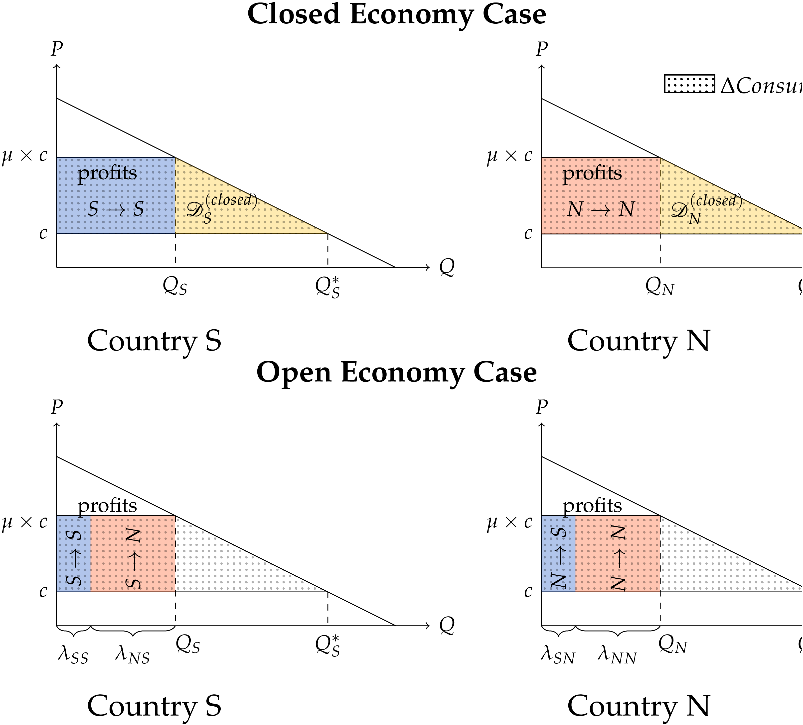
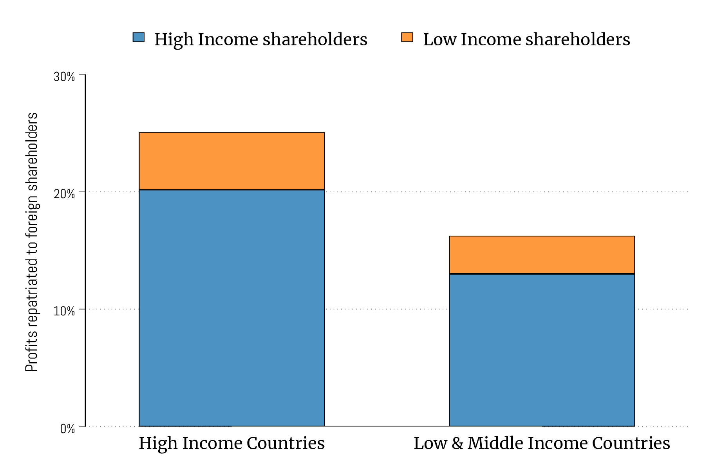
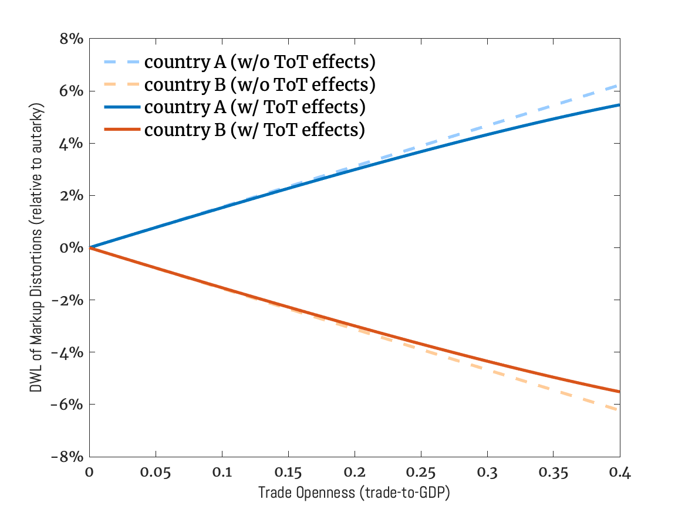
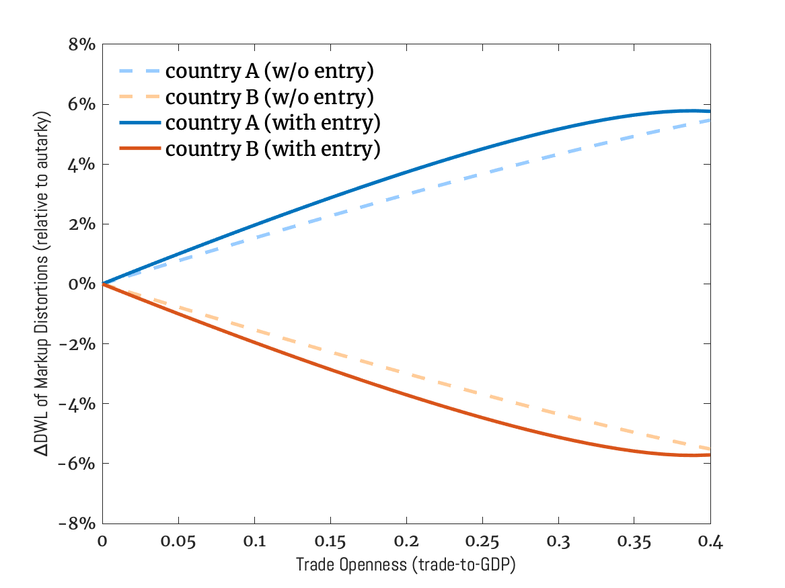
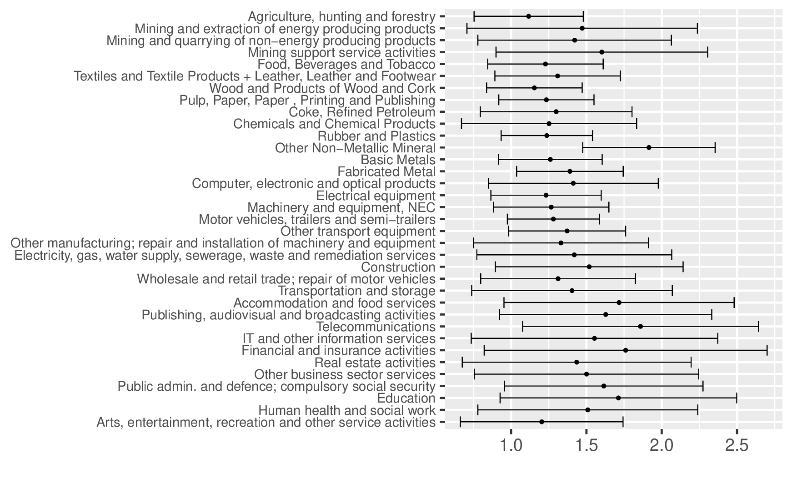
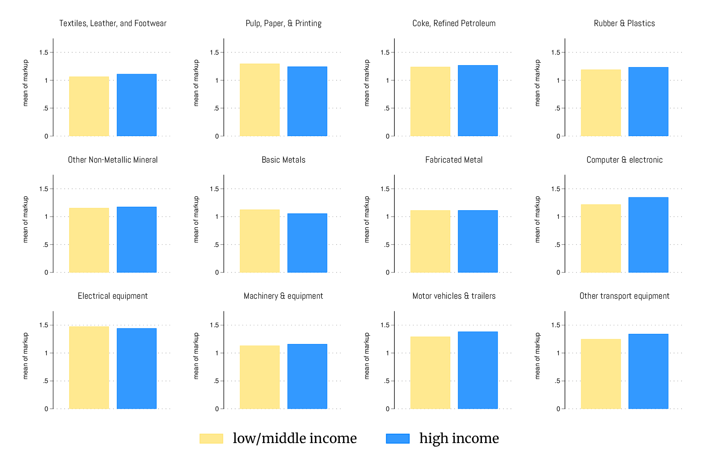

Markups as Shadow Tariffs:
How Market Power Skews Trade Reciprocity
Siying Ding (UIBE)
Ahmad Lashkaripour (Indiana University, CESifo, CEPR)
Volodymyr Lugovskyy (Indiana University)
Working paper · January 2026
Read PDF · Markdown source · Reader view · Slides
Abstract. We show that in open economies, firm markups function as shadow tariffs: they generate domestic deadweight losses but also shift surplus internationally through excess profits earned abroad. These international profit-shifting effects represent a pure distributive externality, benefiting countries that capture a larger share of global excess profits. We derive a new formula for the welfare loss from market power under these distributive externalities and compile global data on firm markups and multinational ownership to measure the tariff-equivalent of observed markups. Our findings reveal that high-income countries capture a disproportionate share of global excess profits. Consequently, the welfare losses from market power for these countries are mitigated, and in some cases reversed, through net profit inflows from abroad. We estimate that these profit-shifting externalities are equivalent to a 17.6 percent shadow tariff imposed by high-income countries—challenging the view that advanced countries have made outsized concessions under existing trade agreements.
1 Introduction
Growing trade integration and market power are two defining features of today’s global economy. Taken together, they raise a basic question: are the welfare losses from market power localized, or do they spill over internationally through increased trade integration? Current research provides no clear answer. The literature has largely focused on how trade integration curbs market power through pro-competitive pressures. Far less attention has been paid to spillover effects: whether the burden of market power has shifted internationally through trade relations. If such spillovers exist, they amount to an international externality, the kind that cannot be addressed by domestic policy alone.
This paper explores this often overlooked aspect of global market power. Our central thesis is that firm markups generate significant international spillover effects, making them functionally equivalent to import tariffs. Like tariffs, markups introduce a domestic deadweight loss. But they also create distributive beggar-thy-neighbor effects: monopolistic markups shift surplus from foreign consumers to domestic firms through excess profits earned abroad. We show that, under fairly general conditions, there exists a shadow tariff schedule that replicates the aggregate welfare effects of markups.
Our analysis begins with a theoretical welfare decomposition that separates the aggregate loss from market power into two parts: \((i)\) the conventional deadweight loss from markup dispersion, and \((ii)\) a distributive profit-shifting externality. The latter mirrors classic terms of trade effects: it benefits countries that capture a larger share of global excess profits at the expense of others.
We measure these distributive profit-shifting effects empirically and test our equivalence result using newly compiled data on firm markups and multinational ownership across countries. Our analysis reveals that high-income economies collect a disproportionate share of global excess profits. As a result, the welfare losses from market power in these countries are partly, or in some cases entirely, counterbalanced by incoming profits earned abroad. The Netherlands offers a particularly bold example: although markups introduce the usual distortion to domestic prices in this country, the inflow of foreign-raised excess profits more than compensates for the loss in consumer surplus, yielding a net aggregate welfare gain.
On average, we estimate that profit-shifting effects have attenuated the aggregate welfare loss from market power in high-income countries by roughly 15%, precisely because these economies are net recipients of global profit inflows. By contrast, lower-income countries that experience net profit outflows face magnified welfare losses—approximately 44% higher than they would in the absence of profit-shifting. These equilibrium profit-shifting effects represent a shadow tariff of about 17.6 percent imposed by high-income nations on their trading partners. In practice, such shadow tariffs erode, or even neutralize, the non-reciprocal concessions that developed countries extend under the WTO framework, challenging a growing line of criticism regarding asymmetries in the global trading system.
Section 3 presents our baseline semi-parametric model of the global economy, which borrows elements from Arkolakis et al. (2019) and Errico and Lashkari (2022). Our baseline model features many countries and industries. Firms apply variable and heterogeneous markups and select into international markets à la Melitz and Ottaviano (2008). We also formalize and quantify extensions with firm entry dissipating quasi-rents, multi-national ownership, and global input-output linkages.
Section 4 presents our sufficient statistics formulas for the aggregate loss from market power under trade relations. We show that the loss can be decomposed into \(\left (i\right )\) an entropy-based measure of markup dispersion, \((ii)\) changes to the gains from trade due to markup-distorted relative factor prices, and \((iii)\) zero-sum international profit-shifting effects.
International profit-shifting effects are a pure distributive externality. Our formula equates them to the ratio of the average expenditure-side markup to the average output-side markup. This ratio diverges from one due to a locational decoupling between where markups burden consumer surplus and where the excess profits are remitted to households. As a result of this decoupling, countries that collect a disproportionate share of global excess profits experience a reduced loss due to net profit inflows from abroad, while other countries endure a disproportionately higher welfare loss due to net profit outflows.
Section 5 presents our duality result: if countries are sufficiently open to trade, firm-level markups function as shadow tariffs. The markups shift the terms of trade in favor of countries that collect a greater share of global excess profits. We establish this result in three steps. First, we show that a country can unilaterally raise its welfare through a uniform markup on exports. Second, we demonstrate that a centralized uniform markup on exports is equivalent to an import tariff, echoing the Lerner symmetry. Third, we show that the centralized markup or tariff yields higher welfare gains than decentralized markups. Taking these results together, we invoke the Intermediate Value Theorem to show that if trade levels are sufficiently high, there exists a uniform tariff that replicates the aggregate welfare effects of decentralized markups.
We calibrate our model using data described in Section 6. First, we construct novel data on multinational profit flows using financial statements of multinational enterprises from the ORBIS database. Second, we estimate global firm markups using two conventional approaches: the cost-based method and the demand-based approach. For the cost-based estimates, we use a global sample of publicly traded firms from WORLDSCOPE. Because performing structural demand estimation at scale is challenging, we employ the computationally efficient linear approximation of Salanié and Wolak (2019), and leverage high-frequency transaction-level trade data to guide identification despite limited information on product characteristics. We supplement these firm-level data with international statistics on aggregate output, expenditure, and sectoral input-output shares from the OECD Inter-Country Input-Output (ICIO) tables. Combining these sources, we estimate (1) markup dispersion, (2) expenditure-weighted average markup, (3) output-weighted average markup, and (4) profit ownership shares across 64 major countries plus an aggregate of the rest of the world over the period 2005–2015.
Using data on global markups and profit flows, we measure the aggregate welfare loss from market power across many countries. We find that these losses have modestly increased over time in most countries, with markups reducing real consumption globally by more than 7% in 2015. However, the losses are markedly larger among low-income countries. In fact, some high-income countries, such as the Netherlands, even benefit on net from market power because of sizable profit inflows from abroad.
The North–South divide in welfare losses from market power is largely driven by profit-shifting externalities. Net excess profit flows from low-income to high-income countries have increased the burden of market power for low-income economies by 44%, while reducing the burden for high-income countries by 15%. This pattern is robust to alternative assumptions about how markups are estimated, multinational ownership structures, global input-output linkages, and fixed-cost payments. These asymmetries reflect the fact that low-income countries tend to specialize in less sophisticated, low-markup industries.
We estimate that international profit-shifting externalities are akin to a 17.6% shadow tariff imposed by high-income countries on their trading partners. This finding sheds fresh light on the current state of concessions within global trade agreements, challenging the growing narrative that high-income countries, such as the United States, have made disproportionately greater concessions under the status quo (Chow et al., 2018). On a superficial level, high-income countries may appear to be making additional concessions and offering preferential treatment to their low-income counterparts under the WTO’s Generalized System of Preferences (GSP). But in reality, profit-shifting externalities more than counteract the GSP concessions. After factoring in the implicit tariff due to profit-shifting externalities, high-income countries are effectively applying a 14% excess tariff on low-income partners.
Our theoretical framework relates to a vibrant literature examining the aggregate welfare loss from market power, and distortions more broadly. A key insight from the early generation of studies, including Lerner (1934) and Harberger (1954), is that aggregate welfare losses in closed economies are linked to markup dispersion. Later work, such as Hsieh and Klenow (2009), Baqaee and Farhi (2020), and Edmond, Midrigan, and Xu (2023) provide parametric formulas for these aggregate welfare losses in closed-economy settings. There are limited counterparts for these formulas in open-economy contexts. Several studies including Atkin and Donaldson (2021), Baqaee and Farhi (2024) provide general frameworks for ex-ante growth accounting in distorted open economies.As in Arkolakis, Costinot, Donaldson, and Rodríguez-Clare (2019), pro-competitive effects are essentially absent in our framework because the direct pro-competitive effects on firm markups are exactly offset by firm-selection effects. However, there is literature examining pro-competitive effects in alternative settings, including Melitz and Ottaviano (2008), Holmes, Hsu, and Lee (2014), De Blas and Russ (2015),Edmond, Midrigan, and Xu (2015), Feenstra and Weinstein (2017). Relatedly, Bai, Jin, and Lu (2024) note that trade integration can exacerbate misallocation in distorted economies, potentially worsening aggregate welfare.The idea that trade can exacerbate domestic misallocation has also been explored by Epifani and Gancia (2011); Bai, Jin, and Lu (2019), Manova (2013), Farrokhi et al. (2024), and Dix-Carneiro et al. (2021) in various contexts. We contribute to this literature by proving a trade-adjusted formula for the aggregate welfare loss from markup distortions, emphasizing the zero-sum profit-shifting effects, and establishing conditional equivalence between firm markups and tariffs.
Our equivalence result is related to an old literature that converts micro-level tariff wedges into one macro-level tariff index (Anderson and Neary (1996, 2005, 2003); Looi Kee et al. (2009); Irwin (2010); Soderbery (2021)). Our approach is similar in that we convert micro-level wedges into a representative tariff index. However, we differ from these papers in important ways: we establish equivalence between decentralized firm-level markups and a centralized tariff index. This equivalence has implications for reciprocity and bilateral tariff concessions, contributing to recent quantitative assessments of reciprocity as in Bown, Parro, Staiger, and Sykes (2023) and Anderson and Yotov (2025).
The profit-shifting externalities emphasized in this paper are related but different from those in the strategic trade policy literature (e.g., Brander and Spencer (1985); Ossa (2012); Bagwell and Staiger (2012); Lashkaripour (2021); Mrázová (2024)). In these frameworks profit-shifting is not an equilibrium externality, but is strategically generated by government policies. More specifically, government may use trade policy measures to promote high-profit activities and strategically shift excess profits to their country. Our contribution to this literature is to highlight the reverse aspect: We demonstrate that decentralized pricing decisions by firms generate large distributive externalities, yielding terms-of-trade benefits that, for some countries, outweigh the domestic efficiency losses from markup pricing. As a result, governments may purposefully avoid regulating firms to preserve these implicit terms of trade benefits.
2 Simple Illustration of Profit-Shifting Externalities
Before presenting our general model, we showcase the profit-shifting mechanism using a simple model. There are two countries: North (\(N\)) and South (\(S\)); and two traded sectors: a differentiated sector and a homogeneous sector. The latter is indexed \(0\) and is perfectly competitive. The homogeneous good is traded and produced one-to-one with labor in both countries. We assign the homogeneous good as the numeraire (\(p_{i,0}=p_{0}=1\)) and assume that the homogeneous sector is sufficiently large to have active production in both countries, equalizing prices internationally.
The utility function across industries is quasi-linear: \(U_{i}=q_{i,0}+\frac {\alpha }{\beta }Q_{i}-\frac {1}{2\beta }Q_{i}^{2}\), where \(Q_{i}\) is a composite aggregator over differentiated firm varieties and \(q_{i,0}\) is the quantity of the homogeneous good. Utility maximization implies a linear demand for the composite differentiated good in each country:
where \(P_{i}\) is the price index of the composite differentiated good in country \(i\).
Production and markups in the differentiated sector.\(\quad\) A fixed measure \(M_{i}\equiv \mid \Omega _{i}\mid\) of firms indexed by \(\omega \in \Omega _{i}\) supply the differentiated good in each country. The firms are symmetric and monopolistically competitive. Each operates with a common unit labor cost, \(c\). The demand for firm varieties of the differentiated good is CES. In particular, the consumption aggregator is \(Q_{i}=(\int _{\Omega _{i}}q_{\omega }^{\frac {\sigma -1}{\sigma }}d\omega )^{\frac {\sigma }{\sigma -1}}\), yielding a constant elasticity demand for firm varieties: \(q_{\omega }=p_{\omega }^{-\sigma }\times P_{i}^{\sigma }Q_{i}\). The monopolistically competitive firms charge a constant markup \(\mu =\frac {\sigma }{\sigma -1}\) over marginal cost \(c\), implying a common firm-level price, \(p_{\omega }=\mu \times c\). The unit price for the composite differentiated good is thus:
For simplicity, we assume henceforth that \(M_{i}=1\), so that the price of the composite differentiated good is equalized to \(P\equiv \mu \times c\) in both countries.
Aggregate welfare loss from markups.\(\quad\) We now characterize the aggregate welfare loss from markups, starting from the closed economy case. As shown in the top panel of Figure 1, the aggregate welfare loss from markups for each country \(i=N,S\) is the reduction in consumer surplus \(\Delta CS_{i}\) minus the profit rebates, \(\frac {\mu -1}{\mu }PQ_{i}\). Namely,
Figure 1 is a textbook digram: it states that the losses coincides with the Harberger triangle. The intuition is that excess profits in each country are ultimately rebated to consumers as supplementary lump-sum transfers. Thus, the loss in consumer surplus due to markups is partially offset by these rebates, leaving a residual deadweight loss equal to the triangle.

Now, consider an open economy setting. Here, the textbook argument breaks down because excess profits are no longer remitted within the same location where they distort prices and reduce consumer surplus. To illustrate this, we retain the assumption that consumer have access to measure \(M_{i}\equiv \mid \Omega _{i}\mid =1\) of varieties. However, they now can choose from domestic and foreign varieties. In particular, \(\Omega _{i}=\Omega _{Ni}\cup \Omega _{Si}\) with \(M_{Ni}\equiv \mid \Omega _{Ni}\mid\) and \(M_{Si}\equiv \mid \Omega _{Si}\mid\). Since the total number of varieties is unchanged (i.e., \(M_{i}=1\)) the price index of the differentiated good is unaffected: \(P=\mu \times c\). However, now a share \(\lambda _{\ell i}=M_{\ell i}/M_{i}\coloneqq M_{\ell i}\) of country \(i\)’s demand quantity and expenditure comes from firms located in country \(\ell \in \{N,S\}\).
Consider a scenario where \(N\) has a revealed comparative advantage in the differentiated sector, due to hosting a larger measure of differentiated firms:
The south \(S\) is, thus, a net importer of the differentiated good and a net exporter of the homogeneous good for markets to clear.
The bottom panel in Figure 1 illustrates the welfare effects of markup pricing in the open economy scenario. Suppose profits earned by firms located in country \(i\) are repatriated to households in that country. The loss to consumer surplus in country \(i\) is now offset by profits earned on both domestic and foreign sales. This leads to a locational decoupling between profit rebates and the loss to consumer surplus. Consequently, the welfare loss from markups no longer equals the Harberger triangle. Instead, the losses are either greater or smaller depending on whether country \(i\) is a net payer or recipient of excess profits to/from abroad. In this example, the aggregate loss is amplified for the South (\(S\)) due to net profit outflows. In particular, noting that \(Q\coloneqq Q_{S}=Q_{N}\) under symmetric demand, we get
By comparison, the aggregate loss for the North (\(N\)) is attenuated by net profit inflows from the South:
Profit-shifting effects, thus, constitute a pure distributive externality. They are zero-sum transfers from one country to another, enabled by inefficient price wedges.
This stylized model clarifies that countries capturing a disproportionate share of global excess profits benefit from profit-shifting externalities. Appendix B presents stylized evidence indicating that high-income countries indeed appropriate a larger share of global excess profits. To conduct formal measurement, we first formalize this mechanism in a general equilibrium model with many countries and sectors operating under variable and heterogeneous markups. We then show that markups operate as shadow tariffs when countries are sufficiently open.
3 Theoretical Model
We consider a semi-parametric model of the global economy consisting of multiple countries, indexed by \(n,\,i=1,..,N\). The product space is partitioned into multiple industries, indexed by \(k,g=1,...,K\). Country \(i\) hosts a fixed number of firms indexed by \(\omega\) in each industry \(k\). Each firm supplies a single traded and differentiated product variety. Labor is the only primary factor of production, and each country \(i\) is endowed with an inelastic supply of labor, \(L_{i}\), that is paid an equilibrium wage, \(w_{i}\). Labor is internationally immobile but mobile across different production activities within a country.
Demand. The representative consumer in country \(n\) maximizes a semi-parametric utility function with unitary elasticity of substitution across industries. Let \(\Omega _{n,k}\) denote the set of varieties available to the consumer in industry \(k\), with \(\mathbf{p}_{n,k}\equiv \{p_{\omega }\}_{\omega \in \Omega _{n,k}}\) denoting the price vector associated with these varieties. The demand for individual varieties is of the homothetic with aggregator form, nesting an important class of demand systems commonly used in the literature. Specifically, the share of expenditure on variety \(\omega \in \Omega _{n,k}\) with price \(p_{\omega }\) is
where \(P_{n,k}\equiv \mathscr {P}_{k}(\mathbf{p}_{n,k})\) is a homogeneous of degree one price aggregator. This aggregator solves the following depending on whether preferences are directly implicit additive, indirectly implicit additive, or of the single aggregator type (e.g., Kimball):
The function \(D_{k}(x)\) is positive-valued and decreasing over \(x\in \left (0,a\right )\) and exhibits a constant relative choke price \(a\in \mathbb {R}_{+}\): \(\lim _{x\rightarrow a}D_{k}\left (x\right )=0\) and \(D_{k}\left (x\right )=0\) for \(x\geq a\). Without loss of generality we normalize \(a=1\), hereafter.
Demand Function.\(\quad\) The demand facing a firm \(\omega \in \Omega _{n,k}\) is fully determined by its price \(p_{\omega }\), two aggregate shifters, \(P_{n,k}\) and \(\Upsilon _{n,k}\). Namely,
where \(P_{n,k}\) is the price aggregator defined above and \(\Upsilon _{n,k}\equiv \frac {e_{n,k}E_{n}}{P_{n,k}}\left (\int _{\Omega _{n,k}}\frac {p_{\omega '}}{P_{n,k}}D_{k}(\frac {p_{\omega '}}{P_{n,k}})d\omega '\right )^{-1}\), with \(e_{n,k}\) denoting the constant share of expenditure on industry \(k\) goods and \(E_{n}\) denoting total expenditure in country \(n\).
Firms and Production. Country \(i\) hosts a fixed set of firms in industry \(k\) that sell to various locations and compete under monopolistic competition. In our baseline model, there are no fixed overhead costs associated with accessing individual markets. Hence, firm selection across markets is driven solely through the choke price. Throughout the paper, we assume that goods markets are perfectly segmented across countries. Let \(\Omega _{in,k}\subset \Omega _{i,k}\) denote the set of firms that actively serve market \(n\) from origin \(i\). For firm \(\omega \in \Omega _{in,k}\) with productivity \(\varphi\), the unit cost of supplying its variety to country \(n\) is,
where \(\tau _{in}\geq 1\) represents the iceberg trade cost (with \(\tau _{ii}=1\)) and \(w_{i}\) is the wage rate.
Firm Productivity Distribution.\(\quad\) The firm-level productivity \(\varphi\) is the realization of a random variable drawn independently across firms in each country and industry from distribution \(G_{i,k}(\varphi )\). As in Melitz and Ottaviano (2008), we assume that \(G_{i,k}\) is Pareto with a location-specific scale parameter but the same shape parameter \(\theta >0\) globally, with \(\varphi \geq \bar {\varphi }_{i,k}\):
Profit Maximization and Markups.\(\quad\) The profits collected by firm \(\omega \in \Omega _{in,k}\) from sales to market \(n\) can be specified as
The firms are monopolistically competitive and choose their price \(p_{\omega }\) à la Bertrand to maximize profits. Firms’ profit maximization implies an optimal price that exhibits a variable and heterogeneous markup \(\mu _{\omega }\) over marginal cost:
where \(\mu _{\omega }=m_{k}(\nu _{\omega })\), with \(\nu _{\omega }\equiv P_{n,k}/c_{\omega }\) representing the competitiveness of variety \(\omega \in \Omega _{in,k}\) in that market. The function \(m_{k}(\nu _{\omega })\) is injective and the implicit solution to
where \(\varepsilon _{k}(x)\equiv -\partial \ln D_{k}(x)/\partial \ln x\). We assume that \(\varepsilon _{k}'(x)<0\), which is a sufficient condition for \(m_{k}(.)\) to be injective. Since \(\lim _{x\to 1}\varepsilon _{k}(x)=\infty\), then \(m_{k}(1)=1\), indicating that the marginal cost \(c\) of the least efficient firm that can remain active is equal to the choke price, irrespective of the firm’s origin. Accordingly, firms actively selling from origin \(i\) to destination \(n\), have \(\nu\) values that span the entire set \(\mathcal {V}=[1,\infty ]\), irrespective of the cost and demand profiles of countries \(i\) and \(n\).
General Equilibrium. For a given set of parameters, equilibrium is vector of demand quantities, \(\mathbf{q}\), prices, \(\mathbf{p}\), wages, \(\mathbf{w}\), and income, \(\mathbf{Y}\), such that the representative consumer’s utility is maximized in each country; firm-level profits are maximized; labor markets clear, so wage payments in country \(i\) equal sales net of markups,
and aggregate expenditure \(E_{i}\) equals aggregate income, \(Y_{i}\), which is wage income plus lump-sum profit rebates:
Our baseline model assumes that profits are entirely rebated to consumers in the firms’ country of origin. Later, we relax this assumption and allow for multinational production and global profit ownership.
Aggregate equilibrium shares.\(\quad\) Aggregate trade shares are described by a gravity equation
with a trade elasticity equal to \(\theta\). The shifter \(\chi _{i,k}\) collects all the constants, including those specific to (\(i,k\)), such as \(\bar {\varphi }_{i,k}\). Total sales from country \(i\) are thus \(Y_{i}=\sum _{n}\sum _{k'}\lambda _{in,k'}e_{n,k'}E_{n}\), where \(e_{n,k}\) is the constant expenditure share on industry \(k\) in destination \(n\) Accordingly, the share of country \(i\)’s sales collected from goods pertaining to industry \(k\) is
Markup-Based Equilibrium Representation. Recall that for each country-pair the set of firms that actively export from one to the other spans the entire set \(\nu \in (1,\infty )\). Hence, it is straightforward to verify that the markup distribution of exports from any origin to any destination has a common form:
Since \(m_{k}(.)\) is injective and firm productivity, and thus, \(\nu\), follows a Pareto distribution, the markup distribution can be obtained as
Additionally, within industry \(k\), there is a one-to-one country-blind correspondence between a firm’s markup and its competitiveness measure, \(\nu _{k}(\mu )=m_{k}^{-1}(\mu )\). As a result, for any market \(n\), the price is fully determined by knowing the markup as
Note that the origin-specific cost shifters (\(\tau\) and \(w\)) do not explicitly appear in the above equation, but they implicitly influence the markup \(\mu\). Firms from higher cost locations charge a lower markup with the same productivity, which also translates to a lower \(m_{k}^{-1}(\mu )\). In other words, firm markups convey all the price-relevant information marginal cost parameters.
Building on these observations, for any market \(n\), the market share of firms with markup \(\mu\) within industry \(k\) is given by
irrespective of its origin, where \(\widetilde {g}_{k}(x)\equiv d\widetilde {G}_{k}(x)/dx\). Note that \(\lambda _{k}(\mu )\) is not only origin blind but it is also destination-blind, since the aggregator \(P_{n,k}\) shifts all prices in market \(n\) uniformly without affecting relative demand shares; thus, dropping out of the above equation.
Aggregate expenditure and sales shares.\(\quad\) Country \(i\)’s aggregate share of expenditure on goods with markup \(\mu \in [1,\infty )\) is the weighted sum across all industries
where \(e_{i,k}\) is the industry-level expenditure share pinned down by the cross-industry utility aggregator and the aggregate sales shares are
where \(y_{i,k}\) is the industry-level sales share described by Equation 3. These equations draw on the result that \(\lambda _{k}(\mu )\) is independent of destination and origin, representing the within-industry share of expenditure and sales for varieties with markup \(\mu\).
Additional Notation. To condense the notation, we hereafter use \(\mathbb {E}_{\omega }\left [.\right ]\), \(\widetilde {\mathbb {E}}_{\omega }\left [.\right ]\), and \(MLD_{\omega }\left [.\right ]\) to denote the arithmetic mean, harmonic mean, and mean log deviation operators. In particular, for a generic function, \(f:[1,\infty )\rightarrow \mathbb {R}\), define
where \(\omega:[1,\infty )\rightarrow [0,1]\) is a well-behaved weight function that satisfies \(\int _{1}^{\infty }\omega \left (\mu \right )d\mu =1\). To showcase how the above operators simplify notation, take the aggregate expendable income described by Equation 2. Appealing to our definition for sales share, \(y_{i}(\mu )\), we can rewrite this equation as
Rearranging this equation yields a more compact expression for aggregate income:
where \(\widetilde {\mathbb {E}}_{y_{i}}\left [\mu \right ]\) is country \(i\)’s output-weighted harmonic mean markup.
4 Aggregate Welfare Loss from Market Power
The market equilibrium is inefficient, because markups cause relative prices (relative marginal rates of substitution) to diverge from relative marginal costs (relative marginal rates of transformation). More formally,
Our goal is to measure the aggregate welfare loss from
market power. To this end, we begin a formal definition of aggregate welfare in our economic
setting.
Aggregate welfare.\(\quad\) We define aggregate welfare as the utility of the representative consumer.
We can specify this measure for country \(i\) under the factual markups \(\boldsymbol {\mu }\) as
where \(v_{i}(.)\) is the indirect utility function. \(E_{i}=\widetilde {\mathbb {E}}_{y_{i}}\left [\mu \right ]w_{i}L_{i}\) denotes expendable income under the status quo, which is the sum of wage income and profit rebates. \(\mathbf{p}_{i}=\{p_{\omega }\}_{\Omega _{i}}\) is the equilibrium vector of prices in country \(i\), where \(p_{\omega }=\mu _{\omega }c_{\omega }\).
Now, consider a counterfactual equilibrium in which markups are eliminated. This would yield an efficient allocation wherein prices are equal to marginal cost globally: \(\mathbf{p}^{*}=\mathbf{c}^{*}\equiv \{c_{\omega }^{*}\}_{\Omega ^{*}}\). Total expendable income equals merely the wage income, \(E_{i}^{*}=w_{i}^{*}L_{i}\), after this shift. Eliminating markups, modifies the entire vector of wages and, thus, marginal costs, with \(w^{*}\) and \(c^{*}\) denoting the wage and marginal cost under the efficient equilibrium. Welfare under the efficient marginal-cost-pricing allocation is
Aggregate welfare loss from market power.\(\quad\) We define the welfare loss from market power for
country \(i\) as the log welfare distance to the efficient marginal-cost-pricing equilibrium:
It is important to reiterate that the marginal-cost-pricing equilibrium without transfers represents one point on the Pareto efficient frontier. As show in Appendix C this allocation can be rationalized as the solution to a global planning problem under a specific choice of Pareto weights. However, as we will later demonstrate, some countries could be worse off after transitioning from the status quo to marginal-cost-pricing equilibrium, though the weighted sum of global welfare improves.
4.1 Closed Economy Setting
As an intermediate step, we analyze a closed economy setting. This setting is characterized by prohibitively high trade costs (\(\boldsymbol {\tau }\rightarrow \infty\)) implying equality between domestic output and expenditure: \(\lambda _{ii}=1\) and \(\mathbf{y}_{i}=\mathbf{e}_{i}\). The following proposition shows that the aggregate loss from markups in this setting is purely determined by markup dispersion.
Proposition 1.The aggregate welfare loss from market power for a closed economy is
The above formula generalizes the Hsieh and Klenow (2009) formula to a setting endogenous wedges and firm selection effects. It reflects the logic outlined earlier. The inefficiency arising from market power stems from the divergence between relative prices and relative marginal costs. If markups are uniform, they preserve the equality between relative prices and relative marginal costs and, therefore, do not disrupt allocative efficiency—even if they are nonzero.
4.2 Open Economy Setting
Now consider an open economy for which supply and demand are decoupled, \(\mathbf{y}_{i}\neq \mathbf{e}_{i}\), and the domestic expenditure share is strictly less than one, \(\lambda _{ii}<1\), and endogenously determined. We derive a new formula for the welfare loss from market power in this case.
Proposition 2.The aggregate welfare loss from market power for an open economy is
The aggregate welfare loss has three elements under trade relations. The first element, \(\text{MLD}_{e_{i}}\left [1/\mu \right ]\), mirrors the closed economy formula. The second terms captures how markup correction affects the gains from trade. These gains depend on the extent to which markup correction modifies relative international expenditure shares, \(\Delta _{\mu }\ln \tilde {\lambda }_{ii}=\ln \tilde {\lambda }_{ii}(\boldsymbol {\mu };\boldsymbol {\tau })-\ln \tilde {\lambda }_{ii}(\boldsymbol {1};\boldsymbol {\tau })\). And since the within-industry markup distribution is origin-blind, expenditure share changes arise exclusively from shifts in relative wages, which are muted as we confirm quantitatively in later analysis.Formally: \(\Delta _{\mu }\ln \tilde {\lambda }_{ii}=\int _{\boldsymbol {\mu }}^{1}\left (\frac {\partial \ln \tilde {\lambda }_{ii}}{\partial \ln \mathbf{w}}\cdot \frac {\partial \ln \mathbf{w}}{\partial \boldsymbol {\mu }}d\boldsymbol {\mu }\right )\), where \(\frac {\partial \ln \mathbf{w}}{\partial \boldsymbol {\mu }}\) is the wage change in response to markup correction and partial derivative in the integral is \(\frac {\partial \ln \tilde {\lambda }_{ii}}{\partial \ln \mathbf{w}}\cdot \frac {\partial \ln \mathbf{w}}{\partial \boldsymbol {\mu }}=\theta \left [-(1-\tilde {\lambda }_{ii})\frac {\partial \ln w_{i}}{\partial \boldsymbol {\mu }}+\boldsymbol {\tilde {\lambda }}_{-ii}\cdot \frac {\partial \ln \boldsymbol {w}_{-i}}{\partial \boldsymbol {\mu }}\right ].\) Also, this terms is fundamentally distributive: if markups depress relative wages in one group of countries, they inevitably elevate them in others. Thus, \(\Delta _{\mu }\ln \tilde {\lambda }_{ii}\) becomes positive for the former and negative for the latter.
The last term, which represents rent-shifting is the most notable, and largely overlooked by the past literature. To understand the intuition, let us first refer back to the closed economy case: there, profits were rebated to the same consumers whose surplus was negatively impacted by markups. Now, markup could undermine consumer surplus in one location, generating excess profits that are rebated elsewhere. Hence, the loss from market power is elevated or mitigated, depending on whether country \(i\) is a net receiver or a net payer of excess profits to the rest of the world. Consistent with this logic, exposure to profits-shifting effects is determined by a country’s revealed comparative advantage across low versus high-markup goods. Specifically,
where \(Cov\left (.\right )\) is the covariance operator. The above equation states that a country’s exposure to profit-shifting externalities is regulated by its pattern of specialization. Positive exposure results from revealed comparative advantage in high-markup goods, i.e., \(\partial (\frac {y_{i}(\mu )}{e_{i}(\mu )})/\partial \mu >0\). And negative exposure stems from revealed comparative advantage in low-markup goods.
Does trade openness impact the loss?\(\quad\) We define the pure effect of trade as the change relative to the no trade of autarky benchmark. Specifically, for a generic variable \(X\) define the trade-induced change as
where \(X(\boldsymbol {\tau })\) denotes the value of \(X\) under the status quo trade cost levels and \(X(\boldsymbol {\infty })\) denotes the counterfactual level under prohibitive trade costs or autarky.
Our goal is to determine \(\Delta _{\tau }\mathscr {D}_{i}^{\mu }\) using the formulas under Propositions 1 and 2. The markup dispersion term in these formulas is invariant to trade, given our previous result that the markup distribution, \(\widetilde {G}_{k}(\mu )\), and the conditional expenditure share, \(\lambda _{k}(\mu )\), is unaffected by trade costs. The intuition for this invariance is that the pro-competitive effects of on markups at the intensive margin are exactly offset by the selection effects at the extensive margin. Thus, the degree of markup dispersion is unaffected by trade within narrowly-defined industry segments, i.e., \(\Delta _{\tau }\text{MLD}_{e_{i}}\left [1/\mu \right ]=0\).
Instead, trade openness influences the welfare loss from market power in two ways. First, market power distorts international relative prices and the gains from trade in open economies. Second, trade activates the zero-sum profit shifting effects discussed earlier. Formally, the pure effect of trade is
The first term represents the change to the efficiency gains from trade relative to what the gains would have been without markup distortions. The second represents profit-shifting effects.
The Gains from Trade.\(\quad\) While profit-shifting externalities attenuate the gains from trade for some countries, they do not reverse the overall benefits of trade. This point can be formalized using the standard definition of the gains from trade, \(GT_{i}=1-W_{i}(\boldsymbol {\mu };\boldsymbol {\infty })/W_{i}(\boldsymbol {\mu };\boldsymbol {\tau })\). These gains are described by the following formula:
where \(\Lambda _{i}\) represents profit-shifting effects specified by Proposition 2 and \(\tilde {\lambda }_{ii}^{\frac {1}{\theta }}\) denotes the efficiency gains, where \(\tilde {\lambda }_{ii}\equiv \prod _{k}\lambda _{ii,k}^{e_{i,k}}\) is the geometric mean of domestic expenditure shares across industries. Overall, the above formula suggests that profit-shifting magnifies the gains from trade for countries that collect net profits from the rest of the world while diminishing them for others. In principle, rent-shifting effects could large enough to reverse the gains from trade. However, outside of extreme cases, the overall gains should remain positive if \(\theta\) is sufficiently low.
4.3 Extensions
We re-derive the formula for \(\mathscr {D}_{i}\) and \(\Delta _{\tau }\mathscr {D}_{i}\) under free entry, multi-national ownership, input-output linkages, and fixed overhead costs. In the interest of brevity we present a verbal description of each extension here, with detailed derivations provided in the appendix.
\(\left (a\right )\) Free Entry and Rent Dissipation. Our baseline model abstracts from firm entry and the fact that a fraction of profits represents quasi-rents used to cover sunk entry costs. Appendix E demonstrates that even with firm entry, cross-country profit imbalances generate distributive firm-relocation externalities that mirror the profit-shifting effects identified earlier. These relocation externalities, however, arise not from excessive markups but rather from excessive entry of firms into low-markup industries.
Specifically, suppose firms pay a sunk entry cost to develop a blueprint. The number of entrants paying this cost is determined by a free-entry condition that equates variable profits to the entry cost in each industry and country. For simplicity, assume demand exhibits a CES parametrization. We show that a closed economy’s distance to the efficient frontier under free entry is
This formula represents the aggregate welfare loss from inefficient firm entry decisions, which fail to internalize the social benefits of adding new product varieties. The extent of this loss is tied to the degree of markup dispersion: \(\mathscr {D}_{i}^{closed}\approx Var_{e_{i}}[\mu ]\). Trade openness modifies welfare losses through firm-relocation externalities. As demonstrated in Appendix section E, the trade-induced change in \(\mathscr {D}_{i}\) is
where \(y_{i}^{*}\left (\mu \right )\) denotes the counterfactual output share under the efficient allocation. One can verify that \(y_{i}^{*}\left (\mu \right )/y_{i}\left (\mu \right )\) is increasing in \(\mu\) if a country is a net exporter of high-markup goods, implying that firm-delocation mitigates the loss from entry distortions (i.e., \(\Delta _{\tau }\mathscr {D}_{i}<0\)) for the same countries that benefit from profit-shifting.The argument goes as follows: restoring efficiency entails increasing the relative wage of countries that are net exporters of high-markup goods. The higher wage suppresses demand relatively more for these countries’ output of low-markup goods, since these goods face more price-elastic demand. In other words, firm-delocation effects generate distributive externalities that merely mirror profits-shifting effects.Figure A.6 in the appendix illustrates this point by simulating a generic model featuring two countries. The countries are symmetric except for their revealed comparative advantage in low-markup versus high-markup goods. The simulation demonstrates that under both free and restricted entry, trade openness amplifies the deadweight loss of monopoly distortions for the country that is a net importer of high-markup goods. Conversely, it reduces these costs for the other country. This affirms that monopoly distortions have internationally zero-sum effects, even in scenarios where firm entry dissipates quasi-rents. The underlying logic is that the degree of market power is correlated with entry distortions, and exposure to these distortions mirrors exposure to profit-shifting under restricted entry.
\(\left (b\right )\) Multinational Ownership and Cross-Border Profit Payments. As documented earlier, only a minor fraction of profits are repatriated to foreign shareholders—hence, the abstraction from cross-border profit payments in our baseline model. However, we can easily extend our baseline formulas to account for such payments. Appendix F derives updated formulas for \(\Delta \mathscr {D}_{i}\), under the condition where a constant share \(\pi _{ni}\) of country \(n\)’s profits are repatriated to international shareholders in country \(i\). The new formula for \(\Delta \mathscr {D}_{i}\) features an additional term that accounts for the cross-border profit payments to foreign shareholders. More formally,
The last term in the above equation represents the net inflow of repatriated profits for country \(i\), calculated as the difference between the inflow and outflow of such profits. Importantly, the semi-parametric model allows us to evaluate this term using aggregate profit ownership shares, denoted as \(\left \{ \pi _{ni}\right \} _{n,i}\), which can be inferred from firm-level ownership data. The calculation also requires data on industry-level output and expenditure shares and the sales-weighted average markup for each industry, as in our baseline model.
\(\left (c\right )\) Global Input-Output Networks. Appendix H examines a global economy in which production relies on labor and internationally traded intermediate inputs. In this extension, the magnitude of international profit-shifting depends on the degree to which the markup paid on imported inputs is re-exported and passed on to foreign consumers after production. As a result, the formulas that describe the impacts of trade on the national-level incidence of monopoly distortions depend on the elements of the global input-output matrix. We present these sufficient statistics formulas in Appendix H and observe that the core logic from our baseline model continues to hold. Specifically, trade intensifies the incidence of monopoly distortions for countries that are net exporters of high-markup goods while reducing it for others, where net exports now take into account global input-output linkages.
\(\left (d\right )\)Accounting for Fixed Overhead Costs. Earlier, we showed that considering sunk entry cost payments does not eliminate the zero-sum welfare effects associated with market power. In Appendix I, we explore how accounting for fixed overhead costs affects the zero-sum international profit-shifting effects. Specifically, we analyze a global economy where serving individual markets requires paying a fixed cost that consumes a portion of the profits. We provide updated formulas for calculating the welfare loss from market power, isolating how trade alters these costs. Our updated formulas demonstrate that a country’s exposure to international profit-shifting in the presence of fixed overhead costs is influenced by two factors: the shape of the firm productivity distribution and how this industry-specific shape parameter correlates with a country’s net exports. These factors determine the net profits paid to the rest of the world via fixed cost payments.
5 Duality Between Tariffs and Markups
This section shows that, for sufficiently open economies, markups function as a shadow tariff. The general idea is that both markups and tariffs introduce a local efficiency loss to extract excess surplus in the form of government revenues or profits from the rest of the world. Both wedges, therefore, have similar aggregate welfare effects. To formalize this point, we first define the general equilibrium under tariffs and markups.
General Equilibrium with Tariffs.\(\quad\) Suppose that the price of every variety \(\omega \in \Omega _{i}\) available to consumers in country \(i\) includes an additional wedge that is applied specifically to imported varieties:
We focus on uniform tariffs, as the optimal tariff is uniform absent markup wedges. That is, the uniform tariff outperforms any heterogeneous tariff schedule for country \(i\), starting from the efficient-pricing schedule.The uniformity of optimal tariffs is a general result that holds across a wide class of constant-returns to scale quantitative trade models, in which labor is the only primary production factor and labor market are non-segmented within countries. Tariffs also generate revenues to the amount of \(\frac {t_{i}}{1+t_{i}}(1-\lambda _{ii})E_{i}\), where \((1-\lambda _{ii})E_{i}\) is total import expenditure. Total expendable income inclusive of tariff revenues is
where \(\lambda _{ii}=\sum _{k}e_{i,k}\lambda _{ii,k}\) is the aggregate domestic expenditure share, aggregate over all industries. The industry-level aggregate expenditure shares are described by the gravity equation adjusted for tariffs:
Lastly, since the economy is plagued with additional distortive wedges, we specify aggregate welfare as an explicit function of both markups and tariffs: \(W_{i}(\boldsymbol {\mu },\mathbf{t};\boldsymbol {\tau })=v_{i}(E_{i},\mathbf{p}_{i})\). Let \(\boldsymbol {\mu }_{i}\equiv \{\mu _{\omega }\}_{\cup _{n}\Omega _{in}}\subset \boldsymbol {\mu }\) denote the subset of markups applied by firms located in country \(i\). With a slight abuse of notation we hereafter use
to denote welfare under a choice of local markups and tariffs given markups and tariffs in the rest of the world.
Intermediate Equivalence Results.\(\quad\) Our goal in this section is to establish a duality between decentralized markups and a centralized uniform tariff. To this end, we begin by presenting an intermediate equivalence result that connects the factual heterogeneous markup schedule and a uniform tariff to fictitious semi-uniform markup schedules.
Lemma 1.For country \(i\): (a) The semi-uniform markup schedule \(\{\mu '_{\omega }\}_{\Omega }\), where
(b) a uniform tariff \(t_{i}\) is equivalent to a uniform markup \(\mu _{\omega }=1+\mathbb {{1}}_{\omega \notin \Omega _{ii}}t_{i}\) applied exclusively to goods produced in country \(i\) and exported abroad.
The intuition behind the lemma is straightforward: the markups assigned to export goods affect aggregate welfare, \(W_{i}=v(Y_{i},\tilde {\mathbf {p}}_{i})\), only through their impact on aggregate income \(Y_{i}\). The lemma shows that replacing export-side markups with semi-uniform industry-wide markups preserves the global wage vector and aggregate profits, and therefore leaves aggregate income unchanged. Domestic prices are also unaffected, \(\tilde {\mathbf {p}}_{i}=\{\mu _{\omega }\}_{\Omega _{i}}\), since markups and wages remain the same for goods sold in the domestic market. The second part of the lemma essentially reflects the Lerner Symmetry: a uniform import tariff is equivalent to a uniform export-side markup, as such a markup functions like a uniform export tax from an aggregate perspective.
Unilaterally-optimal firm markups.\(\quad\) Define the unilaterally-optimal markup schedule that maximizes country \(i\)’s aggregate welfare as
Note that \(\boldsymbol {\mu }_{i}^{*}\) is inefficient from a global standpoint as it does not internalize the welfare externalities of \(\boldsymbol {\mu }_{i}\) on other countries. In fact, as discussed earlier, the socially-optimal markup from a global standpoint is zero.
Our first result characterizes the unilaterally-optimal markup without imposing any uniformity restrictions. It shows that the optimal markup is zero for goods sold in the domestic market, but exceeds decentralized markups for exported goods, and features limit pricing for marginal products.
Lemma 2.The unilaterally-optimal markup schedule for country \(i\) is
The optimal markup on goods sold domestically is zero because such markups distort domestic consumption and transfer surplus from domestic consumers to domestic firms, resulting in a net deadweight loss. In contrast, export-side markups distort prices faced by foreign consumers and transfer surplus from abroad to domestic firms. From an aggregate perspective, the government acts as a multi-product monopolist and thus has an incentive to raise markups on export goods. However, increasing these markups risks pricing some marginal export goods above the foreign choke price. As a result, the markup is set to the limit-pricing level for marginal goods.
Unilaterally-optimal macro markups.\(\quad\) Now we impose uniformity restrictions on markups to characterize the unilaterally-optimal macro markup, which is formally defined as
The added restriction imposes that a common markup be applied to all goods supplied to market \(n,k\). The motivation behind this restriction is that decentralized markups on export goods mimic a macro markup per Lemma 1. We basically want to show that the decentralized markups are not necessarily optimal from an aggregate standpoint. The following lemma states this result.
Lemma 3.The unilaterally-optimal macro markup, involves no markup on domestically-sold goods and a uniform industry-blind markup on exported goods:
Together, Lemmas 1 and 3 state that there exists a uniform tariff that strictly outperforms factual markups from an aggregate welfare standpoint. If we show that there exist a tariff that yields a strictly greater welfare loss than the factual markups, then we can use the Intermediate Value Theorem to prove the existence of a tariff rate that exactly replicates the aggregate welfare effects of markups. For this, we appeal to our previously-derived formulas for the gains from trade and the welfare loss from markups. Since the markup distribution is Pareto, the welfare loss from markups is bounded from above. However, if country \(i\) is sufficiently open, the losses from prohibitive tariffs, \(t_{i}\rightarrow \infty\), can grow arbitrarily large as \(\theta\) is lowered. Under these conditions, prohibitive tariffs exert a cost greater than factual markups. Thus, the Intermediate Value Theorem states that there exists a tariff \(\check {t}_{i}\) that yields the same aggregate welfare level as the decentralized markups, \(\boldsymbol {\mu }_{i}\), under the status quo.
Proposition 3.Suppose factual trade barriers (\(\boldsymbol {\tau }\), \(\mathbf{t}\)) are sufficiently low and \(\theta\) is sufficiently small. Then, markups function as shadow tariffs: There exists a centralized shadow tariff (\(\check {t}_{i}\)) that replicates the aggregate welfare effects of decentralized markups:
The above proposition establishes a local duality between tariffs and monopolistic markups, stating that a tariff can replicate the aggregate welfare effects of decentralized markups charged by firms in that country. However, our forthcoming quantitative analysis reveals an even stronger duality. We identify a global vector of tariffs that replicates the welfare loss from markups globally.
Understanding the markup-tariff duality.\(\quad\) Below we elucidate Proposition 3 by drawing parallels between the trade-off faced by unilateral markups and tariffs. Following Proposition 2, we can decompose the welfare effects of unilateral markups as
The first term is strictly positive because country \(i\) is a net collector of profits from abroad under \(\boldsymbol {\mu }_{i}\) alone. The remaining two terms represent the local efficiency loss from markups. Markups distort relative prices domestically, the loss from which captured by \(MLD_{e_{i}}[1/\mu ]\). They also distort relative prices internationally, leading to a potential reduction in the gains from trade,\(\frac {1}{\theta }\,\Delta _{\mu }\ln \tilde {\lambda }_{ii}\). All in all, the decomposition reveals that decentralized markups impose a local efficiency loss but also extract and transfer excess surplus (profits) from foreign households to the home economy.
Next, consider the aggregate welfare effects of a unilaterally applied uniform tariff \(t_{i}\). Starting from the efficient marginal-cost-pricing equilibrium, the welfare effect of the tariff can be written as
The first term represents excess revenue collected on imports and is strictly positive, where \(\lambda '_{ii}\equiv \lambda _{ii}+\Delta _{t}\lambda _{ii}\) denotes the post-tariff expenditure share. The second term captures the local efficiency loss arising from trade contraction. In line with the textbook optimal-tariff argument, if the revenue gain exceeds the associated efficiency loss, country \(i\) can unilaterally benefit from imposing a tariff. The logic mirrors that for markups: tariffs create a local efficiency loss to extract surplus from foreign producers.
Implications for Trade Reciprocity.\(\quad\) Casting markups as a shadow tariff has two immediate implications. First, it reveals that the monopolistic pricing behavior of firms can be viewed as a decentralized form of terms of trade manipulation, resembling tariffs imposed by a central government. This insight suggests that governments seeking to manipulate the terms of trade, but constrained by international commitments, may choose to refrain from regulating anti-competitive practices to not disrupt the implicit terms of trade benefits. Second, by converting profit-shifting externalities into equivalent tariff measures, we can identify policy solutions that are enforceable under existing trade agreements, as these agreements are designed to discipline explicit border policy measures. For instance, under the World Trade Organization (WTO), tariffs must adhere to the principle of reciprocity (Bagwell and Staiger (1999)). Proposition 3 implies that unilateral tariff concessions could effectively neutralize profit-shifting externalities by simply invoking the reciprocity principle within the WTO framework.
6 Mapping Theory to Data
Calculating the aggregate loss from markups requires the following sufficient statistics: the sales-weighted average markup by industry and aggregate expenditure and sales shares (\(e_{i,k}\), \(y_{i,k}\)). Specifically, the profit shifting term is
where \(\mathbb {\widetilde {E}}_{\lambda _{k}}\left [\mu \right ]\) is the harmonic mean sales-weighted average markup in industry \(k\), which is common across locations. Therefore, it can be calculated by pooling the entire sample of global firms within a narrowly defined industry \(k\) and computing the mean using the global sample.Likewise, the mean log deviation term could be recovered as \(\emph {MLD}_{e_{i}}[1/\mu ]=\mathbb {E}_{e_{i}}\left [\ln \mu \right ]-\ln \tilde {\mathbb {E}}_{e_{i}}\left [\mu \right ]\), where \(\mathbb {E}_{e_{i}}\left [\ln \mu \right ]=\sum _{k}e_{i.k}\mathbb {E}_{\lambda _{k}}\left [\ln \mu \right ]\) and \(\tilde {\mathbb {E}}_{e_{i}}\left [\mu \right ]=\left [\sum _{k}e_{i,k}\tilde {\mathbb {E}}_{\lambda _{k}}\left [\mu \right ]^{-1}\right ]^{-1}\).
In more complex environments, we also need multi-national profits ownership shares (\(\pi _{in}\)) and aggregate input-output shares. Among these statistics, markups must be estimated, while the rest are directly observable. We source the aggregate shares from the OECD INTER-COUNTRY INPUT-OUTPUT (ICIO) TABLES, which cover 64 major countries and 36 sectors from 2005 to 2015. We construct original data on profit ownership shares using ORBIS, which we detail in the following section.
Since profit-shifting effects are distributive by nature, we are interested in whether they disproportionately affect high-income vs low/middle income countries. To this end, we classify the 64 countries in our sample into a low/middle income or high-income category based on the UNITED NATIONS COUNTRY CLASSIfiCATION. Table A.3 presents the complete list of countries in our sample along with their respective income status. It is important to note that our sample also includes an aggregate of the rest of the world, which mostly represents low-income countries and is classified accordingly.
6.1 Multi-National Profit Ownership Shares
We assemble data on profit ownership shares, \(\left \{ \pi _{in,t}\right \}\), using the ORBIS database provided by BUREAU VAN DIJK (BVD). We first clean and refine the data using the algorithm described in Appendix A. The cleaned dataset forms a panel consisting of 3,075,899 firms globally from 2005 to 2015. For each firm \(\omega\) in this sample, we have information on its gross profits, denoted as \(\pi _{\omega }\), in year \(t\), where the subscript \(i\) represents the country in which the firm’s operation is based. Additionally, we observe the firm’s equity share associated with shareholders located in country \(n\), denoted as \(\kappa _{\omega n}\in (0,1]\). Using this information, we calculate the share of country \(i\)’s profits repatriated to country \(n\) in year \(t\) via equity financing using the following formula:
where \(\Omega _{i,t}\) denotes the set of firms operating in country \(i\) in year \(t\) in our sample. By applying this formula for each triplet \(\left (i,n,t\right )\), we obtain square matrices of bilateral profit ownership shares for each year in 2005-2015 that are compatible with ICIO tables. Table 2 in the appendix provides an overview of multinational profit ownership. For each country, it reports the share of profits retained in the country of origin, repatriated to high-income countries, and repatriated to low/middle-income countries.
A first glance at our data reveals that the majority of profits are distributed to domestic shareholders, with only a small portion being repatriated to foreign shareholders, primarily in high-income countries. Over 85% of the profits earned by firms are distributed within the country of origin, and this percentage is even higher among high-income countries. The remaining profits are primarily repatriated to foreign shareholders located in high-income regions. These patterns suggest that repatriated profits contribute to transfer of profits from low and middle-income countries to high-income nations, amplifying the profit-shifting effects due to trade-led specialization.

6.2 Global Markup Estimation
We estimate markups using two different approaches: The cost-based approach and the demand-based approach. While both approaches are well-understood, their macro-level implications have been rarely contrasted. In part, because the demand-based approach has proven difficult to implement at scale across a wide range of countries and industries.
6.2.1 Demand-Based Markup Estimation.
Markups can be recovered from demand elasticities, but demand estimation at scale presents several challenges. First, we must impose parametric assumptions to make progress. To navigate this issue without loss of generality, we estimate a mixed multinomial logit model (MMNL) which can approximate our semi-parametric demand system as closely as possible.This claim follows from Thisse and Ushchev (2016), who show that the homothetic with an aggregator demand system can be alternatively derived from a random utility model; and from McFadden and Train (2000) who establish that any random utility model can be approximated as closely as needed by the MMNL model. Second, the conventional approach to estimating the MMNL model, introduced by Berry et al. (1995, BLP hereafter), is computationally demanding, making it impractical to perform over thousands of product categories. To tackle this issue, we employ a log-linear approximation of the MMNL model proposed by Salanié and Wolak (2019), which is considerably simpler to estimate. The final difficulty lies in the data requirements for large-scale demand estimation. The standard BLP approach leverages data on observable product characteristics to achieve identification, but globally representative data on observed product characteristics is unavailable. We overcome this obstacle by leveraging high-frequency trade and exchange rate data to guide identification, eliminating the need for data on product characteristics.
Before diving into our estimation strategy, let us provide a high-level overview of the MMNL model, which forms the foundation of our estimation. Consider a market populated by an infinite number of households, each of which chooses one product variety from the set \(\Omega _{kt}\) of products available in industry \(k\) in year \(t\). There is also an outside good, the indirect utility of which is normalized to 0. Assuming that the idiosyncratic taste for product varieties is distributed iid according to a type-I Extreme Value distribution with scale parameter 1, the market share of variety \(\omega \in \Omega _{kt}\) can be specified as
In this equation, \(\mathbf{X}\) represents a vector of observed product characteristics, such as prices, and \(\overline {\boldsymbol {\beta }}\) denotes the mean coefficients on these characteristics. \(\boldsymbol {\epsilon }\) is a random coefficient that follows an iid distribution \(N\left (0,\boldsymbol {\Sigma }_{kt}\right )\), where \(\boldsymbol {\Sigma }_{kt}\) is a diagonal variance matrix.More specifically, the utility of household \(h\) derives from purchasing variety \(\omega\) is \(\left (\overline {\boldsymbol {\beta }}_{kt}+\boldsymbol {\epsilon }_{h,kt}\right )\cdot \mathbf{X}_{\omega t}+\xi _{\omega t}+u_{\omega t}\left (h\right )\), where \(u\) accounts for idiosyncratic heterogeneity in taste for product varieties, which is distributed iid according to a type-I Extreme Value distribution with scale parameter 1. The demand shifter, \(\xi\), captures unobserved product characteristics, such as perceived product quality at the market level. The BLP approach to estimating demand recovers \(\boldsymbol {\xi }\) by inverting the market share equation and using the recovered values to enforce the moment condition \(\mathbb {E}\left [\Delta \boldsymbol {\xi }\mid \mathbf{z}\right ]=0\), where \(\mathbf{z}\) represents a set of price instruments. The inversion approach, however, is computationally challenging, particularly for large-scale applications. To overcome these computational hurdles, Salanié and Wolak (2019) propose an alternative approach that approximates \(\boldsymbol {\xi }\) using the following equation:
where \(\tilde {\boldsymbol {\Sigma }}_{kt}=\text{Tr}\left [\boldsymbol {\Sigma }_{kt}\right ]\) and \(\mathbf{K}\) is an artificial regressor whose elements are:
Following this approach and omitting higher-order terms, we obtain an approximated value for \(\xi\), denoted by \(\check {\xi }\). We then estimate the demand parameters by exploiting the moment condition \(\mathbb {E}\left [\Delta \check {\xi }\mid \mathbf{z}\right ]=0\), which is similar to running a linear 2SLS regression.We instrument \(\Delta K_{\omega t}\) using the number of alternative product codes served by the firm in a year as an additional instrument. See Appendix K for more details. Given that \(\ln p\subset \mathbf{X}\), markups are recovered as \(\mu _{\omega t}=\frac {\partial \ln \lambda _{\omega t}}{\partial \ln p_{\omega t}}(1+\frac {\partial \ln \lambda _{\omega t}}{\partial \ln p_{\omega t}})^{-1}\), assuming single-product and profit-maximizing firms.
The next challenge is finding a valid instrument to guide identification with limited data on observed product characteristics. Our dataset reports three observable characteristics: the country of origin, the product classification used by the statistical agency, and the unit price (\(p\)). The demand residual conditional on these characteristics, \(\tilde {\xi }\), is presumably contaminated with omitted variables correlated with \(p\)—unlike small-scale estimations like BLP, where \(\xi\) is purged from a wider range of observable product characteristics using richer data. To overcome this identification challenge, we leverage high-frequency transaction data and interact it with high-frequency exchange rate data to construct a granular shift-share instrument for \(\ln p\) that measures the exposure to exchange rate fluctuations at the variety level and is uncorrelated with \(\tilde {\xi }\). We begin with the observation that the year-over-year change in the unit price of variety \(\omega\) can be approximated by the sales-weighted average of monthly price changes: \(\Delta \ln p_{\omega t}=\sum _{m\in \mathbb {M}_{t}}\lambda _{\omega t}\left (m\right )\Delta \ln p_{\omega t}\left (m\right )\), where \(\lambda _{\omega t}\left (m\right )\) and \(p_{\omega t}\left (m\right )\) denote month \(m\)’s share of export sales and the year-over-year change in export prices in month \(m\) of year \(t\) (i.e., \(m\in \mathbb {M}_{t}\)). Since \(p_{\omega t}\left (m\right )\) is denominated in the destination market’s currency, it varies with the year-over-year change in the exchange rate between variety \(\omega\)’s origin country and the destination market it serves in month \(m\), denoted as \(\mathscr {E}_{t}\left (m\right )\). Motivated by this accounting relationship, we construct the shift-share instrument: \(z_{\omega t}=\sum _{m\in \mathbb {M}_{t}}\lambda _{\omega t-1}\left (m\right )\Delta \ln \mathscr {E}_{t}\left (m\right )\). This instrument interacts the lagged export share \(\lambda _{\omega t-1}\left (m\right )\) with the concurrent exchange rate change per month to measure variety-level exposure to aggregate exchange rate fluctuations. The exposure measure \(z\) is uncorrelated with \(\tilde {\xi }\) under the identifying assumption that aggregate exchange rate fluctuations and past export composition are independent of unobserved concurrent demand shocks.
Our estimation uses the universe of import transactions for Colombia from 2007 to 2016. The dataset encompasses over 93,000 firms from 251 different countries and reports high-frequency transaction-level sales and quantities for individual firms exporting to Colombia at the Harmonized System 10-digit product level. We complement this data with matching high-frequency exchange rate data from the Bank of Canada for the same time period. To fully leverage the granularity of our data, we conduct our estimation using market share and price data for 10-digit product categories. However, to ensure compatibility between our estimated markups and the level of aggregation in the ICIO data, we pool all 10-digit product categories and estimate demand parameters at the ICIO industry level. Appendixes A and K provide further details about our data and estimation methodology.
6.2.2 Cost-Based Markup Estimation.
Our cost-based approach to markup estimation closely follows De Loecker and Warzynski (2012).We should note that the identifying assumptions underlying this approach align more closely with our extended model, which explicitly incorporates intermediate inputs (see Appendix H). This extended model is used for the quantification presented in the next section. It builds on the observation that firm markups can be calculated based on cost minimization as \(\mu _{\omega }=\alpha _{\omega }p_{\omega }q_{\omega }/\mathcal {C}_{\omega }\) for \(\omega \in \Omega _{kt}\), where \(\mathcal {C}_{\omega }\) denotes the variable inputs cost and \(\alpha _{\omega }\) is the firm-level output elasticity with respect to variable inputs. Since estimating the output elasticity at the firm level is practically infeasible, the standard approach to markup estimation recovers the output elasticity under the simplifying restriction that all firms within product category \(k\) use the same production function. Under this restriction, we can estimate the industry-wide output elasticity (\(\alpha _{\omega }\coloneqq \alpha _{kt}\) for all \(\omega \in \Omega _{kt}\)) using the control function approach in Olley and Pakes (1996).In the first stage, we purge output of measurement error and unanticipated shocks by regressing it on a second-order polynomial of inputs and investment. In the second stage, we estimate the output elasticities by fitting an AR(1) process for productivity and leveraging moment conditions that impose orthogonality between implied productivity and lagged variable inputs and current capital inputs. The estimation uses firm-level financial accounts data from COMPUSTATNorth America. The data is reported based on the SIC industry classification. So, we concord SIC industries into the 36 ICIO industries to mach our macro-level trade and production data. For each industry and year during the 2005-2015 period, we separately estimate the output elasticity using the control function method. Since panel data are required for the control function estimation, we employ 5-year rolling windows, assigning the elasticity estimates derived from data in years \(t-2\) to \(t+2\) the central year \(t\). Since balance sheet data record expenditure and sales rather than physical quantities, the structural error term in the production function is contaminated with unobserved prices shifter such as markups. Following De Loecker et al. (2020), we control for unobserved markups using firms’ sales shares within industries.
We then compute firm-level markups using internationally-representative data from the WORLDSCOPE GLOBAL DATABASE. The data reports the cost of variable inputs \(\mathcal {C}_{\omega }\) and sales \(p_{\omega }q_{\omega }\) across 71,546 publicly traded firms from 134 countries during the 2005 -2015 period. Some firms in this database operate in more than one industry, but we do not observe the breakdown of firm-level sales and costs by industry. To handle this, we assume that sales and costs are equally spread across different products. Following De Loecker and Eeckhout (2018), we assume that the output elasticity is the same across countries. Letting \(\hat {\alpha }_{kt}\) denote the estimated output elasticity in industry \(k\), we calculate the markup charged for variety \(\omega \in \Omega _{kt}\) as \(\mu _{\omega }=\hat {\alpha }_{kt}p_{\omega }q_{\omega }/\mathcal {C}_{\omega }\). We then compute the harmonic sales-weighted average markup in industry \(k\) as \(\widetilde {\mathbb {E}}_{\lambda }\left [\mu \right ]=\left [\sum _{\omega \in \Omega _{kt}}\lambda _{\omega }\mu _{\omega }^{-1}\right ]^{-1}\), where \(\lambda _{\omega }\) is firm \(\omega\)’s sales share within \(\Omega _{kt}\). Figure A.7 in the appendix reports \(\widetilde {\mathbb {E}}_{\lambda }\left [\mu \right ]\) derived from our cost-based markup estimates across various ICIO industries.
Estimation results. Figure 3 displays the estimated markups for select manufacturing industries during 2005-2015, based on both demand-based and cost-based approaches. The graph displays the arithmetic sales-weighted average markup for each industry in a given year. Since our transaction-level import data begins in 2007, our demand-based markup estimates (which are obtained from a first-difference estimator) cover years after 2008. As anticipated, there are some discrepancies between the demand-based and cost-based markup values. However, in many industries, the demand- and cost-based markup estimates closely track each other over time. As we show next, both markup estimates yield starkly similar macro-level predictions about the loss from market power and the role of trade specifically.

Model validation using estimated markups: A common implication of models featuring Pareto-distributed productivity and separable demand, such as ours, is that, although countries may differ in their aggregate markup distributions, they share a common markup distribution within narrowly defined industries. For this prediction to hold empirically, the industry classification must be sufficiently disaggregated. Using the ICIO industry codes, we assess this requirement by examining whether within-industry markup distributions are similar across countries. We do so by partitioning the WORLDSCOPE dataset into firms headquartered in high-income and low-/middle-income economies. We then compare average markups at the industry level across these two groups (Appendix Figure A.8). The results indicate that within-industry average markups are virtually identical across income groups, supporting the consistency of our semi-parametric framework with the data. In short, the ICIO industry classification is granular enough for our framework to be empirically valid.
6.3 The Welfare Loss from Market Power: A Global Perspective
In this section, we report the aggregate loss from market power for various countries, which is the sum of the welfare loss due to markup dispersion and the country’s exposure to international profit-shifting externalities. We compute the welfare loss by plugging our estimated markup values and share data into our semi-parametric formula for \(\mathscr {D}_{i}\). Figure 4 presents the results when multi-national profit payments are accounted for. The welfare loss from market power is noticeably higher in low-income regions. Remarkably, some high-income countries, such as the Netherlands, actually benefit from markup distortions.It is important to emphasize that without trade, all countries would have experienced losses from markup distortions. This indicates that for these countries, the positive gains from profit-shifting more than offset the loss from markup dispersion. However, as noted earlier, profit-shifting effects are zero-sum, meaning that these benefits come at the expense of other nations, primarily low-income ones.

We next examine whether the welfare loss from market power has increased over time. Figure 5 presents the findings, tracing the change in the welfare loss from market power between 2005 and 2015. The y-axis denotes the welfare loss, quantified as the percentage loss in real consumption due to markup distortions. The figure presents GDP-weighted averages for high-income and low/middle-income groups, categorized according to the classification outlined in Table A.3. The left panel showcases the welfare loss calculated using demand-based markup estimates, while the right panel displays results derived from cost-based markup estimates. The results in Figure 5 point to substantial welfare losses, but it is important to recognize that these estimates may still understate the true extent of the loss, as they do not take into account the amplification from input-output linkages demonstrated in Figure A.9 in the appendix.A higher substitution elasticity between aggregate industries also amplifies the welfare loss from markup distortions. Figure A.13 in the appendix shows that the welfare rises significantly with a higher cross-industry elasticity of substitution. For the US, increasing elasticity from 1 to 2 more than doubles the welfare loss from markups. This is because resource allocation across industries becomes more sensitive to markup distortions as substitutability increases.

Figure 5 clearly illustrates that markups result in a greater welfare loss for low-income countries compared to high-income nations. Moreover, the welfare loss has been steadily increasing over time, with the trend being particularly acute among low-income nations. While these results are consistent with the existing literature on the rise of market power, there are two noteworthy aspects that set our analysis apart. First, rather than focusing on the sales-weighted average markup as De Loecker et al. (2020), we directly quantify the welfare loss of markups based on theoretical foundation. This distinction is crucial, as the average markup can, in principle, increase without necessarily leading to a greater welfare loss for the economy. Second, prior studies have primarily relied on cost-based markup estimates to document the rise in market power. However, Figure 5 suggests that the same pattern emerges even when demand-based markup estimates are employed.
The lower panels in Figure 5 decompose the change in markup distortions into changes driven by \((1)\) adjustments to output composition and multinational profit payment over time, and \((2)\) adjustments to markup levels over time. The middle panel takes a ceteris paribus approach, holding output and expenditure shares constant at their 2005 levels. This allows us to isolate the effect of changing markup levels on the welfare loss measure, \(\mathscr {D}_{i}\). Conversely, the bottom panel keeps markups fixed at their 2005 levels and tracks the change in \(\mathscr {D}_{i}\) that can be attributed to shifts in the economic composition. The results from these lower panels are quite revealing. They demonstrate that the global increase in the welfare loss from markups is entirely driven by changes in markup levels over time. Meanwhile, the change in output composition and multinational profit payment has merely redistributed the burden of markup distortions, shifting it from high-income countries to their low-income counterparts. These findings provide an initial glimpse into the zero-sum nature of profit-shifting effects, which are formally quantified in the following section.
6.4 Profit-Shifting Effects: North-South Redistribution
We invoke Proposition 2 to isolate how trade integration has shifted the burden of markup distortions internationally. For completeness, we measure the impact of trade under various considerations such as multi-national ownership, global input-output linkages, and fixed overhead costs that trim profits. It is important to note that from the lens of our semi-parametric model, trade modifies the burden of markup distortions primarily through profit-shifting effects. The logic is that trade integration prompts specialization based on comparative advantage, dampening the welfare loss from markups for countries that specialize in high-markup product categories, while amplifying it for others through profit-shifting.
Figure 6 displays the change in the welfare loss from markups due to trade integration, reporting average effects across low- and high-income country groups. The results reveal that through international profit-shifting, trade has shifted the burden of markups from high-income nations to low-income countries. This finding is also robust to the method used for markup estimation and persists even after accounting for multi-national ownership, global input-output networks, and fixed overhead costs.

Our findings, averaged across all years and specifications (such as demand-based and cost-based markup estimation), indicate that trade integration has had a significant impact on the welfare loss from markups for low- and middle-income countries. On average, it has increased the welfare loss for these countries by 44% while simultaneously reducing it by 15% among high-income nations. These effects represent substantial transfers between countries that occur primarily through international profit-shifting, a phenomenon that has been largely overlooked in previous literature. The existing literature has mainly focused on the pro-competitive effects of trade, which reduce markup dispersion and are internationally symmetric, with some studies finding these effects to be relatively small.
The asymmetric effects of trade on the loss from market power become even more pronounced when considering the role of multi-national ownership and the repatriation of profits to foreign shareholders. This finding is consistent with our previous empirical observation that profits earned by multi-national corporations are primarily repatriated to shareholders in high-income countries. When global input-output (IO) linkages are accounted for, the impact of trade is somewhat attenuated, although the directionality of the effects remains the same. This attenuation occurs because IO linkages amplify the welfare loss of markup dispersion while diluting the extent of profit-shifting, making the profit-shifting component of the welfare loss less consequential. When fixed overhead costs are considered, the asymmetric effects of trade are amplified, suggesting that fixed cost payments incurred in foreign markets contribute to profit-shifting, as low-income countries paying net quasi-rents to high-income partners in the form of fixed cost payments.
It is important to note that the results emerging from Figure 6 are not apparent a priori. While profit-shifting effects are zero-sum by nature, there is no inherent reason to believe that they favor high-income countries. That being said, Figure 6 masks the heterogeneity in exposure to profit-shifting within income groups. To delve deeper into this aspect, Figures A.10 and A.11 in the appendix provide a more granular visualization of the impacts of profit-shifting effects, highlighting heterogeneous effects even within low and middle-income groups. For example, profit-shifting is less detrimental for the Chinese economy but extremely costly for African countries.For most countries, the impacts of international profit-shifting have a stable sign across specifications. In a few instances, however, accounting for input-output linkages or firm-selection reverses our baseline predictions. Relatedly, Figure A.12 in the appendix visualizes the flow of excess profits on a bilateral basis, although interpreting these flows is more intricate due to issues related to balanced trade and the fact that these flows do not directly translate to welfare effects without proper normalization.
6.5 A New Perspective on Tariff Reciprocity
Section 5 demonstrated that, under certain conditions, firm markups act as de facto shadow tariffs. The resulting profit-shifting externalities from decentralized markups mirror the terms-of-trade effects typically associated with asymmetric tariffs. This equivalence has important implications for tariff reciprocity under current trade agreements. This section empirically tests the equivalence by identifying a shadow tariff schedule that replicates the distributive effects of decentralized markups. The quantitative methodology is outlined in Appendix N which derives a shadow tariff schedule, \(\{\check {t}_{i}\}\), that reproduces the aggregate welfare impact of firm markups. The resulting effective tariff is defined as \(t_{i}+\check {t}_{i}\), where \(t_{i}\) denotes the applied (or explicit) tariff.
Figure 7 compares effective tariffs with applied tariffs. At first glance, high-income countries appear to levy lower tariffs than low-income countries, consistent with the WTO’s Generalized System of Preferences (GSP). In 2015, high-income countries had a weighted average applied tariff of just 2.3%, compared to 5.9% for low- and middle-income countries—suggesting greater tariff concessions by wealthier economies under the WTO framework. However, once shadow tariffs from markup distortions are incorporated, the effective tariff landscape shifts considerably. For high-income countries, the effective tariff rises to 19.9%. Thus, contrary to the intended spirit of the GSP, high-income countries effectively impose an excess tariff of 14% (= 19.9% – 5.9%) on imports from low-income trading partners.

These results state that the monopolistic objective of firms in high-income countries aligns with the government’s desire to manipulate the terms of trade—possibly, discouraging regulation of anti-competitive behaviors that would otherwise be addressed in a closed economy. Accordingly, while monopolistic pricing practices reflect a domestic policy failure in a closed economy, they amount to a negative international externality in a global setting. Shallow cooperation, thus, entails that governments tackle the profit-shifting externality to prevent adverse impacts on their trading partners, at least based on the basic principles underlying the WTO.
The first-best policy to address profit-shifting externalities is internationally coordinated markup correction. However, implementing this solution is challenging within the WTO’s current framework, which focuses on regulating and coordinating border policies rather than domestic policy measures. Therefore, we explore two alternative policy solutions in Appendix O. The first leverages existing mechanisms within the WTO, advocating for a revised interpretation of the reciprocity principle. The second solution could be integrated into the evolving global minimum tax agreement.
6.6 Discussion: Mechanism and Limitations
This section provides some explanations for the pro-rich bias of profit-shifting effects and
examines why these effects have diminished over time. We also discuss limitations that
should be taken into account when interpreting our findings.
Mechanism.\(\quad\) Based on our formulas, countries that specialize in high-markup industries benefit
from profit-shifting at others’ expense. Figure 6 indicates that high-income countries are the
primary beneficiaries, raising the question of what drives this pattern. Theory offers several
explanations: Fajgelbaum et al. (2011) and Lashkaripour (2020) argue that high-income
countries have a natural comparative advantage in high-markup industries. In the
former, comparative advantage is driven by the home-market effect. In the latter, it
is driven by higher input costs in rich countries, which favor production of less
price-elastic, high-markup goods. Another explanation is based on differences in factor
endowments and institutional quality across countries. Appendix L shows that better legal
and credit-market institutions are associated with specialization in high-markup
industries, leading to net gains from profit-shifting. By contrast, natural-resource
abundance correlates with losses, consistent with the resource curse. Overall, institutions
that promote specialization in high-markup industries are generally correlated
with income, thereby explaining the pro-rich bias of international profit-shifting.
Longitudinal Trends.\(\quad\) Figure 6 indicates that profit-shifting from low- to high-income nations
may have dampened over time. This trend can be attributed to two possible factors. First,
middle-income nations may have become more specialized in high-markup industries
between 2005 and 2015. Second, markup levels may have evolved in a way that dampens
profit-shifting from low-to-high-income nations. We examine these two possibilities in
Appendix M. Our analysis reveals that the dampening effect is almost entirely explained by
changes in North-South specialization patterns. That is, low and middle income nations
have become increasingly specialized in sophisticated, high-markup industries,
dampening the extent to which profits flow out of these economies to high-income
trading partners—demonstrated by the bottom panel of Figure A.3 in Appendix
M.We use a static classification of countries from the United Nations when dividing our sample into low- and high-income countries. An alternative approach is to classify countries according to their real GDP per capita. The reduced-form analysis conducted using this alternative classification in Appendix B does not suggest a dampening of North-South profit-shifting effects.
Limitations.\(\quad\) Several limitations are worth noting. Our markup estimation is subject to the
usual limitations. Our cost-based markup estimates draw from publicly listed firms’ balance
sheets, and may not be fully representative. The demand-based approach recovers the
markup distribution based on what global firms charge in the Colombian market. Under our
theoretical framework, the recovered distribution for each product can be extrapolated to other
markets.Specifically, while individual firms do pursue pricing-to-market in our framework, the aggregate markup distribution remains the same across markets due to firm-selection effects.
So, to the extent that our Pareto and demand assumptions hold, the demand-based markups
are globally representative. Here, the close alignment between demand- and cost-based
markups is reassuring. A second limitation is that we measure only output market power.
This poses two issues. First, markups derived from revenue elasticities may reflect not
output-side markups but input-side markdowns arising from monopsony power (Bond
et al. (2021)).Two points are worth highlighting in relation to this concern: (a) our demand-based markup estimates are immune to this critique; and (b) De Ridder et al. (2022) find that although revenue-based data may bias markup levels, the correlation between the estimated and actual markup remains strong.
Second, if markdowns—not markups—drive the wedge, trade would intensify monopsony
distortions for workers in countries facing larger markdowns, likely those in high-income
economies.
7 Conclusion
The global rise in market power and trade openness are two hallmarks of the current economic era. We show that these developments have led to substantial welfare transfers from low-income to high-income countries through international profit-shifting externalities. These effects are akin to implicit tariffs that distort the terms of trade in favor of high-income countries. This observation suggests that, contrary to prevailing wisdom, low-income countries have made greater concessions under the current system of global trade agreements. To create a more level playing field, we propose two policy reforms that can mitigate the burden of international profit-shifting on low-income countries. The first reform involves high-income countries making unilateral tariff concessions under the WTO’s Generalized System of Preferences (GSP) mechanism. The second reform entails the implementation of a destination tax on profits, which, while only partially effective, may be more viable from a political economy standpoint. These policy solutions require international coordination among cooperative governments. In the absence of such cooperation, countries must resort to second-best unilateral policy remedies. Characterizing the optimal design of unilateral policy remedies and evaluating their effectiveness presents a promising avenue for future research.
References
Acemoglu, D., P. Antràs, and E. Helpman (2007). Contracts and technology adoption. American Economic Review97 (3), 916–943.
Anderson, J. E. and J. P. Neary (1996). A new approach to evaluating trade policy. The Review of Economic Studies63 (1), 107–125.
Anderson, J. E. and J. P. Neary (2003). The mercantilist index of trade policy. International Economic Review44 (2), 627–649.
Anderson, J. E. and J. P. Neary (2005). Measuring the restrictiveness of international trade policy. MIT Press Books1.
Anderson, J. E. and Y. V. Yotov (2025). Tari* reciprocity.
Angrist, J. D., G. W. Imbens, and D. B. Rubin (1996). Identification of causal effects using instrumental variables. Journal of the American Statistical Association91 (434), 444–455.
Arkolakis, C., A. Costinot, D. Donaldson, and A. Rodríguez-Clare (2019). The elusive pro-competitive effects of trade. The Review of Economic Studies86 (1), 46–80.
Arkolakis, C., A. Costinot, and A. Rodríguez-Clare (2012). New trade models, same old gains? American Economic Review102 (1), 94–130.
Atkin, D. and D. Donaldson (2021). The role of trade in economic development. Technical report, National Bureau of Economic Research.
Bagwell, K. and R. W. Staiger (1999). An economic theory of GATT. American Economic Review89 (1), 215–248.
Bagwell, K. and R. W. Staiger (2012). Profit shifting and trade agreements in imperfectly competitive markets. International Economic Review53 (4), 1067–1104.
Bai, Y., K. Jin, and D. Lu (2019). Misallocation under trade liberalization. Technical report, National Bureau of Economic Research.
Bai, Y., K. Jin, and D. Lu (2024). Misallocation under trade liberalization. American Economic Review114 (7), 1949–1985.
Baqaee, D. R. and E. Farhi (2020). Productivity and misallocation in general equilibrium. The quarterly journal of economics135 (1), 105–163.
Baqaee, D. R. and E. Farhi (2024). Networks, barriers, and trade. Econometrica92 (2), 505–541.
Beck, T. (2002). Financial development and international trade: Is there a link? Journal of International Economics57 (1), 107–131.
Berry, S., J. Levinsohn, and A. Pakes (1995). Automobile prices in market equilibrium. Econometrica: Journal of the Econometric Society, 841–890.
Bond, S., A. Hashemi, G. Kaplan, and P. Zoch (2021). Some unpleasant markup arithmetic: Production function elasticities and their estimation from production data. Journal of Monetary Economics121, 1–14.
Botero, J. C., S. Djankov, R. L. Porta, F. Lopez-de Silanes, and A. Shleifer (2004). The regulation of labor. The Quarterly Journal of Economics119 (4), 1339–1382.
Bown, C. P., F. Parro, R. W. Staiger, and A. O. Sykes (2023). Reciprocity and the china shock.
Brander, J. A. and B. J. Spencer (1985). Export subsidies and international market share rivalry. Journal of International Economics18 (1-2), 83–100.
Caliendo, L. and F. Parro (2015). Estimates of the trade and welfare effects of NAFTA. The Review of Economic Studies82 (1), 1–44.
Chor, D. (2010). Unpacking sources of comparative advantage: A quantitative approach. Journal of International Economics82 (2), 152–167.
Chow, D. C., I. Sheldon, and W. McGuire (2018). How the United States withdrawal from the trans-pacific partnership benefits China. U. Pa. JL & Pub. Aff.4, 37.
Costinot, A. (2009). On the origins of comparative advantage. Journal of International Economics77 (2), 255–264.
Costinot, A. and A. Rodríguez-Clare (2014). Trade theory with numbers: Quantifying the consequences of globalization. In Handbook of international economics, Volume 4, pp. 197–261. Elsevier.
Cuñat, A. and M. J. Melitz (2012). Volatility, labor market flexibility, and the pattern of comparative advantage. Journal of the European Economic Association10 (2), 225–254.
De Blas, B. and K. N. Russ (2015). Understanding markups in the open economy. American Economic Journal: Macroeconomics7 (2), 157–80.
De Loecker, J. and J. Eeckhout (2018). Global market power. Technical report, National Bureau of Economic Research.
De Loecker, J., J. Eeckhout, and G. Unger (2020). The rise of market power and the macroeconomic implications. The Quarterly Journal of Economics135 (2), 561–644.
De Loecker, J. and F. Warzynski (2012). Markups and firm-level export status. American Economic Review102 (6), 2437–71.
De Ridder, M., B. Grassi, G. Morzenti, et al. (2022). The hitchhiker’s guide to markup estimation.
DellaVigna, S. and M. Gentzkow (2019). Uniform pricing in us retail chains. The Quarterly Journal of Economics134 (4), 2011–2084.
Dix-Carneiro, R., P. Goldberg, C. Meghir, and G. Ulyssea (2021). Trade and informality in the presence of labor market frictions and regulations. Economic Research Initiatives at Duke (ERID) Working Paper (302).
Edmond, C., V. Midrigan, and D. Y. Xu (2015). Competition, markups, and the gains from international trade. American Economic Review105 (10), 3183–3221.
Edmond, C., V. Midrigan, and D. Y. Xu (2023). How costly are markups? Journal of Political Economy131 (7), 1619–1675.
Epifani, P. and G. Gancia (2011). Trade, markup heterogeneity and misallocations. Journal of International Economics83 (1), 1–13.
Errico, M. and D. Lashkari (2022). The quality of us imports and the consumption gains from globalization. Boston College.
Fajgelbaum, P., G. M. Grossman, and E. Helpman (2011). Income distribution, product quality, and international trade. Journal of Political Economy119 (4), 721–765.
Farrokhi, F., A. Lashkaripour, and H. S. Pellegrina (2024). Trade and technology adoption in distorted economies. Journal of International Economics150, 103922.
Feenstra, R. C. and D. E. Weinstein (2017). Globalization, markups, and US welfare. Journal of Political Economy125 (4), 1040–1074.
Goldsmith-Pinkham, P., I. Sorkin, and H. Swift (2020). Bartik instruments: What, when, why, and how. American Economic Review110 (8), 2586–2624.
Hall, R. E. and C. I. Jones (1999). Why do some countries produce so much more output per worker than others? The Quarterly Journal of Economics114 (1), 83–116.
Harberger, A. C. (1954). Monopoly and resource allocation. The American Economic Review44 (2), 77–87.
Hodler, R. (2006). The curse of natural resources in fractionalized countries. European Economic Reviews50 (6), 1367–1386.
Holmes, T. J., W.-T. Hsu, and S. Lee (2014). Allocative efficiency, mark-ups, and the welfare gains from trade. Journal of International Economics94 (2), 195–206.
Hsieh, C.-T. and P. J. Klenow (2009). Misallocation and manufacturing TFP in China and India. The Quarterly Journal of Economics124 (4), 1403–1448.
Irwin, D. A. (2010). Trade restrictiveness and deadweight losses from us tariffs. American Economic Journal: Economic Policy2 (3), 111–133.
Kaufmann, D., A. Kraay, and M. Mastruzzi (2010). The worldwide governance indicators: Methodology and analytical issues. World Bank Policy Research Working5430.
King, R. G. and R. Levine (1993). Finance and growth: Schumpeter might be right. The Quarterly Journal of Economics108 (3), 717–737.
Kletzer, K. and P. Bardhan (1987). Credit markets and patterns of international trade. Journal of Development Economics27 (1-2), 57–70.
Krugman, P. (1987). The narrow moving band, the Dutch disease, and the competitive consequences of Mrs. Thatcher: Notes on trade in the presence of dynamic scale economies. Journal of Development Economics27 (1-2), 41–55.
Lane, P. R. and A. Tornell (1996). Power, growth, and the voracity effect. Journal of Economic Growth1 (2), 213–241.
Lashkaripour, A. (2020). Within-industry specialization and global market power. American Economic Journal: Microeconomics12 (1), 75–124.
Lashkaripour, A. (2021). The cost of a global tariff war: A sufficient statistics approach. Journal of International Economics131, 103419.
Lashkaripour, A. and V. Lugovskyy (2023). Profits, scale economies, and the gains from trade and industrial policy. American Economic Review113 (10), 2759–2808.
Lerner, A. P. (1934). The concept of monopoly and the measurement of monopoly power. The review of economic studies1 (3), 157–175.
Levchenko, A. A. (2007). Institutional quality and international trade. The Review of Economic Studies73 (3), 791–819.
Looi Kee, H., A. Nicita, and M. Olarreaga (2009). Estimating trade restrictiveness indices. The Economic Journal119 (534), 172–199.
Manova, K. (2013). Credit constraints, heterogeneous firms, and international trade. Review of Economic Studies80 (2), 711–744.
Matsuyama, K. (2005). Credit market imperfections and patterns of international trade and capital flows. Journal of the European Economic Association3 (2-3), 714–723.
McFadden, D. and K. Train (2000). Mixed mnl models for discrete response. Journal of applied Econometrics15 (5), 447–470.
Mehlum, H., K. Moene, and R. Torvik (2006). Institutions and the resource curse. The Economic Journal116 (508), 1–20.
Melitz, M. J. and G. I. Ottaviano (2008). Market size, trade, and productivity. The review of economic studies75 (1), 295–316.
Mrázová, M. (2024). Trade agreements when profits matter. Journal of International Economics152, 103966.
Nunn, N. (2007). Relationship-specificity, incomplete contracts, and the pattern of trade. The Quarterly Journal of Economics122 (2), 569–600.
Olley, G. S. and A. Pakes (1996). The dynamics of productivity in the telecommunications equipment industry. Econometrica64 (6), 1263–1297.
Ossa, R. (2012). Profits in the "new trade" approach to trade negotiations. American Economic Review102 (3), 466–69.
Rajan, R. G. and L. Zingales (1998). Financial dependence and growth. American Economic Review88 (3), 559–586.
Salanié, B. and F. A. Wolak (2019). Fast,"robust", and approximately correct: Estimating mixed demand systems. Technical report, National Bureau of Economic Research.
Soderbery, A. (2021). Trade restrictiveness indexes and welfare: A structural approach. Canadian Journal of Economics/Revue canadienne d’économique54 (3), 1018–1045.
Tang, H. (2012). Labor market institutions, firm-specific skills, and trade patterns. Journal of International Economics87 (2), 337–351.
Thisse, J.-F. and P. Ushchev (2016). When can a demand system be described by a multinomial logit with income effect? Higher School of Economics Research Paper No. WP BRP139.
Van der Ploeg, F. (2011). Natural resources: Curse or blessing? Journal of Economic Literature49 (2), 366–420.
Data Appendix (for online publication)
A Data Sources
A.1 UNIDO-INDSTAT
This dataset is provided by the UNITED NATIONS INDUSTRIAL DEVELOPMENT ORGANIZATION(UNIDO), and is accessible through the UNIDO Data Portal. The data can be downloaded after registering for access on the UNIDO website, and it includes comprehensive industrial statistics covering a wide range of countries, years, and industries. We use the subsample corresponding to the 1980-2015 period, covering 196 countries and 23 ISIC rev.3 industries. For each industry and country in a given year, the data reports output, value added, wages and salary payments, number of employees, number of establishments, and gross fixed capital formation, among other variables. We use these variables to calculated aggregate accounting profits margin for each industry-country-year triad. We supplement this data with its derivative, the TRADEPROD database, developed and maintained by the CEPII. Users can access the TradeProd database through the official CEPII web portal after registration, which requires basic information and agreement to the terms of use. The TRADEPROD database only covers manufacturing industries, which are more traded and spans fewer years than the UNIDO-INDSTAT data. However, it reports domestic absorption measures per industry, allowing us to calculate net exports for each industry-country-year triad.
A.2 THE OECD INTER-COUNTRY INPUT-OUTPUT (ICIO) TABLES.
The ICIO Tables (2018 edition) provides comprehensive information on international trade and production across major global economies. This dataset includes a sample of 64 major countries, covering 36 industries that span the entire economy from 2005 to 2015.ICIO tables include 64 countries (i.e. 36 OECD countries and 28 non-OECD economies), the Rest of the World and split tables for China and Mexico. In our analysis, we exclude the split tables for China and Mexico (i.e. CN1, CN2, MX1, and MX2). The dataset reports extensive information on trade flows across various origin-destination pairs and national level input-output tables disaggregated at the ICIO sector level. Users can access the ICIO data through the official OECD web portal after registration which requires basic user information and agreement to the terms of use. We use the ICIO data to construct country and industry-level output and expenditure shares (\(y_{i,k}\) and \(e_{i,k}\)) as well as national-level input-output shares, \(\alpha _{i,gk}\). In particular, from the ICIO tables, we can observe \(X_{ni,k}\), which is the total flows of industry \(k\) goods from origin country \(n\) to destination country \(i\). The expenditure share \(e_{i,k}\) and output shares \(y_{i,k}\) of country \(i\) in industry \(k\) in the baseline model are constructed as follows with this information:
A.3 COMPUSTAT – NORTH AMERICA
We conduct the production function estimation per industry using firm-level financial accounts data from COMPUSTAT – NORTH AMERICA, which provides rich coverage regarding capital inputs and firm-level investments for publicly held companies in the United States and Canada. This database provided by S&P GLOBAL MARKET INTELLIGENCE and can be accessed through the WHARTON RESEARCH DATA SERVICES (WRDS) platform, which requires an institutional subscription. Users affiliated with subscribing institutions can download the data after logging into the WRDS platform and navigating to the COMPUSTAT – NORTH AMERICA database. The data is reported based on the SIC industry classification. So, we concord SIC industries into the 36 ICIO industries for which we have macro-level trade and production data using the following steps:
- (a)
we obtain the full sample of companies during the period 2003-2017 from the COMPUSTAT – NORTH AMERICA database.
- (b)
we deflate firms’ sales, cost of good sold, capital expense, staff expense, and general administrative expanse by U.S. GDP.
- (c)
we drop observations with negative sales, cost of good sold, capital expense, staff expense, general administrative expanse, and sales-to-cost ratio.
- (d)
since the database only reported the SIC industry classification, we have to concord SIC industries into the 36 ICIO industries for which we have macro-level trade and production data discussed in Section A.2. Unfortunately, we do not have official correspondence table mapping SIC to ICIO industry classification. Therefore, we concord SIC to ICIO by the following steps:
\[SIC\overset {(a)}{\rightarrow }ISIC\:rev.3\overset {(b)}{\rightarrow }ISIC\:rev.3.1\overset {(c)}{\rightarrow }ISIC\:rev.4\overset {(d)}{\rightarrow }ICIO\]
The official correspondence tables of steps (a)-(c) can be found on the website of United Nation; and the correspondence table of step (d) can be found on the data descriptions from OECD Inter-Country Input-Output (ICIO) Tables. In addition, we also check and correct the correspondence tables manually by the verbal descriptions of each industry classifications to make sure we have the best match from SIC to ICIO. This step gives us 21,386 firms operating across 36 ICIO industries in United States and Canada from 2003 to 2017. After complaining the final data, we separately estimate the output elasticity for each industry and year during the 2005-2015 period using the control function method described in the main text.
A.4 WORLDSCOPE
WORLDSCOPE is a database provided by THOMSON REUTERS, containing financial statement data and other financial information for publicly traded companies worldwide. The database can be accessed through the THOMSON REUTERS EIKON platform or DATASTREAM, both of which require a subscription. Users with access to these platforms can download the data by searching for the desired firms and variables within the WORLDSCOPE database. In this paper, we process the data by the following steps:
- (a)
we download firm-level data of sales and costs of good sold from the WORLDSCOPE database during the 2005 - 2015 period.
- (b)
we drop observations with negative values on sales or costs of good sold. This steps give us 71,546 publicly traded firms operating across 987 SIC industries in 134 countries.
- (c)
some firms in this database operate in more than one industry, but we do not observe the breakdown of firm-level sales (\(y\)) and input costs (\(c\)) by industry. We treat a particular firm that operates in \(n\) SIC-industries as \(n\) different single product firms, and each firm is assumed to have sales as \(y/n\) and cost as \(c/n\). Then we can calculate firm’s cost-sales ratio that will be used in the cost-based markup estimation process.
Table 1 reports the summary statistics including the average number of unique firms per country, the average number of industries served per firm, the average sales per firm, and the average input cost per firm. We report statistics for 63 main countries/regions in the ICIO database and the rest of the world.
| Country | avg number of industries | sales per firm | input cost per firm | |
| number of firms | operated per firm | (local currency) | (local currency) | |
| Argentina | 107 | 4 | 3,253.1 | 1,813.2 |
| Australia | 2,041 | 3 | 462.9 | 259.7 |
| Austria | 102 | 4 | 1,446.5 | 823.8 |
| Belgium | 158 | 3 | 1,667.7 | 656.9 |
| Brazil | 429 | 4 | 4,750.4 | 2,392.2 |
| Bulgaria | 263 | 4 | 49.0 | 25.6 |
| Cambodia | 2 | 2 | 489,229.6 | 202,954.6 |
| Canada | 3,404 | 2 | 423.4 | 239.0 |
| Chile | 259 | 4 | 441,967.3 | 303,846.5 |
| China | 3,276 | 4 | 6,680.0 | 4,165.4 |
| Colombia | 79 | 5 | 2,139,877.0 | 1,089,354.0 |
| Costa Rica | 8 | 5 | 96,564.8 | 69,893.0 |
| Croatia | 114 | 5 | 1,127.9 | 798.9 |
| Cyprus | 128 | 3 | 75.4 | 43.3 |
| Czechia | 22 | 4 | 23,636.5 | 13,260.9 |
| Denmark | 373 | 3 | 3,571.3 | 3,264.2 |
| Estonia | 17 | 5 | 145.3 | 106.9 |
| Finland | 149 | 4 | 1,232.5 | 897.4 |
| France | 900 | 3 | 2,456.7 | 1,439.0 |
| Germany | 970 | 3 | 2,522.1 | 1,546.9 |
| Greece | 300 | 4 | 346.9 | 192.4 |
| Hong Kong (China) | 1,337 | 5 | 6,034.8 | 3,392.7 |
| Hungary | 47 | 3 | 164,571.6 | 108,459.8 |
| Iceland | 20 | 4 | 46,048.8 | 31,444.5 |
| India | 2,757 | 3 | 16,401.4 | 11,923.3 |
| Indonesia | 494 | 3 | 3,392,747.0 | 2,217,032.0 |
| Ireland | 79 | 3 | 1,286.8 | 832.1 |
| Israel | 546 | 3 | 1,330.9 | 785.4 |
| Italy | 336 | 4 | 2,605.7 | 1,213.4 |
| Japan | 4,064 | 5 | 177,394.3 | 122,260.1 |
| Kazakhstan | 62 | 3 | 72,720.4 | 37,474.9 |
| Korea | 1,870 | 4 | 1,050,410.0 | 758,646.7 |
| Latvia | 32 | 3 | 46.7 | 34.3 |
| Lithuania | 37 | 4 | 106.9 | 76.2 |
| Luxembourg | 65 | 3 | 2,156.2 | 1,860.3 |
| Malaysia | 1,059 | 5 | 959.4 | 611.1 |
| Malta | 22 | 3 | 57.0 | 13.1 |
| Mexico | 160 | 5 | 36,555.2 | 24,466.9 |
| Morocco | 76 | 3 | 3,248.9 | 2,145.1 |
| Netherlands | 208 | 4 | 4,730.3 | 3,059.1 |
| New Zealand | 176 | 3 | 510.5 | 342.4 |
| Norway | 270 | 3 | 6,537.8 | 3,950.7 |
| Peru | 182 | 4 | 877.8 | 481.2 |
| Philippines | 269 | 3 | 14,483.7 | 10,044.4 |
| Poland | 531 | 4 | 965.8 | 661.6 |
| Portugal | 59 | 5 | 1,426.4 | 1,035.8 |
| Rest of World | 2,822 | 3 | 13,700,000.0 | 728,454.4 |
| Romania | 162 | 4 | 406.3 | 240.1 |
| Russian | 992 | 3 | 34,532.2 | 16,526.5 |
| Saudi Arabia | 153 | 5 | 3,252.6 | 2,208.9 |
| Singapore | 714 | 4 | 587.1 | 418.0 |
| Slovakia | 25 | 4 | 298.1 | 248.2 |
| Slovenia | 54 | 5 | 275.5 | 206.4 |
| South Africa | 388 | 4 | 8,433.9 | 4,943.3 |
| Spain | 192 | 5 | 3,030.8 | 1,650.8 |
| Sweden | 602 | 3 | 5,804.3 | 3,539.6 |
| Switzerland | 302 | 4 | 3,126.6 | 1,294.5 |
| Chinese Taipei | 1,839 | 3 | 14,360.8 | 11,022.7 |
| Thailand | 666 | 4 | 13,478.8 | 10,678.3 |
| Tunisia | 65 | 3 | 154.9 | 90.5 |
| Turkey | 385 | 3 | 1,362.4 | 955.4 |
| United Kingdom | 2,367 | 2 | 875.6 | 614.6 |
| United States | 10,145 | 3 | 3,235.0 | 1,999.4 |
| Viet Nam | 698 | 7 | 1,166,592.0 | 795,627.7 |
A.5 ORBIS
BUREAU VAN DIJK’s ORBIS database is the most comprehensive global resource on private firms. The dataset reports financial information on more than 489 million companies across regions and countries, which is originally collected from local registries and companies’ annual reports. The database can be accessed through the WHARTON RESEARCH DATA SERVICES(WRDS) platform, which requires a subscription. By paying a subscription fee, a user can search any firms if it exists in the database, and download the detailed information such as firm profile, consolidated and unconsolidated balance sheets, income statements, and the information of shareholders and subsidiaries. For our purpose, we first download the gross profits of all available firms during 2005-2015 (including very large, large, medium, and small companies) from the sub-dataset called “Financials for Industrial Companies” on the Orbis’ online portal.It should be noted that the ORBIS’ online portal updates company data when new data becomes available, however, it only provides 10 years of financial information for a company. Therefore, the available years of coverage depends on the last available year for a company’s financial data. For example, when the latest financial data of a company becomes available in 2016, the ORBIS’ online portal will drop all data of this company before 2007 and we will only access to the data of this company from 2007 to 2016. In this paper, the data of gross profits was downloaded in May, 2024. To clean the data of gross profits, we take the following steps:
- (i)
For firms with multiple sources of gross profits in the same year, we first keep data with the filing type of “annual report” instead of “local registry filing”. If we still observe multiple sources of gross profits for a particular firm, we only keep data with the consolidation type of “C2”, which indicates that the financial statement is consolidated;
- (ii)
We assume that there’s no cross-country profit payment by equity financing when a company is in deficit, so, we drop observations with negative gross profits in our dataset;
We then download the time-invariant shareholder information of all available firms from the sub-dataset called “All Current Shareholders First Level” on the Orbis’ online portal.In this paper, the data of shareholders was downloaded in May, 2024. This data contains information on all current shareholders of each firm in the database, which enables us to build links between a firm and its shareholders in different countries. With the reported information of equity shares for each shareholder, we can calculate the share of firm’s profits that could be claimed by other countries through equity financing. We clean the data of shareholders by the following steps:
- (i)
Since ORBIS only reports the firm’s latest shareholder information without providing any information on the changes of ownership structure, we make an assumption that the firm’s ownership structure is rarely changed over time.
- (ii)
We use the variable of “shareholder – direct %” as our primary measures for the equity shares of a particular shareholder, and we use “shareholder – total %” as supplement in the case the value of “shareholder – direct %” is missing.The variable of “shareholder – direct %” represents the direct percentage owned by the shareholder in the company, while “shareholder – total %” represents the summation of direct and indirect percentages owned by the shareholder in the company. Since the variable of “shareholder – total %” has much more missing observations, we take “shareholder – direct %” as our primary measure. Since ORBIS Database may not have information for all shareholders of a company, we also assume the rest of missing equity shares are owned by the home country. For example, the ORBIS Database reports that 30% equity shares of firm A in country \(i\) is owned by firm B in country \(j\); and 10% equity shares of firm A is owned by firm C in country \(n\), then the rest of 60% equity shares are assumed to be owned by country \(i\).
After merging firms’ gross profits with the shareholders’ information, we obtain a panel data of 3,075,899 firms from 2005 to 2015.This dataset is an highly unbalance panel with 121,031 firms in 2005; 228,732 firms in 2006; 268,338 firms in 2007; 340,434 firms in 2008; 308,097 firms in 2009; 199,051 firms in 2010; 535,852 firms in 2011; 970,966 firms in 2012; 1,564,952 firms in 2013; 2,149,469 firms in 2014; and 1,860,007 firms in 2015. For each company \(\omega\), we derive the share of country i’s profits repatriated to country \(n\) at time \(t\) via equity financing as: \(\pi _{in,t}=\sum _{\omega \in \Omega _{i}}\left [\varpi _{it}\left (\omega \right )\kappa _{n}\left (\omega \right )\right ]/\sum _{\omega \in \Omega _{i}}\left [\varpi _{it}\left (\omega \right )\right ],\) where \(\varpi _{it}\left (\omega \right )\) is the gross profits of firm \(\omega\) operating in country \(i\) at time \(t\); and \(\kappa _{n}\left (\omega \right )\in (0,1]\) is the equity share of firm \(\omega\)’s shareholders located in country \(n\). By applying this formula for each triplet \(\left (i,n,t\right )\), we get three-dimensional 63\(\times\) 63 matrices of bilateral profit payments year between 2005 to 2015. Table 2 displays the average shares of profits rebated in the country of origin, repatriated to high-income countries, and repatriated to low/middle-income countries. Consistent with Figure 2 in the main text, the majority of profits are rebated in the firm’s country of operation with repatriated profits accruing primarily to high-income shareholder.
Repatriated to Foreign Shareholders | ||||
| Country | Income Group | Retained in the Origin Country | High-Income Shareholders | Low-Income Shareholders |
| Argentina | Low/Middle Income | 88.4% | 8.6% | 3.1% |
| Bulgaria | Low/Middle Income | 77.7% | 13.8% | 8.5% |
| Brazil | Low/Middle Income | 88.4% | 10.4% | 1.2% |
| China | Low/Middle Income | 91.3% | 8.1% | 0.6% |
| Colombia | Low/Middle Income | 80.0% | 11.9% | 8.0% |
| Costa Rica | Low/Middle Income | 86.3% | 13.7% | 0.0% |
| Hungary | Low/Middle Income | 73.3% | 21.2% | 5.6% |
| Indonesia | Low/Middle Income | 95.6% | 3.7% | 0.7% |
| India | Low/Middle Income | 56.4% | 38.3% | 5.3% |
| Kazakhstan | Low/Middle Income | 71.9% | 17.6% | 10.4% |
| Morocco | Low/Middle Income | 84.3% | 10.6% | 5.2% |
| Mexico | Low/Middle Income | 96.6% | 3.4% | 0.1% |
| Malaysia | Low/Middle Income | 92.0% | 7.1% | 0.9% |
| Peru | Low/Middle Income | 67.3% | 19.7% | 13.1% |
| Philippines | Low/Middle Income | 86.7% | 11.7% | 1.6% |
| Romania | Low/Middle Income | 67.9% | 31.4% | 0.7% |
| Rest of the World | Low/Middle Income | 97.4% | 2.2% | 0.4% |
| Russia | Low/Middle Income | 87.8% | 9.7% | 2.4% |
| Thailand | Low/Middle Income | 84.8% | 13.9% | 1.3% |
| Tunisia | Low/Middle Income | 91.2% | 8.2% | 0.6% |
| Turkey | Low/Middle Income | 84.1% | 13.5% | 2.4% |
| Viet Nam | Low/Middle Income | 89.7% | 8.0% | 2.4% |
| South Africa | Low/Middle Income | 87.0% | 12.6% | 0.5% |
| Austria | High Income | 58.4% | 29.5% | 12.1% |
| Australia | High Income | 68.7% | 29.9% | 1.4% |
| Belgium | High Income | 65.7% | 33.8% | 0.5% |
| Canada | High Income | 87.8% | 9.7% | 2.5% |
| Switzerland | High Income | 79.3% | 17.6% | 3.1% |
| Chile | High Income | 84.7% | 14.7% | 0.6% |
| Cyprus | High Income | 47.5% | 25.0% | 27.5% |
| Czech Republic | High Income | 66.5% | 32.7% | 0.8% |
| Germany | High Income | 77.3% | 18.4% | 4.4% |
| Denmark | High Income | 91.3% | 8.7% | 0.0% |
| Estonia | High Income | 66.5% | 30.7% | 2.8% |
| Spain | High Income | 65.6% | 28.7% | 5.8% |
| Finland | High Income | 81.7% | 17.2% | 1.1% |
| France | High Income | 84.1% | 14.8% | 1.1% |
| United Kingdom | High Income | 77.5% | 17.7% | 4.8% |
| Greece | High Income | 76.2% | 22.8% | 1.0% |
| Hong Kong (China) | High Income | 47.2% | 4.1% | 48.6% |
| Croatia | High Income | 84.0% | 13.3% | 2.8% |
| Ireland | High Income | 66.2% | 32.4% | 1.5% |
| Israel | High Income | 82.9% | 15.0% | 2.1% |
| Iceland | High Income | 83.6% | 16.1% | 0.3% |
| Italy | High Income | 81.2% | 17.7% | 1.1% |
| Japan | High Income | 92.9% | 7.0% | 0.1% |
| Korea | High Income | 94.6% | 4.0% | 1.4% |
| Lithuania | High Income | 72.1% | 26.7% | 1.2% |
| Luxembourg | High Income | 73.2% | 25.0% | 1.8% |
| Latvia | High Income | 66.2% | 31.3% | 2.5% |
| Malta | High Income | 54.5% | 28.4% | 17.1% |
| Netherlands | High Income | 68.1% | 28.3% | 3.7% |
| Norway | High Income | 73.0% | 26.7% | 0.3% |
| New Zealand | High Income | 86.9% | 12.8% | 0.4% |
| Poland | High Income | 79.0% | 20.7% | 0.3% |
| Portugal | High Income | 57.7% | 34.1% | 8.2% |
| Saudi Arabia | High Income | 93.7% | 1.1% | 5.2% |
| Sweden | High Income | 85.5% | 12.9% | 1.7% |
| Singapore | High Income | 64.1% | 21.0% | 14.8% |
| Slovenia | High Income | 59.7% | 39.5% | 0.7% |
| Slovak Republic | High Income | 59.2% | 32.3% | 8.5% |
| Chinese Taipei | High Income | 96.3% | 2.7% | 1.0% |
| United States | High Income | 96.5% | 2.6% | 0.8% |
A.6 Transaction-Level Trade Data from DATAMYNE
We conduct our demand estimation using transaction-level trade records for Colombia purchased from DATAMYNE INC. Access to the data was originally purchased from DATAMYNE in May 2014 and then again in June 2017. The data were available for manual online download in segments of five thousand observations per download. Each observation uniquely identifies the exporting firm and its country of origin, the 10-digit Harmonized System (HS10) product code under which the transacted goods are classified, and the exact time of the transaction. For each transaction, we observe the quantity and value of the goods imported, from which we construct data on market shares (\(\lambda\)), and unit prices (\(p\)). We supplement this data with daily exchange rate data between international currencies and the Colombian Peso as well as the US dollar provided by the BANK OF CANADA. We collect this data by manually downloading historical daily exchange rate data for various international currencies from the BANK OF CANADA web portal. The underlying data for exchange rates is sourced from REfiNITIV(formerly THOMSON REUTERS).
B Suggestive Empirical Evidence
Profit-shifting effects arise when countries trade under asymmetric aggregate profit margins. This section presents three stylized facts that hint at such asymmetries. The first pattern highlights diverging trends in aggregate accounting profit margins across low and high-income countries. The second pattern reveals that these trends are consistent with North-South specialization across low- and high-profit industries. The final fact demonstrates that the majority of profits are rebated within a firm’s country of origin or to shareholders in high-income regions, suggesting that multinational profit payments exacerbate profit-shifting from low- to high-income countries.
- Fact\(\,\) 1.
Aggregate accounting profit margins have diverged between high- and low-income countries despite their rates of fixed capital formation and R&D growth remaining synchronized.
Figure 1 illustrates the trend in aggregate accounting profit margins for low and high-income countries between 1980 and 2015. These margins are computed as the ratio of sales to cost consolidated across all establishments within a country and industry. The data is sourced from UNIDO-INDSTAT, covering 196 countries and 23 ISIC rev.3 industries. The graph reveals that high-income economies, defined as countries in the top quartile of the GDP per capita distribution, experienced an upward trend in aggregate profit margins during this the 1980-2015 period. In contrast, low- and middle-income countries saw a decline in their aggregate profit margins.

The North-South divergence in aggregate profit margins does not coincide with a corresponding divergence in R&D expenditure or fixed capital formation, suggesting that higher accounting profits in high-income regions cannot be attributed solely to these investment factors. According to the United Nations’ UIS database, the ratio of R&D expenditure to GDP has remained relatively stable between the two groups of countries during the same period. Investment trends can be analyzed at an even more granular level by examining the UNIDO-INDSTAT data. This dataset reports \(\left (a\right )\) fixed capital formation, which encompasses R&D by incumbent firms, at the industry level, and \(\left (b\right )\) firm entry dynamics, which captures the R&D associated with establishing new varieties. Figure A.4 in the appendix presents the longitudinal trends in fixed capital formation per worker and the number of establishments per industry. Neither of these indicators hint at a possible divergence in R&D expenditure that would be consistent with the observed divergence in accounting profit margins.
Considering the alignment of R&D spending and fixed capital formation, the divergence in profit margins shown in Figure 1 likely reflects a divergence in excess markups. One potential driver is that firm-level markups have evolved asymmetrically across high-income and low/middle-income countries. For example, firm-level markups may have decreased in low-income countries due to heightened competition, while increasing in high-income regions as a result of cost reduction strategies. Another possible driver is increasing North-South specialization across industries with varying profit margins. Although determining the relative importance of each factor requires a model-based analysis, such as the one performed in Section 6 of this paper, an initial examination of the data suggests that inter-industry specialization plays a possible role.
- Fact\(\,\) 2.
The North-South divergence in aggregate profit margins coincides with high-income economies, like the US, becoming increasingly specialized in high-profit industries.
We provide evidence for this fact using two data sources: First, we use internationally representative but industry-level data from CEPII’S TRADEPROD database. Second, we use US-specific firm-level data from COMPUSTAT NORTH AMERICA to establish this fact at a more granular level. The CEPII’S TRADEPROD database supplements the manufacturing segment of the UNIDO-INDSTAT data with corresponding information on import and export values from 1980 to 2005, allowing examination of export activity across low and high-profit industries. For each country in the sample, we calculate net exports within an ISIC rev.2 manufacturing industry by subtracting imports from exports in that industry. High-profit industries are defined as those with an accounting profit margin in the top 25% of all manufacturing industries. Figure 2 illustrates the contrasting trends in exports between low and high-income countries from 1980 to 2005. High-income countries are net exporters in high-profit manufacturing industries, and over time, their manufacturing exports have become increasingly concentrated in high-profit industries with the opposite trend occurring in low/middle income nations. These observations indicate that the North-South divergence in aggregate profit margins can be partially attributed to diverging patterns of specialization across industries.


For the United States, we can demonstrate this trend using more granular firm-level data from COMPUSTAT NORTH AMERICA.See Appendix A for a detailed description of the COMPUSTATdata and other datasets used in our analysis. By sorting industries based on their accounting profit margins, which are derived from firm-level financial accounts data, we can examine the distribution of US production activity across industries in different profit percentiles. Our analysis shows that, concurrent with increasing trade openness, the US economy has become progressively more specialized in high-profit margin industries. Figure 3 depicts this trend, illustrating that from 1980 to 2010, production activity among US firms has become increasingly concentrated in industries with high profit margins. All in all, the patterns suggest that the North-South divergence in profit margins is presumably due to inter-industry specialization.

- Fact\(\,\) 3.
A minor fraction of profits are repatriated to foreign shareholders, but most repatriated profits payments accrue to high-income countries.
As noted earlier, the extent of international profit-shifting depends on the location in which profits are rebated. In theory, profits earned in one country could be repatriated to foreign shareholders, which may complicate the national-level relationship between profits and real income. Our last stylized fact, however, reveals that the majority of profits are distributed to domestic shareholders, with only a small portion being repatriated to foreign shareholders, primarily in high-income countries. Therefore, to the extent that we are concerned about profit-shifting from low to high-income countries, repatriated profit payments actually exacerbate the effect rather than mitigate it. We document this fact using firm-level ownership data from ORBIS with results plotted in Figure 2 of the main text. Evidently, over 85% of the profits earned by firms are distributed within the country of origin, and this percentage is even higher among high-income countries. The remaining profits are primarily repatriated to foreign shareholders located in high-income regions. These patterns suggest that repatriated profits contribute to transfer of profits from low and middle-income countries to high-income nations, amplifying the profit-shifting effects due to trade-led specialization.
Theory Appendix (for online publication)
C Non-Parametric Welfare Formulas
The representative consumer in country \(i\) maximizes a non-parametric utility function that aggregates over firm-level varieties sourced from various origin countries. Welfare in country \(i\) is accordingly measured by the representative consumer’s indirect utility,
which depends on total expendable income, \(E_{i}\), and prices \(\mathbf{p}_{i}\equiv \left \{ p_{\omega }\right \} _{\Omega _{i}}\), where \(\Omega _{i}=\cup _{n}\Omega _{ni}\) denotes the fixed set of available varieties to the consumer in country \(i\). The price of firm-level variety \(\omega \in \Omega _{ni}\) (sold from origin \(n\) to destination \(i\)) is
where \(\mu _{\omega }\) is the optimal variety-specific markup determined by profit maximization, \(\varphi _{\omega }\) is productivity, \(\tau _{ni}\) is the iceberg trade cost, and \(w_{n}\) denotes the wage rate paid to workers in the country of origin \(n\).
For a given set of parameters, equilibrium is vector of demand quantities, \(\mathbf{q}\), prices, \(\mathbf{p}\), wages, \(\mathbf{w}\), and income, \(\mathbf{Y}\), such that the representative consumer’s utility is maximized in each country; firm-level profits are maximized; labor markets clear, so wage payments in country \(i\) equal sales net of markups,
and total expenditure equals total income, \(Y_{i}\), which is wage income plus lump-sum rebates of markup profits,
We derive the Pareto efficient frontier as the solution to a planning problem, where the planner selects after-tax prices, \(\tilde {\mathbf{p}}\), and each country’s share of global income \(\alpha _{i}\), subject to the adding up constraint, \(\sum _{i}\alpha _{i}=1\). Notice that that choice of \(\alpha _{i}\) determines the optimal schedule of lump-sum transfers. More formally, the planner solves
subject to equilibrium constraints including the global budget constraint whereby global income \(Y\) satisfies
where the last summation on the right-hand side collects global income from profits and tax revenues, with \(\Omega =\cup _{i=1}^{N}\Omega _{i}\). Noting that \(\partial E_{i}/\partial Y=\alpha _{i}\), the first-order condition w.r.t. \(\tilde {p}_{\omega }\in \tilde {\mathbf{p}}_{i}\) is
Per Roy’s identity we can re-write the first term in first-order condition as
Also, per Shephard’s lemma, \(\partial \ln p_{\check {\omega }}/\partial \ln w_{n}=1\) for \(\check {\omega }\in \Omega _{n\ell }\), which considering the labor-market clearing condition, \(w_{n}L_{n}-\sum _{\ell }\int _{\Omega _{n\ell }}\frac {1}{\mu _{\omega }}p_{\omega }q_{\omega }d\omega =0\), asserts that the last line in the first-order condition reduces to zero. Taking these point into account and noting that \(\partial \ln v_{n}/\partial \ln E_{n}=1\) (since preferences are homothetic) simplifies the first-order conditions as,
The trivial solution to the above equation requires marginal cost pricing for all varieties paired with lump-sum transfers ensure country \(i\)’s share from global income corresponds to its Pareto weight,
Note that the Pareto efficient frontier can be traced by varying the Pareto weights \(\left \{ \delta _{i}\right \}\). All points on the frontier exhibit marginal-cost-pricing but differ in the underlying transfers, as implicitly determined by \(\alpha _{i}^{*}\).
To derive our welfare formula, it is helpful to switch to an alternative notation where variables are specified in terms of markups. For any \(\mu \in \left [1,\infty \right )\), let \(p_{in}\left (\mu \right )=\mu \times \tau _{in}w_{i}/\varphi _{i}\left (\mu \right )\) denote the price of firms charging markup \(\mu\) (within the origin-destination dyad \(in\)), with \(\varphi _{i}\left (\mu \right )\) denoting their productivity, which is injective in the underlying markup. With a slight abuse of notation, let \(q_{in}\left (\mu \right )\) denote the quantity of firm-level varieties with markup \(\mu\), which is the demand per firm times the corresponding measure of firms. The share of country \(i\)’s expenditure on varieties with markup \(\mu\) can be specified as
where \(E_{n}=\int _{1}^{\infty }\sum _{n}p_{in}\left (\mu \right )q_{in}\left (\mu \right )d\mu =Y_{n}\), given the representative consumer’s budget constraint. Denote by \(\lambda _{in}\left (\mu \right )\) country \(n\)’s share of expenditure on goods originating from country \(i\), conditional on the markup level, \(\mu\). In particular,
To track output activity, let \(y_{i}\left (\mu \right )\) denote the share of country \(i\)’s gross revenues attributed to (global) sales of goods with markup \(\mu\). Namely,
As in the main model we can use our compact notation to specify income as
Suppose the initial markup schedule represents a sufficiently small departure from efficient pricing.The above approximation tends to equality if high-market-share varieties exhibit a sufficiently low markup (\(\ln \mu \approx 0\)) and high-markup varieties absorb a sufficiently low market share (\(\lambda _{i}\left (\mu \right )\approx 0\)).The welfare impacts from moving to a point on the efficient frontier, \(\Delta \ln W_{i}=\ln \left (W_{i}^{*}/W_{i}\right )\), are approximated by
where \(\Delta \ln E_{i}\) denotes the corresponding change in country \(i\)’s nominal expenditure after the restoration of efficient pricing and the assignment of appropriate transfers, and \(\Delta \ln p_{ni}\left (\mu \right )\) denotes the price change due to markup correction. We begin by specifying the price changes in the above equation.
For imported varieties, we can write the change in price for any variety as
where \(\theta (\mu )\) is the local trade elasticity. Plugging this expression into the initial expression for price changes, and noting that \(\sum \lambda _{ni}(\mu )\Delta \ln \lambda _{ni}(\mu )=0\), obtains:
The price of domestic varieties in the decentralized equilibrium are \(p_{ii}\left (\mu \right )=\mu \times w_{i}/\varphi _{i}\left (\mu \right )\). After markup correction, the prices are revised to \(p_{ii}^{*}\left (\mu \right )=w_{i}/\varphi _{i}\left (\mu \right )\). The corresponding price change, \(\Delta \ln p_{ii}\left (\mu \right )=\ln p_{ii}^{*}\left (\mu \right )-\ln p_{ii}\left (\mu \right )\), can be, thus, specified as a function of the initial markup and general equilibrium wage adjustments. In particular,
Using this expression simplifies our above previous expression for price effects to
To specify the income effects, note that \(E_{i}=Y_{i}=\widetilde {\mathbb {E}}_{y_{i}}\left [\mu \right ]w_{i}L_{i}\) and \(E_{i}^{*}=w_{i}^{*}L_{i}\). Hence, the change in country \(i\)’s expendable income is
Plugging our expression for price and income effects backs into our initial equation for \(\Delta _{\mu }\ln W_{i}\sim \mathscr {D}_{i}\), we obtain the welfare loss from markups as
In the closed economy case, \(y_{i}\left (\mu \right )=e_{i}\left (\mu \right )\) for all \(\mu\), which when plugged into our formula for \(\mathscr {D}_{i}\) yields
We use Taylor’s theorem to link \(\mathscr {D}_{i}^{closed}\) to cross-industry markup dispersion. For a generic industry-level variable \(x\left (\mu \right )\), The Taylor expansion of function \(\mathbb {E}_{e_{i}}\left [\ln x\right ]=\int _{\mathcal {M}}e_{i}\left (\mu \right )\ln x_{i}\left (\mu \right )d\mu\) around \(x_{0}\sim \mathbb {E}_{e_{i}}\left [x\right ]\) can be expressed as
Note that, by definition, \(\int _{1}^{\infty }\frac {e_{i}\left (\mu \right )}{\mathbb {E}_{e_{i}}\left [x\right ]}\left (x\left (\mu \right )-\mathbb {E}_{e_{i}}\left [x\right ]\right )d\mu =\frac {1}{\mathbb {E}_{e_{i}}\left [x\right ]}\left (\mathbb {E}_{e_{i}}\left [x\right ]-\mathbb {E}_{e_{i}}\left [x\right ]\right )=0\), so the second term on the right-hand side collapses to zero. Rearranging the above equation, therefore, yields
Letting \(x\left (\mu \right )=\frac {1}{\mu }\) into the above equation delivers \(\mathscr {D}_{i}^{closed}\approx \frac {1}{2}Var_{e_{i}}[1/\mu ]\times \mathbb {\widetilde {E}}_{e_{i}}\left [\mu \right ]^{2}\), where recall that \(\mathbb {\widetilde {E}}_{e_{i}}\left [.\right ]\) represented the harmonic mean operator.
D Semi-Parametric Welfare Formulas
This appendix derives the semi-parametric welfare loss formula using the model presented in Section 3 of the main text. Before proceeding to the welfare derivations we characterize some intermediate properties of the model, including the markup distribution, the aggregate gravity equation, and aggregate profit margins.
We begin by characterizing the markup distribution associated with firm varieties supplied by each location, demonstrating the invariance of the distribution to the origin country and underlying trade costs. To economize on notation, we drop the subscript denoting the destination market to which firm varieties are supplied to. Firms’ profit maximization implies the standard Lerner formula for the optimal markup, which depends on its competitiveness \(\nu _{\omega }\equiv P_{i,k}/c_{\omega }\). In particular, the optimal markup for each variety implicitly solves
where \(\varepsilon _{k}(x)\equiv \mid {D'}_{k}(x)\mid\). Following Arkolakis et al. (2019), it is straightforward to check that \(m_{k}\left (.\right )\) is a strictly increasing function provided that Marshall’s Second Law of Demand is satisfied (i.e., \(\varepsilon '_{k}(x)<0\).. In addition to being monotone, the function \(m_{k}\left (.\right )\) is origin-blind and independent of the underlying trade costs, \(\boldsymbol {\tau }\equiv \left \{ \tau _{ij,k}\right \} _{i,j,k}\).
Let \(\varphi _{ni,k}^{*}=\tau _{ni,k}w_{n}/P_{i,k}\) denote the minimum productivity cut-off above which demand is non-zero, implying that for any firm variety \(\omega \in \Omega _{ni,k}\), the competitiveness is given by \(\nu _{\omega }=\varphi _{\omega }/\varphi _{in,k}^{*}\). The distribution of markups for goods sold from origin \(n\) to destination \(i\) in industry \(k\) is, accordingly, given by
where \(\text{Pr}\left \{.\right \}\) denotes probability and the last line follows from Bayes’ rule. To evaluate this probability, note that \(m_{k}\left (.\right )\) is injective and the firm productivity distribution in origin \(n\) is Pareto, \(G_{n,k}\left (\varphi \right )=1-\left (\overline {\varphi }_{n,k}/\varphi \right )^{\theta }\), with a common shape parameter \(\theta\). The markup distribution can, thus, be expressed as
Since \(\left (m_{k}^{-1}\left (\mu \right )\right )^{-\theta }\) is independent of the origin country and the underlying vector of trade costs, it follows immediately that the distribution of markups charged in destination \(n\) is invariant to trade costs and origin-blind:
The aggregate market share of country \(i\) is given by
where \(\tilde {\Upsilon }_{i,k}\equiv \left (\sum _{\ell }\int _{\omega \in \Omega _{\ell i,k}}p_{\omega }D_{k}(p_{\omega }/P_{i,k})d\omega \right )^{-1}\). Here, \(M_{ni,k}\) denote the measure of firms that can actively supply good to destination \(i\) from origin \(n\). Recalling that \(\varphi _{ni,k}^{*}\) denotes the lowest productivity cut-off, then
The cut-off \(\varphi _{ni,k}^{*}\) is regulated by the choke price. Specifically, \(\varphi _{ni,k}^{*}=c_{ni,k}/P_{i,k}\), where \(c_{ni,k}\equiv \tau _{ni,k}w_{n}\) collects the aggregate price shifter associated with triplet \((n,i,k)\). Plugging this expression into \(G_{n,k}(\varphi )=1-(\varphi /\overline {\varphi }_{n,k})^{-\theta }\) yields
Plugging this expression back into the earlier expression for \(\lambda _{ni,k}\), we obtain:
where \(\chi _{n,k}\equiv M_{n,k}\bar {\varphi }_{n,k}^{\theta }\) is and exporter fixed effect and \(\Psi _{i,k}\equiv \left (\int _{1}^{\infty }\frac {\mu }{m_{k}^{-1}(\mu )}D_{k}(\frac {\mu }{m_{k}^{-1}(\mu )})d\widetilde {G}_{k}(\mu )\right )\tilde {\Upsilon }_{i,k}\) collects the importer fixed effects. Invoking the adding up constraint, \(\sum _{n}\lambda _{ni,k}=\Psi _{i,k}\sum _{n}\left [\chi _{n,k}c_{ni,k}^{-\theta }\right ]=1\), we get \(\Psi _{i,k}=\left [\sum _{n}\chi _{n,k}c_{ni,k}^{-\theta }\right ]^{-1}\), which then delivers the gravity equation for aggregate trade flows:
Aggregate profits in each industry are the sum of firm-level profits across all destinations. In particular,
where the last line invokes our previous derivation of the aggregate trade shares, \(\lambda _{in,k}\), and notes that the aggregate slaes equal to the sum of sales across all international destinations: \(Y_{i,k}=\sum _{n}\lambda _{ni,k}e_{n,k}E_{n}\). The above equation states that the industry-level profit margin, \(\pi _{k}\), is country-blind and given by
A byproduct of this result is that total wage income is
where the last line mirrors the expression presented in the main text. Additionally, the average markup margin is
As a matter of accounting, we can specify the aggregate welfare loss from markups for country \(i\):
where \(GT_{i}=W_{i}(\mu,\tau )-W_{i}(\mu,\infty )\) denotes the gains from trade under factual markups \(GT_{i}^{*}=W_{i}(1,\tau )-W_{i}(1,\infty )\) represents the gains from trade under marginal-cost pricing. We know from our non-parametric model that \(W_{i}(1,\infty )-W_{i}(\mu,\infty )=MLD_{e_{i}}[1/\mu ]\), which implies
So, the remaining task is to now specify the differential between the gains from trade in the markup-distorted model and the counterfactual gains in the efficient marginal-cost-pricing model. One can immediately verify that the parametric model with efficient pricing satisfies restrictions R1-R3 in Arkolakis et al. (2012). Hence, The gains from trade under efficient-pricing are given by the ACR formula, \(GT_{i}^{*}=\prod _{k}\lambda _{ii,k}^{*-e_{i,k}}\). The gains from trade in the markup-distorted economy (\(GT_{i}\)) can be characterized by noting that the local welfare change due to an infinitesimal change in trade costs can be specified as
Following Section 4, the change in nominal income consists if the change in the wage bill plus profit payments. Namely,
where \(\widetilde {\mathbb {E}}_{\lambda _{k}}\left [\mu \right ]\) is invariant to trade costs as shown earlier. The welfare effects concerning the changes to consumer prices can be unpacked as
where given that \(\mu _{\omega }=m_{k}(\nu _{\omega })=m_{k}(\varphi _{\omega }/\varphi _{ni,k}^{*})\) or all \(\omega \in \Omega _{ni,k}\), then we can can specify
Next, define
where \(\lambda _{ni,k}\left (.\right )\) is a function that map the productivity to market share for varieties sold from \(n\) to \(i\) in industry \(k\). Invoking the above definition, we can write the price effects more compactly as
where \(c_{ni,k}\equiv \tau _{ni,k}w_{i}\) collects the aggregate cost shifters associated with triplet \((n,i,k)\). Following Arkolakis et al. (2019), we can show that the markup elasticity is invariant to trade costs and common for all origin-destination dyads. In particular, given the Pareto assumption,
Note that by definition, \(\text{d}\ln \varphi _{ni,k}^{*}=\text{d}\ln c_{ni,k}-\text{d}\ln P_{i,k}\). And when preferences are homothetic, \(\text{d}\ln P_{i,k}=\sum _{n}\left [\lambda _{ni,k}\text{d}\ln c_{ni,k}\right ]\). Consolidating these two points and invoking the uniformity and invariance of \(\rho _{k}\) we obtain
Given that aggregate trade flows satisfy gravity,
we can rewrite \(\text{d}\ln c_{ni,k}\) in terms of domestic effect and relative shares:
where \(\text{d}\ln c_{ii,k}=\text{d}\ln w_{i}\). Using the expression for \(\text{d}\ln c_{ni,k}\) from the above equation, yields
Plugging the above expressions back into our initial expression for \(\text{d}\ln W_{i}\), delivers the following simplified expression
The gains from trade can be obtained by performing an integration starting from actual trade costs to prohibitive values under autarky (\(\tau \rightarrow \infty\)). Doing so yields
where \(\tilde {\lambda }_{ii}\equiv \prod _{k}\lambda _{ii,k}^{e_{i,k}}\) is the geometric mean domestic expenditure share, and the last line follows by construction: \(\frac {1}{\theta }\Delta _{\mu }\ln \tilde {\lambda }_{ii}\equiv \frac {1}{\theta }\ln \tilde {\lambda }_{ii}^{*}-\frac {1}{\theta }\ln \tilde {\lambda }_{ii}\). Plugging the above expression into our earlier expression \(\mathscr {D}_{i}\) delivers the expression under Proposition 2:
D.1 Deriving the Approximate Formula for \(\Delta \mathscr {D}_{i}\)
Applying Taylor’s Theorem to \(f(\mathbf{y})=\ln \mathbb {E}_{y_{i}}\left [\frac {1}{\mu }\right ]=\ln \int _{\mathcal {M}}\frac {1}{\mu }y_{i}\left (\mu \right )d\mu\), we can derive the following approximation around \(y_{i}\left (\mu \right )=e_{i}\left (\mu \right )\), which corresponds to a small deviation from autarky,
Noting that \(\widetilde {\mathbb {E}}_{e_{i}}\left [\mu \right ]=1/\mathbb {E}_{e_{i}}\left [\frac {1}{\mu }\right ]\), we can invoke our notation for covariance to rewrite the above equations as
D.2 Accounting for Quasi-Rents
Suppose a fraction \(\delta _{i}\left (\mu \right )\) of the markup in country \(i\) generates quasi-rents that cover by fixed cost payments to primary production factors. In this case, the nominal income in country \(i\) is given by:
where the fixed cost payments are now included in the aggregate wage bill \(w_{i}L_{i}\), and the wage income multiplier is adjusted downwards to account for the dissipation of quasi-rents. As we will demonstrate shortly, wedges are efficient to the extent that they generate quasi-rents. Therefore, the prices that obtain the efficient allocation can be represented as:
Absent quasi-rents (\(\delta _{i}=0\)), the efficient price corresponds to marginal cost pricing. When markup wedges only generate quasi-rents, the efficient and decentralized prices are exactly the same. Extrapolating from our baseline derivation, it immediately follows that:
Notice that the above expression includes our baseline formula as a special case where \(\delta _{i}=0\). Accordingly, the pure impact of trade on the welfare loss from market power becomes:
It is important to note that subtracting quasi-rents does not necessarily reduce the welfare loss from markups. For example, suppose markups are nearly uniform across different categories of goods, but \(\delta _{i}\left (\mu \right )\) exhibits significant heterogeneity. In this case, \(\delta _{i}\left (\mu \right )\) contributes to the dispersion in non-quasi-rent-generating markups, thereby amplifying the welfare loss from market power compared to when quasi-rents are not accounted for.
Below, we prove that when the profits from wedges leave the economy, the decentralized economy is constrained-efficient. In other words, fixing \(\delta _{i}=1\), there is no vector of prices (or taxes) that can improve allocative efficiency. We show this in a more general environment with arbitrary preferences in which utility from consumption is specified by a non-parametric indirect utility function \(v_{i}(Y_{i},\tilde {\mathbf{p}}_{i})\) where \(\tilde {\mathbf{p}}_{i}\equiv \{\tilde {p}_{\omega }\}_{\Omega _{i}}\) denotes the vector of tax-inclusive prices which are chosen by the government. As before, \(\mathbf{p}_{i}=\{p_{\omega }\}_{\Omega _{i}}\) denotes the pre-tax price level set by the producer. We intent to prove that –in a closed economy \(i\)– the prices that maximize welfare coincide with producer producer prices, i.e., \(\tilde {\mathbf{p}}_{i}=\mathbf{p}_{i}\), which indicates that the market allocation is constrained-efficient. Importantly, this will not be true if profits were not competed away. To proof our claim we must write the first-order conditions associated with
where \(Y_{i}=w_{i}L_{i}+\Pi _{i}+\left (\tilde {\mathbf{p}}_{i}-\mathbf{p}_{i}\right )\cdot \mathbf{q}_{i}\), with the last term representing the revenues associate with \(\tilde {\mathbf{p}}_{i}\). Also, \(\tilde {\Pi }_{i}\equiv \frac {\partial v_{i}\left (.\right )}{\partial Y_{i}}\Pi _{i}\), where \(\frac {\partial v_{i}\left (.\right )}{\partial Y_{i}}\), is the inverse price index, which converts the dissipation of nominal profits to a loss in real welfare. The first-order conditions associated with the above problem can be written as
Appealing to Roy’s identity and treating \(w_{i}\) as the numeraire, simplifies the first-order condition as follows:
Setting \(\delta _{i}=1\) implies that the optimal price is equal to the equilibrium price: \(\tilde {\mathbf{p}}_{i}=\mathbf{p}_{i}\). In other words, if \(\delta _{i}=1\) (the full dissipation of distortion profits), then the equilibrium allocation is constrained-efficient.
E Free Entry
In this appendix we characterize distance to the efficient frontier under free entry. Under free entry the price index of goods associated with closed economy \(i\) are given by
where \(M_{i}\left (\mu \right )\) denotes the mass of firms supplying markup \(\mu\) from country \(i\). Let \(f_{i}^{e}\left (\mu \right )\) denote the constant unit labor cost of entry into markup segment \(\mu\) in country \(i\), and \(L_{i}\left (\mu \right )\) denote the number of workers employed by firms producing the product with markup \(\mu\), either for entry and production purposes. The number of firms per markup per good is determined by free entry condition, which equates total profits to the total entry cost payments. Namely:
Following Lashkaripour and Lugovskyy (2023), the efficient allocation under free entry is implementable if the social planner implements a good-specific subsidy that equals the inverses markup, i.e., \(\tilde {\tau }_{i}^{*}\left (\mu \right )=1/\mu\). Our goal is to characterize the welfare gains from implementing efficient subsidies in closed economy; in particular, \(\mathscr {D}_{i}^{closed}=\ln \hat {Y}_{i}^{a}-\ln \hat {P}_{i}^{a}\), where the superscript \(a\) denotes autarky variables. After the implementation of tax, \(\tilde {\tau }_{i}^{*}\left (\mu \right )\), total income is
Note that in a closed economy operating under autarky, \(y_{i}^{*a}\left (\mu \right )=e_{i}\left (\mu \right )\), which based on the above equation implies \(Y_{i}^{a*}=w_{i}^{*a}L_{i}/\mathbb {E}_{e_{i}}\left [\mu _{k}\right ]\). Moreover, \(Y_{i}^{a}=w_{i}^{a}L_{i}\) and \(w_{i}^{a}=w_{i}^{*a}=1\) based on the choice of numeraire. Capitalizing on these points and rearranging the above equation yields
Considering that \(\hat {w}_{i}^{a}=1\) by choice of numeraie, the change in the good-specific price index under autarky is \(\hat {P}_{i}^{a}=\hat {\tilde {\tau }}_{i}\left (\mu \right )\hat {M}_{i}^{a}\left (\mu \right )^{\mu -1}\). We can calculate \(\hat {M}_{i}^{a}\left (\mu \right )\) using the free entry condition, whereby \(\hat {M}_{i}^{a}\left (\mu \right )=\hat {\Pi }_{i}^{a}\left (\mu \right )\). Under the efficient policy, this condition can be stated as
The profits in the decentralized equilibrium are, meanwhile, given by \(\Pi _{i}^{a}\left (\mu \right )=\frac {\mu -1}{\mu }e_{i}\left (\mu \right )Y_{i}^{a}\), which yields, \(\hat {\Pi }_{i}^{a}\left (\mu \right )=\mu \hat {Y}_{i}^{a}\). This in turn implies that \(\hat {M}_{i}^{a}\left (\mu \right )=\hat {\Pi }_{i}^{a}\left (\mu \right )=\mu \hat {Y}_{i}^{a}\). Appealing to this expression, we can write the change in the consumer prices index as
Plugging the expressions for \(\hat {Y}_{i}^{a}\) and \(\hat {P}_{i}^{a}\) into \(\mathscr {D}_{i}^{closed}=\ln \left (\hat {Y}_{i}^{a}/\hat {P}_{i}^{a}\right )\) yields
To assess the impact of trade on the welfare loss of distortions, we can compare the gains from trade under both the decentralized and efficient allocations. This is possible due to the design of the study. It can be easily verified that the gains from trade, starting from an initial allocation \(\left \{ y_{i}\left (\mu \right ),e_{i}\left (\mu \right ),\lambda _{ii}\left (\mu \right )\right \} _{\mu }\), are given by the following equation:
where \(\Delta \ln W_{i}\equiv \ln W_{i}-\ln W_{i}^{a}\). In this equation, \(e_{i}\left (\mu \right )\) remains unchanged by trade, based on the assumption that the utility aggregator across markup categories or industries has a Cobb-Douglas specification. The efficient allocation of interest, recall, corresponds to a point on the efficient frontier (denoted by \(*\)) where wages align with their factual values, implying that \(\lambda _{ii}\left (\mu \right )\approx \lambda _{ii}^{*}\left (\mu \right )\). With this in mind, we can calculate \(\Delta \mathscr {D}_{i}=\Delta W_{i}^{*}-\Delta W_{i}\) as follows:
As shown in Figure A.6, \(\Delta \mathscr {D}_{i}\) under free entry has similar properties to the restricted entry case emphasized in our baseline model. Specifically, international exposure to entry distortions has an international zero-sum structure, which is comparable to international profit-shifting effects under restricted entry.
F Multinational Profit Ownership
Let \(\pi _{ni}\) represent the share of country \(n\)’s profits repatriated to households in country \(i\). Given that country \(n\)’s aggregate profits are \(\Pi _{n}=\left (\mathbb {\widetilde {E}}_{y_{n}}\left [\mu \right ]-1\right )w_{n}L_{n}\), the income of the representative consumer in country \(i\) can be expressed as the sum of wage income and both domestic and international profit payments:
In this expression,\(\mathbb {\mathbb {E}}_{y_{n}}\left [\overline {\mu }\right ]\) denotes the sales-weighted average markup charged by firms operating in country \(n\) from the lens of our semi-parmateric model. More specifically, considering that our semi-parametric has the same aggregate representation as a a model with a constant industry-wide markup, \(\widetilde {\mathbb {E}}_{\rho _{k}}\left [\mu \right ]\), we get
where \(\widetilde {\mathbb {E}}_{\rho _{k}}\left [\mu \right ]\) denotes the sales-weighted average markup in industry \(k\), which is common across countries in our semi-parametric model. The change in country \(i\)’s expendable income after markup correction is, accordingly,
Noting that country \(i\)’s output-side income or GDP is \(Y_{i}=\mathbb {\widetilde {E}}_{y_{i}}\left [\mu \right ]w_{i}L_{i}\), we can rewrite the above expression as
We can unpack and rewrite the above expression as follows:
Since by definition, \(1-\pi _{ii}=\sum _{n\neq i}\pi _{in}\), we can rearrange and rewrite the above expression as follows:
From here, we can extrapolate from our baseline derivation to obtain the following formula for the trade-led change in the welfare loss of markups:
where \(\sum _{k}y_{i,k}(1-\mathbb {\widetilde {E}}_{\lambda _{k}}\left [\mu \right ]^{-1})=1-1/\mathbb {\widetilde {E}}_{y_{i}}\left [\mu \right ]\).
G CES Preferences across Industries
Our baseline semi-parmateric model assumed that the utility aggregator across industries is Cobb-Douglas. Here, we relax this assumption and characterize the aggregate welfare loss from markups under a more flexible CES demand aggregator across industries. Considering the isomorphism between our semi-parametric baseline model and a multi-industry model with a constant industry-wide markup, we henceforth focus on the latter for a clearer exposition. More specifically, there are several categories of goods or industries indexed by \(k=1,...,K\). Each category is characterized by a constant markup. So, we can alternatively index goods based on their sales-weighted average markup \(\mu \in \mathcal {M}=\left \{ \mu _{1},...,\mu _{K}\right \}\).With this choice of notation in mind, we now specify the demand and supply side of the economy. Suppose preferences across industries have a CES rather than Cobb-Douglas parameterization. Namely,
Under this formulation, \(\eta \geq 1\) denotes the elasticity of substitution across industries, with the special case \(\eta =1\) coinciding with the baseline Cobb-Douglas specification. In the CES model, markup-specific expenditure shares are endogenous and respond to trade openness or corrective policies. Accordingly, \(e_{i}\left (\mu \right )\) throughout this appendix denotes the endogenous expenditure share on goods with markup \(\mu\). Despite this added layer of richness, we can still infer the autarky welfare loss from markups for economy \(i\) from observable shares, markups, and substitution elasticities. The following lemma presents this result with a formal proof provided in the following subsection.
Lemma 4.Suppose preferences across goods or industries with average markups are CES with substitution elasticity, \(\eta\). The welfare loss from markups for country \(i\) under autarky is
Evaluating the welfare loss from markups under CES preferences requires three additional statistics, domestic expenditure shares, \(\left \{ \lambda _{ii}\left (\mu \right )\right \} _{i,\mu }\), substitution elasticities, \(\sigma \left (\mu \right )\), and the cross-good substitutability parameter, \(\eta\). These additional statistics enable us to infer the change in industry-level expenditure shares after efficiency is restored in economy \(i\). As in the baseline model, we can apply Taylor’s Theorem to exact formula presented under Lemma 1 to derive the following approximation for the autarky welfare loss from markups:
Notice that the above formula reduces to our baseline formula in the Cobb-Douglas limit where \(\eta =1\). Capitalizing on the expression for \(\mathscr {D}_{i}^{closed}\), we can derive a revised formula for \(\Delta _{\tau }\mathscr {D}_{i}=\mathscr {D}_{i}-\mathscr {D}_{i}^{closed}\) that is compatible with CES preferences across industries. The next proposition outlines this result with a formal proof presented below.
Proposition 4.Suppose preferences across goods or industries with average markups are CES with substitution elasticity, \(\eta\). The trade-induced change in the welfare loss from markups is
The CES-compatible expression for \(\Delta \mathscr {D}_{i}\) exhibits an additional term that accounts for the impact of trade on markup dispersion. Specifically, as elaborated under Equation 4, the welfare loss from markups in an open economy is composed of a profit-shifting term and a markup dispersion term. Under Cobb-Douglas preferences, the extent of markup dispersion is invariant to trade because good-specific expenditure shares are constant. Under CES preferences, however, good-specific expenditure shares react to trade, which translates into a change in the expenditure-weighted markup dispersion.
G.1 Proof of Lemma 1
The idea of the proof closely resembles that of our baseline Lemma 1. First, it is straightforward to check that the efficient allocation is obtainable under marginal cost-pricing, irrespective of the cross-good utility aggregator. Next, suppose country \(i\) was operating under autarky. Extrapolating from Appendix C and treating \(w_{i}\) as the numeraire, the change in income after restoring marginal cost-pricing is
where \(e_{i}^{a}\) corresponds to the autarky expenditure share on markup \(\mu\) goods in country \(i\). Notice, the autarky expenditure share is strictly different from the factual expenditure share under CES preferences, i.e., \(e_{i}^{a}\left (\mu \right )\neq e_{i}\left (\mu \right )\). We can, however, infer autarky expenditure shares from the factual expenditure share values using exact hat-algebra. First, it is straightforward to check that the change in good-specific expenditure shares if we shut down trade is
where \(\hat {P}_{i}\left (\mu \right )=P_{i}^{a}\left (\mu \right )/P_{i}\left (\mu \right )\) is the change in markup \(\mu\)’s price index after shutting down trade. Following Arkolakis et al. (2012), we know that \(\hat {w}_{i}/\hat {P}_{i}\left (\mu \right )=\lambda _{ii}\left (\mu \right )^{\frac {1}{1-\sigma \left (\mu \right )}}\), where \(\lambda _{ii}\left (\mu \right )\) is the domestic expenditure share on markup \(\mu\) goods under the status quo. Rearranging the aforementioned expression delivers \(\hat {P}_{i}\left (\mu \right )=\hat {w}_{i}\lambda _{ii}\left (\mu \right )^{\frac {1}{1-\sigma \left (\mu \right )}}\). Plugging the expression for \(\hat {P}_{i}\left (\mu \right )\) into the equation describing \(\hat {e}_{i}\left (\mu \right )\), yields
Stated verbally, we can infer the counterfactual autarky expenditure share on markup \(\mu\) goods from factual expenditure shares \(e_{i}\left (\mu \right )\) and \(\lambda _{ii}\left (\mu \right )\), and substitution elasticities, \(\sigma \left (\mu \right )\) and \(\eta\). Plugging the above expression for \(e_{i}^{a}\left (\mu \right )\) in the our original expression for \(\hat {Y}_{i}^{a}\), delivers the following expression
where \(\tilde {\lambda }_{ii}\left (\mu \right )\) is the normalized domestic expenditure share for each \(\mu\), which is defined as \(\tilde {\lambda }_{ii}\left (\mu \right )^{\frac {1-\eta }{1-\sigma \left (\mu \right )}}\equiv \lambda _{ii}\left (\mu \right )^{\frac {1-\eta }{1-\sigma \left (\mu \right )}}/\mathbb {E}_{e_{i}}[\lambda _{ii}\left (\mu \right )^{\frac {1-\eta }{1-\sigma \left (\mu \right )}}]\). Following the same logic, the change in the consumer price index after restoring marginal cost pricing is given by
Plugging the expressions for \(\hat {Y}_{i}^{a}\) and \(\hat {P}_{i}^{a}\) into \(\mathscr {D}_{i}^{closed}=\ln \hat {Y}_{i}^{a}-\ln \hat {P}_{i}^{A}\), we obtain an updated expression for the autarky welfare loss from markups under CES preferences
Define the function \(f\left (.\right )\) as follows
Our goal is to derive the Taylor expression for \(f\left (.\right )\) around \(\bar {\mathbf{x}}=\left (\mathbb {E}_{\omega }\left [x\left (\mu \right )\right ],...,\mathbb {E}_{\omega }\left [x\left (\mu \right )\right ]\right )\). For this, we appeal to the following first- and second-order derivative of function \(f(.)\) using the compact notation \(x_{k}\sim x\left (\mu _{k}\right )\)
Evaluating the above derivatives at \(\bar {\mathbf{x}}=\left (\mathbb {E}_{\omega }\left [x\right ],...,\mathbb {E}_{\omega }\left [x\right ]\right )\), we can obtain the following second-order approximation for \(f\left (.\right )=\frac {1}{1-\eta }\ln \mathbb {E}_{\omega }\left [x^{1-\eta }\right ]\):
It is straightforward to check that the second term on the right-hand side is equal to zero
Likewise the last term on the right-hand side can be simplified as
Plugging the above expressions back into our Taylor approximation for \(f=\frac {1}{1-\eta }\ln \mathbb {E}_{\omega }\left [x^{1-\eta }\right ]\) and setting \(x=\frac {1}{\mu }\) and \(\omega =e_{i}^{a}\), we obtain
Noting that \(\mathscr {D}_{i}^{closed}=\ln \mathbb {E}_{e_{i}^{a}}\left [\frac {1}{\mu }\right ]-\frac {1}{1-\eta }\ln \mathbb {E}_{e_{i}^{a}}\left [\left (\frac {1}{\mu }\right )^{1-\eta }\right ]\), we immediately arrive at the following approximation for the autarky welfare loss from markups in economy \(i\)
where the last line follows from our previous observation that \(e_{i}^{a}\left (\mu \right )=e_{i}\left (\mu \right )\tilde {\lambda }_{ii}\left (\mu \right )^{\frac {1-\eta }{1-\sigma \left (\mu \right )}}\) for all \(\mu \in \mathcal {M}\).
G.2 Proof of Proposition 4
To characterize impact of trade on the aggregate loss from markups, we follow the same logic underlying the proof of Proposition 1. We first determine the welfare loss from markups in an open economy, which is welfare distance from the globally efficient equilibrium under which marginal cost-pricing is restored universally in all countries and industries. Specifically, letting \(*\) denote the globally efficient equilibrium, \(\mathscr {D}_{i}=\ln \hat {Y}_{i}-\ln \hat {P}_{i}\), where \(\hat {Y}_{i}=Y_{i}^{*}/Y_{i}\) and \(\hat {P}_{i}=P_{i}^{*}/P_{i}\). The change in open economy \(i\)’s consumer price index after restoring marginal cost pricing is given by
Note that above equation differs from \(\hat {P}_{i}^{a}\) in that it depends on the factual good-specific expenditure shares, \(e_{i}\left (\mu \right )\), rather than the counterfactual autarky expenditure shares. Likewise the change in income is
where \(y_{i}\left (\mu \right )\) denotes the goods-specific output share under the status quo. Capitalizing on the expressions for \(\hat {P}_{i}\) and \(\hat {Y}_{i}\) and can calculate the impact of trade on the welfare loss from markups as \(\Delta \mathscr {D}_{i}=\ln \left (\frac {\hat {Y}_{i}}{\hat {Y}_{i}^{a}}\right )-\ln \left (\frac {\hat {P}_{i}}{\hat {P}_{i}^{a}}\right )\). Specifically, appealing to the previously-derived expressions for \(\hat {P}_{i}^{a}\) and \(\hat {Y}_{i}^{a}\), we get
Plugging the above two equations into \(\Delta \mathscr {D}_{i}=\ln \left (\frac {\hat {Y}_{i}}{\hat {Y}_{i}^{a}}\right )-\ln \left (\frac {\hat {P}_{i}}{\hat {P}_{i}^{a}}\right )\), yields the formula presented under Proposition 4:
H Global Input-Output Linkages
Now we consider an extension of our baseline model where production in economy \(i\) employs labor and traded intermediate inputs. Considering the isomorphism between our semi-parametric baseline model and a multi-industry model with a constant industry-wide markup, we henceforth focus on the latter for a clearer exposition. More specifically, there are several categories of goods or industries indexed by \(k=1,...,K\). Each category is characterized by a constant markup. So, we can alternatively index goods based on their markup \(\mu \in \mathcal {M}=\left \{ \mu _{1},...,\mu _{K}\right \}\).With this choice of notation in mind, we now specify the demand and supply side of the economy.
The demand side of the economy has the same specification as the baseline model introduced in Section 3. The supply side is richer and modeled in a similar fashion to Caliendo and Parro (2015). That is, production of markup \(\mu\) goods in origin \(i\) combines labor with internationally-sourced intermediate inputs. Let \(v_{i}\left (\mu \right )\) denote the constant share of labor in production, or the value added share associated with markup level \(\mu\). Assuming constant-returns to scale, \(1-v_{i}\left (\mu \right )\) represents the overall share of intermediate inputs in production. Goods with markup \(\mu\) use intermediate inputs from various markup tiers, with \(\left [1-v_{i}\left (\mu \right )\right ]\alpha _{i}\left (\mu ',\mu \right )\) denoting the share of markup \(\mu '\) inputs in the production of goods with markup \(\mu\), with the adding up constraint, \(\sum _{g}\alpha _{i}\left (\mu ',\mu \right )=1\). The composite bundle of inputs with markup \(\mu '\) (namely, \(I_{i}\left (\mu ',\mu \right )\)) is an Armington aggregator of inputs from various origin countries. In particular,
where \(I_{ji}\left (\mu ',\mu \right )\) denotes the quantity of markup \(\mu '\) inputs sourced from origin \(j\). The above production structure assumes that the CES input aggregator has the same parameterization as the cross-national CES aggregator across consumer goods with markup \(\mu '\). Cost minimization subject to this production structure yields the following price for composite variety \(\left (i,j,\mu \right )\) representing origin \(i\)–destination \(j\)–markup \(\mu\),
where \(P_{i}\left (\mu \right )=\left (\sum _{j}P_{ji}\left (\mu \right )^{1-\sigma \left (\mu \right )}\right )^{\frac {1}{1-\sigma \left (\mu \right )}}\) is a CES price index associated with internationally sourced inputs with markup \(\mu\). Note that \(P_{i}\left (\mu \right )\) also represents the industry-level consumer price index in this setup, because all goods can be used for either input or final use with the same CES aggregator. Country \(i\)’s total expenditure on markup \(\mu\) goods is, accordingly, the sum of consumption spending and input spending. Given that preferences for the final consumption good are Cobb-Douglas-CES, country \(i\)’s total expenditure on markup \(\mu\) goods is given by
where \(\mathcal {C}_{i}\left (\mu \right )\) is the total input cost bill in origin \(i\) for the production of markup \(\mu\) goods, which includes payments to labor and intermediate inputs. By definition, the total input cost associated with producing markup \(\mu\) goods in origin \(i\) is equal to gross value of sales net of the underlying markup. Namely,
General Equilibrium under IO Linkages.\(\quad\) For a given vector of parameters and exogenous variables,
equilibrium is a vector of wages, aggregate profits, price indexes per markup tier, gross expenditure, and input cost levels, \(\left \{ w_{i},\Pi _{i},P_{i}\left (\mu \right ),E_{i}\left (\mu \right ),\mathcal {C}_{i}\left (\mu \right )\right \} _{i,\mu }\), that satisfy Equations H.1–H.3 as well as the market clearing conditions in each market \(i\),
Gross Expenditure Shares.\(\quad\) With IO linkages, the gross expenditure share on industry \(\mu\) goods
typically differs from the net (or final good) expenditure share, \(e_{i}\left (\mu \right )\). Gross expenditure shares
encapsulate both intermediate and final good expenditure. This difference plays a prominent
role in our analysis, so we use
to denote the gross expenditure share on markup \(\mu\), where the gross expenditure level, \(E_{i}\left (\mu \right )\), is described by Equation H.2. Generally speaking, \(\tilde {e}_{i}\left (\mu \right )\) will be greater than the net expenditure share, \(e_{i}\left (\mu \right )\), for goods industries but lower for downstream goods. Moreover, unlike the net expenditure share, the gross expenditure is not invariant to trade. That is, we cannot readily determine the counterfactual autarky share, \(\tilde {e}_{i}^{a}\left (\mu \right )\), based on its factual value, \(\tilde {e}_{i}\left (\mu \right )\). We can, nonetheless, infer country \(i\)’s autarky gross expenditure shares from constant net expenditure shares, \(\mathbf{e}_{i}=\left [e_{i}\left (\mu \right )\right ]_{\mu }\), and the markup-adjusted input-output matrix, \(\boldsymbol {\Phi }_{i}\equiv \left [\frac {1}{\mu }\left [1-v_{i}\left (\mu \right )\right ]\alpha _{i}\left (\mu,\mu '\right )\right ]_{\mu,\mu '}\) . In particular,
where \(\mathbf{I}\) is an \(K\times K\) identity matrix and \(\mathbf{1}\) is a column vector of ones (see Appendix H for
derivation details). Considering this point, we hereafter treat \(\tilde {e}_{i}^{a}\left (.\right )\) as an observable statistic.
The Welfare Loss of Markups in a Closed Economy.\(\quad\) As in the baseline model, the welfare loss from
markups is measured as the welfare distance between the factual equilibrium and the
efficient marginal cost-pricing equilibrium, \(\mathscr {D}_{i}=\ln W_{i}^{*}-\ln W_{i}\). It is well known that IO linkages typically
amplify the cost associated with a given set of markup wedges, as the markup on one type of
good distorts production for other goods using that good as an input in production. To
account for these ripple effects in a closed economy, suppose markups are eliminated
for all goods. Let \(P_{i}^{*}\left (\mu \right )\) denote the efficient price index after eliminating markups and \(\hat {P}_{i}\left (\mu \right )=P_{i}^{*}\left (\mu \right )/P_{i}\left (\mu \right )\) denote
the resulting change in the price index. Normalizing \(w_{i}\) to one by choice of numeraire, the
change in the price index of goods with markup, \(\mu\), is the product of the associated markup
reduction (\(\frac {1}{\mu }\)) and the compounded reduction in input markups. In particular,
We can invert the above system to obtain \(\hat {P}_{i}\left (\mu \right )=\prod _{\mu '}\left (\frac {1}{\mu '}\right )^{a_{i}\left (\mu,\mu '\right )}\), where \(a_{i}\left (\mu,\mu '\right )\) denotes the (\(\mu,\mu '\)) entry of economy \(i\)’s inverse Leontief matrix.More specifically, \(\left [a_{i,gk}\right ]_{g,k}=\left (\mathbf{I}-\mathbf{A}_{i}\right )^{-1}\), where \(\mathbf{A}_{i}=\left [(1-\nu _{i,k})\alpha _{i,gk}\right ]_{k,g}\) denotes country \(i\)’s IO matrix.The change in the consumer price index, \(\hat {P}_{i}=\prod _{\mu }\hat {P}_{i}\left (\mu \right )^{e_{i}\left (\mu \right )}\), can thus be written as a compounded reduction in good-specific markups:It is easy to check that \(\sum _{\mu }\beta _{i}\left (\mu \right )=1\), so \(\beta _{i}\left (\mu \right )\) satisfies the condition to serve as a weight in operator \(\mathbb {E}\left [.\right ]\).
The weight \(\beta _{i}\left (\mu \right )\) can be interpreted as the compounded weight of goods with markup \(\mu\) in the consumer price index (CPI)—it reflects how a reduction in the good-specific markup translates to a reduction in CPI with ripple effects. Accordingly, for a strictly downstream good, \(\beta _{i}\left (\mu \right )\) simply equals \(e_{i}\left (\mu \right )\) which is the Cobb-Douglas share of industry \(k\) in the consumption basket. Using the above observation and extrapolating the logic outlined in Section 4, we can produce an IO-adjusted sufficient statistics formula for the welfare loss from markups in a closed economy.
Lemma 5.The welfare loss from markups for closed economy \(i\) under IO linkages is
Let us connect the above lemma to our baseline result. Absent input output linkages, which
corresponds to \(v_{i}\left (\mu \right )=1\) and \(\beta _{i}\left (\mu \right )=e_{i}\left (\mu \right )=e_{i}^{a}\left (\mu \right )\) for all \(\mu\), the IO-adjusted formula for \(\mathscr {D}_{i}^{closed}\) collapses to the baseline formula presented
in Section 3. Beyond this special case, the welfare loss from markups depends crucially on the
economy-wide input-output table, \(\mathbf{A}_{i}\equiv \left [\left [1-v_{i}\left (\mu \right )\right ]\alpha _{i}\left (\mu,\mu '\right )\right ]_{\mu,\mu '}\), which is directly observable. Also worth highlighting is that the
IO-adjusted formula for \(\mathscr {D}_{i}^{closed}\) uses information on both gross and net expenditure shares, \(\tilde {e}_{i}\left (\mu \right )\), and \(e_{i}\left (\mu \right )\).
Trade-Induced Change in Markup Distortions under IO Linkages.\(\quad\) Next, we build on Lemma 2 to derive an
IO-adjusted sufficient statistics formula for how trade affects the welfare loss from markups.
Derivation details are presented in Appendix H and follow the same logic as our baseline
Propositions 1. The resulting formula is presented below.
Proposition 5.Suppose production employs traded intermediate inputs. The trade-induced change in the welfare loss from markups, \(\Delta \mathscr {D}_{i}\) is
When interpreting the above proposition, observe that gross expenditure and output shares coincide under autarky: \(\tilde {e}_{i}^{a}=y_{i}^{a}\). Accordingly, the last term on the right-hand side of the above formula can be interpreted as consisting of averages weighted by autarky revenue shares. The formula for \(\Delta \mathscr {D}_{i}\), thus, contrasts the allocation of resources across low- and high-markup goods under trade and autarky—suggesting that the impact of trade on the welfare loss from markups still channels primarily through profit-shifting effects, which are adjusted for input-output linkages.
H.1 Proof of Lemma 3
As before, let superscript \(*\) denote the globally efficient equilibrium and \(a\) denote counterfactual values under autarky. The welfare loss from markups for a closed economy can be calculated as \(\mathscr {D}_{i}^{closed}=\ln W_{i}^{a*}-\ln W_{i}^{a}\), where \(W\) denotes welfare as measured by real consumption. Since consumption income in country \(i\) equals \(w_{i}^{a}L_{i}+\Pi _{i}^{a}\), we can express welfare in closed economy \(i\) as
where \(\pi _{i}^{a}\equiv 1+\frac {\Pi _{i}^{a}}{w_{i}^{a}L_{i}}\) denotes the average profit margin in closed economy \(i\). Use the hat notation, \(\widehat {x}=x^{*}/x\) to describe the change in in a generic variable \(x\), alter restoring efficiency. The welfare loss from markups for a closed economy \(i\) can, accordingly, we specified as
Since we are dealing with a closed economy, we can normalize country \(i\)’s wage rate by choice of numeraire, which ensures that \(\widehat {w}_{i}=1\). Recall from Appendix H that
where \(a_{i}\left (\mu ',\mu \right )\) denotes the (\(\mu ',\mu\)) entry of economy \(i\)’s inverse Leontief matrix and \(e_{i}\left (\mu \right )\) denotes the net or final good expenditure share. What remains to be characterized in Equation H.6 is the change in the economy-wide profit margins, \(\widehat {\pi }_{i}^{a}\). To this end, we first specify \(\pi _{i}^{a}\) as a function industry-level markups and shares. Recalling that \(\mathcal {C}_{i}\left (\mu \right )\) denotes total payment to production inputs when producing a goods with markup \(\mu\) in origin \(i\), we can write aggregate profits in a (closed or open) economy \(i\) as
Given our assumed production structure, total input costs are related to wage payments as \(\mathcal {C}_{i}\left (\mu \right )=w_{i}L_{i}\left (\mu \right )/v_{i}\left (\mu \right )\), where \(v_{i}\left (\mu \right )\) denotes the value-added share for goods produced with markup \(\mu\) in origin \(i\). We can, thus, rewrite total profits as a function of labor shares, \(\ell _{i}\left (\mu \right )=L_{i}\left (\mu \right )/L_{i}\), and value-added shares as
Next, we need to write the labor shares as a function of output shares, \(y_{i,k}=\frac {\sum _{n}P_{in}\left (\mu \right )Q_{in}\left (\mu \right )}{\sum _{\mu '}\sum _{n}P_{in}\left (\mu '\right )Q_{in}\left (\mu '\right )}\). This step relies on the observations that revenue shares, by definition, are related to labor shares as
The second line invokes the accounting property that labor and revenue shares add up to one: \(\sum _{\mu }\ell _{i}\left (\mu \right )=\sum _{\mu }y_{i}\left (\mu \right )=1\). Plugging the above expression for \(\ell _{i}\left (\mu \right )\) back into Equation H.8 yields the following expression for aggregate profits:
From the above equation we can obtain the aggregate profit margin as
The above expression can, in turn, be used to characterize \(\widehat {\pi }_{i}\) by appealing to two observations: First, under autarky, each industry’s gross revenue share should equal its gross expenditure share, i.e., \(y_{i,k}^{a}=\tilde {e}_{i,k}^{a}\). Second, profits margins are zero under the efficient equilibrium, i.e., \(\Pi _{i}^{a*}=0\). Considering this, the above expression for \(\pi _{i}\) implies the following change in profit margins after restoring efficiency:
Plugging Equations H.7 and H.9 back into our initial expression for \(\mathscr {D}_{i}^{closed}\) (Equation H.6) yields
H.2 Proof of Proposition 5
It is straightforward to check that the logic of Proposition 2 extends to an economy with input-output linkages, at least to an approximation. Letting superscript \(*\) denote the globally efficient equilibrium, the welfare loss from markups can be calculated as \(\mathscr {D}_{i}=\ln W_{i}^{*}-\ln W_{i}\). We wish to characterize \(\Delta _{\tau }\mathscr {D}_{i}\), which is the change in welfare loss from markups as a result of trade engagement. As before, \(\mathscr {D}_{i}\) is contaminated with factoral terms of trade effects, since restoring marginal cost pricing could influence the wage vector, \(\mathbf{w}\), and thus modify the gains from trade. Here we derive \(\Delta _{\tau }\mathscr {D}_{i}\) net of factoral terms of trade effects, to emphasize the profit-shifting mechanism.
Since consumption income in country \(i\) equals \(w_{i}L_{i}+\Pi _{i}\), we can express welfare in country \(i\) as
where \(\pi _{i}\equiv 1+\frac {\Pi _{i}}{w_{i}L_{i}}\) denotes the average profit margin in economy \(i\). As before, the effect of trade on welfare loss from markups can be calculated as
Since industry-level markups are invariant to trade openness, it is straightforward to check that the expression for \(\widehat {w}_{i}/\widehat {P}_{i}\) is the same with and without sectoral markup heterogeneity. Extrapolating the approach in Costinot and Rodríguez-Clare (2014), we can derive the following relationship between real production cost, \(\mathcal {C}_{i}\left (\mu \right )/P_{i}\left (\mu \right )\), and the domestic expenditure share, \(\lambda _{ii}\left (\mu \right )\),
Appealing to the expression for \(\mathcal {C}_{i}\left (\mu \right )\) we can derive an equation relating the real wage in each industry to real production cost. Namely,
which, given that \(\widehat {\mathcal {C}}_{i}\left (\mu \right )=\hat {\lambda }_{ii}\left (\mu \right )^{\frac {1}{1-\sigma \left (\mu \right )}}\widehat {P}_{i}\left (\mu \right )\), delivers
Given that production exhibits constant-returns to scale, i.e., \(\sum _{\mu '}\left [1-v_{i}\left (\mu \right )\right ]\alpha _{i}\left (\mu ',\mu \right )=\nu _{i}(\mu )\), we can rewrite the above equation as
This equation specifies a system of equations, which can be inverted to characterize \(\widehat {w}_{i}/\widehat {P}_{i}\left (\mu \right )\). Doing so and specifying all the terms in levels yields,
where \(a_{i}\left (\mu,\mu '\right )\) is the \((\mu,\mu ')\) entry of economy \(i\)’s inverse Leontief matrix and the last line follows from the fact that \(\widehat {P}_{i}=\prod _{\mu }\widehat {P}_{i}\left (\mu \right )^{e_{i}\left (\mu \right )}\). The last line clearly indicates that \(\hat {w}_{i}/\widehat {P}_{i}\) is independent of the underlying vector of markups. Accordingly, \(\ln \left (\widehat {w}_{i}/\widehat {P}_{i}\right )\) on the right-hand side of Equation H.10 corresponds to the gains from trade in an efficient economy. That is, \(\ln \left (\widehat {w}_{i}/\widehat {P}_{i}\right )=\ln W_{i}^{*}-\ln W_{i}^{*a}\), which immediately implies that should be \(\Delta \mathscr {D}_{i}=-\ln \left (\widehat {\pi }_{i}\right )\). Considering this intermediate point, our goal herein is to derive a formula for \(\ln \left (\widehat {\pi }_{i}\right )\) under input-output linkages. Recall from earlier that the profits margin in economy \(i\) is
Note that under autarky the gross revenue and expenditure shares are exactly the same, i.e., \(y_{i}^{a}\left (\mu \right )=\tilde {e}_{i}^{a}\left (\mu \right )\). We can, thus, produce the following expression for \(\widehat {\pi }_{i}=\pi _{i}/\pi _{i}^{a}\),
Taking logs from the above equations and using the expectation notation introducer earlier, we arrive that following expression for the effect of trade on the welfare loss from markups as specified by Proposition 5:
H.3 Inferring Autarky Gross Expenditure Shares from Observable Shares
The formulas for \(\mathscr {D}_{i}^{closed}\) and \(\Delta \mathscr {D}_{i}\) depend on gross expenditure shares under autarky, \(\tilde {e}_{i}^{a}\left (\mu \right )\). So, to complete the proofs of Proposition 5 and Lemma 2, we must characterize \(\tilde {e}_{i}\left (\mu \right )\) as a function of observables. To this end, we use two relationships: First, that under autarky, \(\mu \,\mathcal {C}_{i}^{a}\left (\mu \right )=E_{i}^{a}\left (\mu \right )\)—that is, total revenues in from markup \(\mu\), which are \(\mu \mathcal {C}_{i}^{a}\left (\mu \right )\), equal counterfactual expenditure on that industry, \(E_{i}^{a}\left (\mu \right )\), under autarky. Second, the accounting identity,
which states that gross expenditure on markup \(\mu\) goods is the sum of consumption plus input expenditure. We can combine these two relationships to produce the following expression for gross expenditure under autarky
We can, furthermore, express \(Y_{i}^{a}/E_{i}^{a}\) (in the above equation) in terms the vector of gross expenditures shares \(\left \{ \tilde {e}_{i}^{a}\left (\mu \right )\right \} _{\mu }\) and observables. For this, we use the accounting identity, \(Y_{i}=E_{i}-\sum _{\mu }\left [\left (1-v_{i}\left (\mu \right )\right )C_{i}\left (\mu \right )\right ]\), which states that aggregate consumption expenditure across all industries equals aggregate gross expenditure minus input expenditure. Plugging \(\mathcal {C}_{i}^{a}\left (\mu \right )=E_{i}^{a}\left (\mu \right )/\mu\) in the aforementioned identity yields
Plugging the above expression back into Equation deliveries the following equation which implicitly characterizes \(\tilde {e}_{i}^{a}\left (\mu \right )\) as a function of parameters and observable shares,
We can write the above system of equations in matrix notation as
where \(\boldsymbol {\Phi }_{i}\equiv \left [\frac {\left [1-\nu _{i}\left (\mu '\right )\right ]\alpha _{i}\left (\mu,\mu '\right )}{\mu '}\right ]_{\mu ',\mu }\) is the \(K\times K\) markup-adjusted input-output matrix in country \(i\) and \(\tilde {\mathbf{e}}_{i}^{a}\equiv \left [\tilde {e}_{i}^{a}\left (\mu \right )\right ]_{\mu }\) and \(\mathbf{e}_{i}\equiv \left [e_{i}\left (\mu \right )\right ]_{\mu }\) are \(K\times 1\) column vectors. Inverting the above system yields the following closed-form expression for \(\tilde {\mathbf{e}}_{i}^{a}\equiv \left [\tilde {e}_{i}\left (\mu \right )\right ]_{\mu }\) as a function of observables,
I Fixed Overhead Costs
Now we consider an extension of our baseline model where serving individual market requires a fixed overhead cost that consumes a fraction of the profits. Considering the isomorphism between our semi-parametric baseline model and a multi-industry model with a constant industry-wide markup, we henceforth focus on the latter for a clearer exposition. More specifically, there are several categories of goods or industries indexed by \(k=1,...,K\). Each category is characterized by a constant markup. So, we can alternatively index goods based on their markup \(\mu \in \mathcal {M}=\left \{ \mu _{1},...,\mu _{K}\right \}\).With this choice of notation in mind, we now specify the general equilibrium in this economy economy.
Firm \(\omega \in \Omega _{i}\left (\mu \right )\) from origin \(i\) with markup \(\mu\) has to pay a fixed marketing cost, \(w_{j}f_{j}\left (\mu \right )\), to serve destination \(j\). The fixed cost is, by assumption, paid in terms of labor in the destination market. As is standard, we assume that firms in in product category with markup \(\mu\) independently draw their productivity, \(\varphi\), from a Pareto distribution that has a product-specific shape parameter \(\theta \left (\mu \right )>\gamma \left (\mu \right )-1\). Under these assumptions, one can show that fixed marketing costs exhaust a constant fraction, \(\rho \left (\mu \right )\), of origin \(i\)’s sales to destination. Namely,
To be clear, \(M_{ij}\left (\mu \right )\) denotes the mass of firms with markup \(\mu\) that can profitably serve destination \(j\) from origin \(i\), which is a fraction of the total number of firms, \(M_{i}\left (\mu \right )\). We can use this equation to derive a firm-selection-adjusted sufficient statistics formula for the impact of trade on the welfare loss from markups. Here, we outline two considerations that distinguish this setup from our baseline model. First, a fraction of the markup is now paid to cover the fixed marketing cost. Hence, the welfare loss drives from heterogeneity in excess markups—that is markups in excess of what is needed to pay the fixed cost. Second, since the fixed cost is paid in terms of labor in the destination market, host economies claim a fraction of the profit raised by foreign firms. The extent of profit-shifting, as a result, depends crucially on whether countries are net importers in industries with high or low fixed marketing costs. Our previously-described index of revealed comparative advantage, \(\delta _{i}\left (\mu \right )\equiv \frac {y_{i}\left (\mu \right )}{e_{i}\left (\mu \right )}-1\) tracks these patterns, revealing how much country \(i\) pays to and receives from the rest of the world in terms of fixed marketing costs. Accordingly, \(\Delta _{\tau }\mathscr {D}_{i}\) depends not only on the pattern of specialization between low- and high-markup industries but also the pattern of specialization across low- and high-\(\rho\) industries. The following proposition formalizes this point.
Proposition 6.If exports incur a fixed cost, the trade-induced change in the welfare loss from markups is
The above proposition is proven in following sub-appendix. To give some intuition, \(\frac {1}{\mu }+\rho \left (\mu \right )\) can be interpreted as the inverse of the excess markup. As note earlier, the heterogeneity in excess markups determines the welfare loss from markups in the present setup. Accordingly, when \(\rho \left (\mu \right )=0\), which corresponds to the limiting case with zero fixed cost payments, the above formula reduces to the baseline formula specified under Proposition 2.
The adjustment, \(Cov_{e_{i}}[\rho (\mu ),\delta _{i}(\mu )]\), accounts for fixed cost payments transferring profits from one country to another. This term balances fixed cost payments paid to foreign workers against the corresponding payments received by domestic workers from foreign firms. The following example may help understand the crucial role of fixed marketing costs. Proposition 7 indicates that—unlike the baseline model—trade can amplify the welfare loss from markups even if markups are uniform across industries. In particular, one can easily check from Proposition 7 that if markups are uniform across all goods, then \(\Delta \mathscr {D}_{i}\neq 0\) unless \(\rho \left (\mu \right )\) or \(\theta \left (\mu \right )\) are also uniform. Intuitively, if the degree of firm heterogeneity, \(\theta \left (\mu \right )\), varies across industries, the excess markup collected from industry-level sales may vary across industries despite the gross firm-level markup being uniform. As such trade can worsen or alleviate the welfare loss from markups depending on whether resources are relocated to high- or low-\(\rho\) industries.
I.1 Characterizing Net Profit Margins
As an intermediate step, we characterize the aggregate profit margin (\(\pi _{i}\)) and consumer price index (\(P_{i}\)) in the presence of fixed marketing costs. These fixed costs, as explained in the main text, exhaust a fraction of the gross profits from markups, thereby reducing \(\pi _{i}\). In what follows we characterize \(\pi _{i}\) in the presence of fixed costs for an economy that is either closed or open. Recall from Section 4.3.0.0 that fixed marketing costs in our model account for a constant fraction of origin \(i\)’s sales to destination \(j\). Namely,
That is, a constant share, \(\rho \left (\mu \right )=1-\frac {1+\theta \left (\mu \right )}{\mu \theta \left (\mu \right )}\), of export sales, \(P_{ij}\left (\mu \right )Q_{ij}\left (\mu \right )\), is paid as a fixed marketing cost to labor in destination \(j\). So, the profits collected from sales of good \((ij,\mu )\) net of fixed costs are \(\Pi _{ij}\left (\mu \right )=\left (1-\frac {1}{\mu }\right )P_{ij}\left (\mu \right )Q_{ij}\left (\mu \right )-\rho \left (\mu \right )P_{ij}\left (\mu \right )Q_{ij}\left (\mu \right )\). Let \(\mathcal {R}_{i}\equiv \sum _{\mu \in \mathcal {M}}\sum _{j}P_{ij}\left (\mu \right )Q_{ij}\left (\mu \right )\) denote gross revenues in country \(i\), then total profits in country \(i\), \(\Pi _{i}=\sum _{\mu }\sum _{k}\Pi _{ij}\left (\mu \right )\), are given by
where \(y_{i}\left (\mu \right )\), recall, denotes the industry-level revenue share. Total wage income in country \(i\), meanwhile, equals factor compensation from domestic production plus fixed cost payments from foreign exporters. In particular,
where \(E_{i}=\sum _{j}\sum _{\mu }P_{ji}\left (\mu \right )Q_{ji}\left (\mu \right )\) denotes total expenditure. Observe that total expenditure in country \(i\) should equal wage plus profit income, i.e., \(E_{i}=w_{i}L_{i}+\Pi _{i}\). Invoking this observation alongside Equations I.1 and I.2 yields the following relationship between national-level revenues and expenditure in country \(i\)
Plugging the above expression back into Equations I.1 and I.2, yields the following formula for the aggregate profit margin in country \(i\):
I.2 The Welfare Loss from Markups in a Closed Economy
Following the logic presented earlier, the welfare loss from markups for closed economy \(i\) is given by \(\mathscr {D}_{i}^{closed}=\ln W_{i}^{a*}-\ln W_{i}^{a}\), where superscript “\(*\) ” corresponds to efficient equilibrium and superscript “\(a\) ” denotes autarky. Taking into account that \(W_{i}=\pi _{i}w_{i}L_{i}/P_{i}\) and assigning labor in country \(i\) as the numeraire (i.e., \(w_{i}^{a}=w_{i}^{a*}=1\)), we get
where \(\widehat {\pi }_{i}^{a}=\pi _{i}^{a*}/\pi _{i}^{a}\) and \(\widehat {P}_{i}^{a}=P_{i}^{a*}/P_{i}^{a}\). Next, we must define the efficient equilibrium. Unlike the baseline model, the optimal allocation is not obtained under marginal cost-pricing. Instead, all markups should be eliminated, but the excess markup that excludes the fraction covering the fixed marketing cost. Let \(m_{i}\left (\varphi;\mu \right )<\mu\) denote the excess markup in market \(i\), which depends on the firm productivity, \(\varphi\). After eliminating the excess markup for active firms, the change in the product-level CES price index is given by
where \(\varphi _{ii}^{\star }\left (\mu \right )\) denotes the zero profit productivity cut-off and \(\mathcal {G}_{i,k}(.)\) denotes the distribution of excess markup in market \(i\).
To economize on the notation, we hereafter use
to denote the CES average excess markup. The change in the aggregate consumer price index is, correspondingly, \(\ln \widehat {P}_{i}^{a}=\ln \left [\prod _{\mu }\hat {P}_{i}^{a}\left (\mu \right )^{e_{i}\left (\mu \right )}\right ]=-\mathbb {E}_{e_{i}}\left [\ln \mathcal {M}_{i}\left (\mu \right )\right ]\). To determine \(\hat {\pi }_{i}^{a}\), we can appeal to Equation , noticing that expenditure and revenue shares coincide under autarky (i.e., \(y_{i}^{a}\left (\mu \right )=e_{i}^{a}\left (\mu \right )\)) and excess profit margins are zero under the efficient equilibrium, \(\pi _{i}^{a*}=1\). In particular, \(\hat {\pi }_{i}^{a}=\sum _{\mu \in \mathcal {M}}\left ([\frac {1}{\mu }+\rho \left (\mu \right )]e_{i}\left (\mu \right )\right )\), which implies that \(\ln \hat {\pi }_{i}^{a}=\ln \mathbb {E}_{e_{i}}\left [\frac {1}{\mu }+\rho \left (\mu \right )\right ]\). Plugging the expressions for \(\ln \widehat {P}_{i}^{a}\) and \(\ln \widehat {\pi }_{i}^{a}\) backs into our initial expression for \(\mathscr {D}_{i}^{closed}\), yields
I.3 Proof of Proposition 6
It is straightforward to check that, under trade, the distribution of excess of markups is the same for firms from all origin countries selling to market \(i\). This feature stems from two assumptions: the Pareto assumption on firm-level productivities and the assumption that fixed marketing cost are paid in terms of labor in destination \(j\). Considering this the deflation in price index after eliminating excess markups is the same whether country \(i\) operates as a closed or open economy, i.e., \(\ln \widehat {P}_{i}^{a}=\ln \widehat {P}_{i}=-\mathbb {E}_{e_{i}}\left [\ln \mathcal {M}_{i}\left (\mu \right )\right ]\), where \(\widehat {P}_{i}=P_{i}^{*}/P_{i}\) and \(\mathcal {M}_{i}\left (\mu \right )\) is invariant to trade following the logic outlined in Section D. As such, the impact of trade on the welfare loss from markups is
where \(\widehat {P}_{i}=P_{i}^{*}/P_{i}\) and \(\widehat {\pi }_{i}=\pi _{i}^{*}/\pi _{i}\) are the change in the consumer price index and profit margins after restoring efficiency in an open economy. From the previous section, we know that \(\widehat {\pi }_{i}^{a}=-\ln \mathbb {E}_{e_{i}}\left [\frac {1}{\mu }+\rho \left (\mu \right )\right ]\) . Applying our notation for expectations to Equation , implies
Notice that since \(\mathbb {E}_{e_{i}}\left [\frac {y_{i}\left (\mu \right )}{e_{i}\left (\mu \right )}\right ]=1\), then \(\mathbb {E}_{y_{i}}\left [\rho \left (\mu \right )\right ]=\text{Cov}_{e_{i}}\left (\rho \left (\mu \right ),\delta _{i}\left (\mu \right )\right )+\mathbb {E}_{e_{i}}\left [\rho \left (\mu \right )\right ]\), where \(\delta _{i}\left (\mu \right )\equiv \frac {y_{i}\left (\mu \right )}{e_{i}\left (\mu \right )}-1\). Replacing this expression into the above equation and plugging the resulting expressions for \(\ln \left (\widehat {\pi }_{i}\right )\) and \(\ln \left (\widehat {\pi }_{i}^{a}\right )\) back into the equation for \(\Delta \mathscr {D}_{i}=\mathscr {D}_{i}-\mathscr {D}_{i}^{closed}\) yields
Recall that \(\rho \left (\mu \right )\) represents the share of sales that are paid to cover the fixed cost. Accordingly, setting \(\rho \left (.\right )=0\) in the above expression delivers our baseline formula for the effect of trade on the welfare loss from markups.
J Duality Between Markups and Tariffs
We want to show that from country \(i\)’s unilateral standpoint, the a uniform markup on exports produces the same aggregate welfare effects as the heterogeneous markups in the decentralized equilibrium. The aggregate welfare in country \(i\) is fully determined by the price \(\mathbf{p}_{i}\) of goods sold specifically in market \(i\) and aggregate income \(Y_{i}\):
where \(p_{\omega }=\mu _{\omega }c_{\omega }\) for all \(p_{\omega }\in \mathbf{p}_{i}\). Suppose equilibrium \(B\) differs from the factual equilibrium only in the markup schedule. It retains the heterogeneous markups in market \(i\) but replaces the markups in other locations with a uniform markup, \(\,\mu _{k}\equiv \widetilde {\mathbb {E}}_{\lambda _{k}}[\mu ]\):
The above difference aside, all model parameters and the set of firms \(\Omega\) are held the same under the counterfactual equilibrium \(B\). We can show that aggregate shares in equilibrium \(B\) are
where \(\tilde {\nu }_{\omega }=P_{n,k}/\mu _{k}c_{\omega }\) for all \(\omega \in \Omega _{in,k}\). We can rewrite this expression as
where \(\check {\Psi }_{n,k}^{B}\) collects all the industry-level and importer fixed effects:
Invoking the adding up constraint, \(\sum _{i}\lambda _{in,k}^{B}=1\), we get the baseline gravity equation, but with wages that could be potentially equilibrium-\(B\) specific:
However, we can show that aggregate variables (wages, income, trade, and output shares) under equilibrium \(B\) are determined by the same system as the factual equilibrium. In particular,
Hence, it immediately follows that equilibrium \(B\) yields the same aggregate variables as the baseline equilibrium:
Next it is simples to show that for country \(i\), price of goods sold in country \(i\), \(\mathbf{p}_{i}^{B}=\{p_{\omega }^{B}\}_{\Omega _{i}}\), remain the same. Specifically, \(p_{\omega }^{B}=\mu _{\omega }c_{\omega }^{B}\) is fully determined by wages and trade costs as well as firm-specific productivity and markups. Wages and firm productivity levels are the same under equilibrium \(B\) and factual (i.e., \(\mathbf{w}^{B}=\mathbf{w}\)). Moreover, the markup and trade costs are unaltered for varieties sold to market \(i\), which together imply that \(\mathbf{p}_{i}^{B}=\mathbf{p}_{i}\). Since aggregate income and prices are unaffected by the rescheduling of markups and trade costs, equilibrium \(B\) is isomorphic to the factual equilibrium from an aggregate standpoint. Most importantly,
Unilaterally-Optimal Markup Schedule
The unilaterally-optimal markup fir country \(i\) is defined as the markup schedule \(\boldsymbol {\tilde {\mu }}_{i}\) that maximizes aggregate welfare \(W_{i}\) subject to equilibrium constraints. The optimal policy problem could be more simply cast as one where the government directly selects optimal prices \(\tilde {p}_{\omega }=\tilde {\mu }_{\omega }c_{\omega }\), which implicitly pin down the markup for each variety given the marginal cost. In other words unilaterally-optimal markups could be recovered given the solution to the following planning problem:
subject to equilibrium constraints including the budget constraint that asserts equality between aggregate expenditure and income:
In what follows, we solve the dual problem specified above, first under a uniformity restriction that imposes a common markup on all goods sold to a given markup and then without any restrictions.
Suppose the government is restricted to a semi-uniform markup on exports with no restriction on the markup applied to goods produced for the domestic consumption. The semi–uniform markup could vary by industry and partners, but uniformity is imposed across firm varieties sold to given foreign market \(n\) within industry \(k\). Let \(\tilde {\mu }_{in,k}=\tilde {p}_{\omega }/c_{\omega }\) denote this semi-uniform markup applied to all \(\omega \in \Omega _{in,k}\). The semi-uniform markup \(\tilde {\mu }_{in,k}\) is essentially analogous to an industry and destination-specific export tax. As noted earlier the problem of selecting of the optimal markup could be alternatively as as one of selecting optimal after-markup prices, \(\tilde {p}\). Let \(\tilde {P}\) denote aggregate prices implied by the firm-level price choices, \(\tilde {p}\). In particular,
where \(\check {c}_{in,k}\equiv c_{in,k}/\mu _{k}\) is an adjusted cost index. Note that, as shown earlier, \(\lambda _{in,k}=\chi _{i,k}\tilde {P}_{in,k}^{-\theta }\check {\Psi }_{n,k}\) under the uniform markup. Define the aggregate import demand index correspondingly as
Note that if country \(i\) is sufficiently small, then \(\partial \ln Q_{in,k}/\partial \ln \tilde {\mu }_{in,k}=-(1+\theta ).\) Invoking these aggregate indexes, aggregate income for country \(i\) can be alternatively specified as
We intentionally separate the profits collected in the domestic market from profits collected elsewhere. The governments optimal policy is formulated as selecting \(\{\tilde {P}_{in,k}\}_{n,k}\), which implicitly determines the markup. The first-order condition w.r.t. \(\tilde {P}\in \{\tilde {P}_{in,k}\}_{n,k}\) is
where the last line uses that \(\partial \ln p_{\omega }/\partial \ln \tilde {P}_{ii,k}=1\) for all \(\omega \in \Omega _{ii,k}\). The derivative of aggregate income w.r.t. instrument \(\tilde {P}_{in,k}\) that regulate markups in market \(n\neq i\) is
where \(\frac {\partial \check {c}_{in,k}}{\partial \ln \tilde {P}}\) and \(\frac {\partial c_{\omega }}{\partial \ln \tilde {P}}\) capture the effect of the policy on wages which is passed on to local prices. Similarly, the derivative of aggregate income w.r.t. instrument \(\tilde {P}_{ii,k}\) that regulates the markup on the goods sold domestically is
With a slight abuse of notation we are not explicitly writing the derivative of the set \(\Omega _{ii}\) w.r.t. the noted instrument, but this is inconsequential to the eventual conclusion that the optimal markup on goods in \(\Omega _{ii}\) is equal to one. For any policy \(\tilde {P}\), the labor market clearing condition entails that the effects of policy on domestic wages and costs cancel out on aggregate. Namely,
The intuition is that any wage gains constitute an intra-national transfer from producer to firms, leaving aggregate income unaffected. The first-order condition w.r.t. the domestic markup becomes:
which implies marginal cost pricing \(\tilde {p}_{\omega }^{*}=c_{\omega }\) for all \(\omega \in \Omega _{ii}\). Plugging \(\tilde {p}_{\omega }-c_{\omega }=0\) into the first-order condition for non-domestic goods, noting that \(\partial \ln Q_{in,k}/\partial \ln \tilde {P}_{in,k}=-(1+\theta )\), and dividing the first-order condition by \(Y_{n},\) yields the following optimality condition:
where \(\lambda _{in,k}=\tilde {P}_{in,k}Q_{in,k}/Y_{n}\) is the aggregate market share. The equation entails a strictly uniform markup equal to \(1+1/\theta\) on export goods. Combining the optimality of no markups on goods produced for domestic consumption, the unilaterally optimal markup from an an aggregate welfare standpoint is:
Since the optimal markup is strictly uniform (i..e, does not vary across any partition of export goods) it is equivalent to a blanket or uniform import tariff \(t_{i}^{*}=1/\theta\) applies by country \(i\) uniformly on all imported goods.
Now we characterize the unilaterally optimal firm markup schedule without the semi-uniformity constraint. For this we retain our original unconstrained specification, where the government in \(i\) selects \(\tilde {p}_{\omega }\) for all \(\omega \in \cup _{n}\Omega _{in}\) to maximize country \(i\)’s aggregate welfare, \(v(Y_{i},\tilde {\mathbf{p}}_{i})\) where total income is the sum of wage income and lump-sum profit rebates:
To account for the fact that there is a market-specific choke price, we introduce an additional price cap constraint, \(\tilde {p}_{\omega }\leq P_{n,k}\) for \(\omega \in \Omega _{in,k}\). Letting \(\xi _{\omega }\) denotes the Lagrange multiplier on the price cap for good \(\omega\) , The first-order condition w.r.t. \(\tilde {p}_{\check {\omega }}\) is
with the slackness condition for each market \(n,k\) becoming:
Taking derivatives w.r.t. to the above-listed expression for \(Y_{i}\), obtains:
Roy’s identity implies that \(\left (\frac {\partial v(.)}{\partial E_{i}}\right )^{-1}\frac {\partial v(.)}{\partial \ln \tilde {p}_{\check {\omega }}}=-\tilde {p}_{\check {\omega }}q_{\check {\omega }}\), which further simplifies the above equation to
Suppose \(\check {\omega }\in \Omega _{in}\), then dividing the above equation by \(Y_{n}\) we can write the first-order condition in terms of shares. Namely,
where \(\varepsilon _{\omega \check {\omega }}\equiv \frac {\partial \ln q_{\omega }}{\partial \ln \tilde {p}_{\check {\omega }}}\) is the Marshalian own demand elasticity if \(\omega =\check {\omega }\) and the cross-demand elasticity if \(\omega \neq \check {\omega }\). The above equation implies that for the varieties supplied to the domestic market, the optimal markup is zero:
For goods to foreign market, we can simplify the first-order condition by noting that under the homothetic with aggregator demand system, the demand elasticity becomes
and \(\varepsilon _{\omega \check {\omega }}=0\) if \(\omega \notin \Omega _{in,k}\), where \(\varepsilon _{\check {\omega }}\equiv \varepsilon (\nu _{\check {\omega }})\). Plugging the above expression back into the first-order conditions yields
For non-marginal goods, for which \(\check {\xi }_{\omega }=0\), we can obtain the optimal markup by solving
Defining the market-specific aggregate elasticity as \(\frac {1}{\varepsilon _{in,k}}\equiv \int _{\Omega _{in,k}}\frac {1}{\varepsilon _{\omega }}\lambda _{\omega }d\omega\), the solution implies an optimal markup which departs from the decentralized markup in an additional upward adjustment term that captures the collective market power of the country as a multi-product monopolist. Specifically for any good for which \(\mu _{\omega }^{*}<\frac {P_{n,k}}{c_{\omega }}\), then
Noting that for marginal goods \(\tilde {p}_{\omega }=\tilde {\mu }_{\omega }c_{\omega }=P_{n,k}\), the optimal markup policy could collectively be expressed as
Establishing the Equivalence Result
We want to show that there exists a uniform tariff, \(\check {t}_{i}\in \mathbb {R}_{+}\), that yields the same aggregate welfare as the factual markup schedule, \(\boldsymbol {\mu }_{i}\)—i.e., \(W_{i}(\boldsymbol {\mu }_{i},0)=W_{i}(0,\check {t}_{i})\). We prove this by building on our above-established result on model equivalence and optimal tariffs. First, we established above that that there exists a semi-uniform schedule,
that is equivalent to the factual markup schedule \(\boldsymbol {\mu }_{i}=\{\mu _{\omega }\}\) in terms of the aggregate welfare implications:
Second, we showed that the unilaterally optimal semi-uniform markup for country \(i\) satisfies:
That is, the semi-uniform markup schedule that maximizes \(W_{i}\) is strictly different from the semi-uniform \(\bar {\boldsymbol {\mu }}_{i}\) that replicate factual welfare. Hence, we can conclude that
Next, we invoke the Lerner symmetry: Since \(\tilde {\boldsymbol {\mu }}_{i}^{*}\) is applied to only export goods and is strictly uniform, then the Lerner symmetry ensures that the uniform tariff \(t_{i}^{*}=1/\theta\) exactly replicates the aggregate welfare obtained under \(\tilde {\boldsymbol {\mu }}_{i}^{*}\). In particular, \(W_{i}(\boldsymbol {\mu }_{i}^{*},0)=W_{i}(0,t_{i}^{*})\), which un turn implies our first key welfare dominance result:
Next we show that prohibitive tariffs are more damaging than markups if a country is sufficiently open and the trade elasticity is sufficiently low. Specifically, the welfare impacts of prohibitive tariffs can be expressed as:
The second line uses our result about the gains from trade, whereby
Since \(MLD_{e_{i}}[1/\mu ]\) is bounded from above under the Pareto distribution. Hence, if country \(i\) is sufficiently open (as measured by \(\tilde {\lambda }_{ii,k}\)) and the trade elasticity \(\theta\) is sufficiently low, then \(\frac {1}{\theta }\ln \tilde {\lambda }_{ii,k}\) is greater than \(MLD_{e_{i}}[1/\mu ]-\ln \Lambda _{i}\), implying our second key inequality
Next, we note that the welfare function \(W_{i}(.,.)\) is continuous in \(t_{i}\). Hence, invoking the Intermediate Value Theorem, inequalities \((*)\) and \((**)\) assert that there exists a tariff, \(\check {t}_{i}\), that yields the same welfare level as the factual markups without tariffs. Namely,
Quantitative Appendix (for online publication)
K Demand-Based Markup Estimation
This appendix provides a more details about our demand-based markup estimation procedure. As explained in the main text we conduct our estimation with set \(\mathbf{X}=\left \{ \ln p,D_{origin\times HS10}\right \}\) of observed product characteristics, where \(p\) denotes the unit price and \(D_{origin\times HS10}\) is an identifier for origin country and 10-digit product code. Our identification strategy is borrowed from Lashkaripour and Lugovskyy (2023), and amended to account for heterogeneity in individual-level demand elasticities. As explained in the main text, Theorem 1 in Salanié and Wolak (2019) asserts that the mixed multinomial logit model of demand can be approximated by a the following log-linear equation for \(\omega \in \Omega _{kt}\):
where \(\Delta \tilde {\xi }_{\omega t}\) represents the variety-specific demand shock based on the approximation in Salanié and Wolak (2019), \(D_{\omega k}\) is an origin-product fixed effects, and \(\Delta \ln \lambda _{0t}\) is absorbed by the product–year fixed effect. Annual changes in price and import shares, \(\Delta \ln p_{\omega t}\) and \(\Delta \ln \lambda _{\omega t}\) are directly observable for each import variety. The artificial regressor, \(K_{\omega t}\), controls for hidden demand heterogeneity, with \(\sigma _{kt}\) representing the standard deviation parameter that governs the heterogeneity in individual-level demand slopes. This artificial regressor is constructed as
using variety-level unit price data. As explained in the main text, \(K_{\omega t}\) to a first-order approximation accounts for individual-level heterogeneity in demand slopes. Absent individual-level demand heterogeneity (i.e., \(\sigma _{kt}\rightarrow 0\)), Equation K.1 reduces to a standard CES demand function estimated by DellaVigna and Gentzkow (2019).
In our estimation equation, \(k\) indexes an HS10 product category. But to calibrate our sufficient statistics formulas, we must estimate average demand elasticities and markups for broadly-defined ICIO sectors for which we posses the necessary trade and production data.We conducted our demand estimation for 19 broadly-defined and traded ICIO sectors for which we have sufficient trade data to conduct the estimation.We, therefore, pool together HS10 products belonging to the same ICIO sector, \(\mathcal {S}\), and estimate Equation K.1 on this pooled sample assuming that \(\sigma _{kt}\) and \(\epsilon _{kt}^{\left (D\right )}\) are uniform across products within the same industry. That is,
where \(\mathbb {K}_{\mathcal {S}}\) denotes the set of HS10 products pertaining to ICIO sector \(\mathcal {S}\). We handle outliers by trimming our sample to exclude observations that report a price and quantity changes above the 97.5th percentile of the relevant product-year cell.
We face an identification challenge in that the change in log price \(\Delta \ln p_{kt}\left (\omega \right )\) is an endogenous variables that can covary with the demand shock \(\tilde {\xi }_{kt}\left (\omega \right )\). While country-level import demand estimations often use tariff rates as instruments for prices, this approach doesn’t work for our firm-level estimation since tariffs vary by country of origin but not by firm within a country. To address this issue, we use a shift-share research design based on two key observations. First, a given product variety is typically imported under multiple invoices across different months within a year. The annual price of a variety is the quantity-weighted average of its monthly prices: \(p_{\omega t}=\sum _{m\in \mathbb {M}_{t}}\rho _{\omega t}(m)p_{\omega t}\left (m\right )\) where \(m\) is the month, \(\rho _{\omega t}(m)\) is the quantity share, and \(p_{\omega t}(m)\) is the price for month m. Second, a variety’s monthly price in Colombian Pesos equals the product of its markup-plus-taxes, marginal input cost in local currency, and the month’s exchange rate: \(p_{\omega t}(m)=\mu _{\omega t}\times c_{\omega t}\times \mathcal {E}_{t}(m)\) where \(\mu _{\omega t}\) is markup-plus-tax, \(c_{\omega t}\) is marginal cost, and \(\mathcal {E}_{t}\left (m\right )\) is the exchange rate between the firm’s origin country’s currency and the Colombian Peso in month \(m\) of year \(t\). Approximating to the first order, the change in a variety’s annual price due to monthly exchange rate shocks is:
where \(\Delta \ln \mathcal {E}_{t}(m)\) is the year-over-year change in origin country’s exchange rate in month \(m\), and \(\rho _{\omega t}(m)\) is month \(m\)’s share in the variety’s annual export sales to Colombia. Our shift-share instrument is the inner product of lagged monthly export shares and monthly exchange rate shocks:
In essence, \(z_{kt}(\omega )\) captures a firm’s exposure to exchange rate shocks at the firm\(\times\) origin\(\times\) product\(\times\) year level, based on the idea that aggregate exchange rate shocks affect firms differently depending on the monthly distribution of their prior exports to Colombia. There is a strong, statistically significant correlation between \(z\) and \(\Delta \ln p\) supporting the relevance of this instrument, as verified by the first-stage F-statistics reported in Table A.1, below. We also use the number of (alternative) product codes served by firm \(\omega\) in year \(t\) to instrument for \(\Delta K_{kt}(\omega )\). This validity of this instruments follows the standard assumption in the literature that entry decisions are made prior to the realization of idiosyncratic demand shocks, \(\tilde {\xi }_{\omega t}\).
Our identifying assumption is the instrument \(z\) is uncorrelated with the error term in our estimating equation, i.e., \(\mathbb {E}\left [z_{\omega t}\Delta \tilde {\xi }_{\omega t}\right ]=0\). This assumption requires that two conditions be satisfied: \(\left (a\right )\) Past pricing decisions (and thus, lagged export shares) are uncorrelated to current demand shocks: \(\mathbb {E}\left [\Delta \ln p_{\omega t-1}\tilde {\xi }_{\omega t}\right ]=0\). \(\left (b\right )\) Monthly country-level exchange rate fluctuations are unrelated to product-level demand shocks: \(\mathbb {E}\left [\Delta \ln \mathcal {E}_{t}\,\tilde {\xi }_{\omega t}\right ]=0\). Because our sample of import transactions has many firms but only a few months, the first condition is enough to ensure our estimates are consistent (Goldsmith-Pinkham et al. (2020)). The second condition is more important for the finite sample properties of our estimator. Both conditions could be violated if there are connections between inventories or if a few export products make up a large share of a country’s total exports to Colombia; but as Lashkaripour and Lugovskyy (2023) show these situations can be ruled out in the case of our data.
We estimate \(\beta _{kt}\) as a moving average demand elasticity by fitting Equation K.1 to pooled data for years \(t\), \(t-1\), and \(t+1\). This way, we are able to track the change in market power over time. We also perform a pooled estimation over all years in our sample, with the pooled estimation results reported in Table A.1. This table results data at the level of ICIO sectors for which we want to obtain markup estimates. Apart from the weighted average demand demand elasticity, the table reports the first stage F-statistics from the Kleibergen-Paap Wald test for weak identification. The reported first-stage F-statistics average a little over \(60\), validating the relevance of our shift-share instrument.
Estimated Parameter | ||||||||
| ICIO | Description | ISIC | \(\beta _{k}\) | std error | Observations | F-stat | ||
| 1-3 | Agriculture & Mining | 1-9 | 5.26 | 3.45 | 16,331 | 3.72 | ||
| 4 | Food | 10-12 | 3.01 | 0.43 | 35,266 | 21.96 | ||
| 5 | Textiles, Leather & Footwear | 13-15 | 9.56 | 0.75 | 75.05 | 186,489 | ||
| 6 | Wood | 16 | 3.29 | 7.74 | 0.08 | 7,178 | ||
| 7 | Paper | 17-18 | 5.32 | 2.35 | 3.76 | 24,467 | ||
| 8 | Petroleum | 19 | 2.90 | 0.76 | 5.19 | 4,842 | ||
| 9 | Chemicals | 20-21 | 2.61 | 2.03 | 17.90 | 192,020 | ||
| 10 | Rubber & Plastic | 22 | 2.51 | 0.37 | 131.87 | 140,798 | ||
| 11 | Minerals | 23 | 3.66 | 0.32 | 70.58 | 38,848 | ||
| 12 | Basic Metals | 24 | 5.54 | 1.23 | 13.62 | 38,831 | ||
| 13 | Fabricated Metals | 25 | 3.75 | 1.68 | 120.73 | 153,793 | ||
| 14 | Electronics | 26 | 8.07 | 16.90 | 2.24 | 191,012 | ||
| 15 | Electrical Equipment | 27 | 4.39 | 1.13 | 76.58 | 166,646 | ||
| 16 | Machinery | 28 | 3.57 | 0.25 | 236.84 | 330,676 | ||
| 17 | Motor Vehicles | 29 | 3.53 | 0.50 | 209.52 | 145,053 | ||
| 18 | Other Transport Equipment | 30 | 3.97 | 0.98 | 9.09 | 10,534 | ||
| 19 | N.E.C. & Recycling | 31-33 | 4.99 | 4.55 | 22.38 | 123,613 | ||
Notes. Estimation results of Equation (K.1). Standard errors in parentheses. The estimation is conducted with HS10 product-year-origin fixed effects. The weak identification test statistics is the F statistics from the Kleibergen-Paap Wald test for weak identification of all instrumented variables. The test for over-identification is not reported due to the pitfalls of the standard over-identification Sargan-Hansen J test in the multi-dimensional large datasets pointed by Angrist et al. (1996).
L The Deep Origins of International Profit-Shifting
International profit-shifting benefits countries with a comparative advantage in high-markup industries at the expense of others. This type of comparative advantage often has deep roots in national institutions and resource endowments. This appendix explores how these deep characteristics may explain the cross-national heterogeneity in \(\Delta _{\tau }\mathscr {D}_{i}\) , which denotes the increase in the welfare loss from markups due to international profit-shifting.
Figure A.1 displays the relation between \(\Delta _{\tau }\mathscr {D}_{i}\) and some well-known determinants of comparative advantage. The upper panel of Figure A.1 examines the role of three institutional factors: First, the “rule of law,” which is the ability to enforce contracts in a given country. Following Nunn (2007),Costinot (2009), and Chor (2010), we use the national indicator for contracting institutions from the World Bank’s WORLDWIDE GOVERNANCE INDICATOR. This indicator captures individuals’ perceptions of the quality of contract enforcement, property rights, the police, the courts, and the likelihood of crime and violence, with a larger number corresponding to a higher quality of contracting institutions. Based on Figure A.1, countries that score better on the “rule of law” indicator are net beneficiaries from profit-shifting (i.e., exhibit a negative \(\Delta _{\tau }\mathscr {D}_{i}\)). Intuitively, high-markup industries, which are more differentiated, require more relationship-specific and non-contractable inputs, necessitating a well-developed contracting institution (Acemoglu et al., 2007; Levchenko, 2007;Nunn, 2007). Our results on this front echo those in Kaufmann et al. (2010) that countries with better contracting institutions tend to experience a reduction in misallocation after opening to trade.

Second, we examine the role of financial development, which is associated with specialization in industries that rely more heavily on external finance (Kletzer and Bardhan, 1987; Beck, 2002;Matsuyama, 2005; and Manova, 2013). We observe that financial development (as proxied by private credits) is associated with specialization in high-markup industries and being a net beneficiary of international profit-shifting. Private credit, here, is defined as the share of private credit by deposit money banks and other financial institutions to GDP. Our results are robust to alternative measures of financial development, such as the stock market capitalization, the ratio of liquid liabilities to GDP, the importance of banks relative to the central bank, and the ratio of claims on the non-financial private sector to total domestic credit used by Rajan and Zingales (1998) and King and Levine (1993).
Third, we look at the role of labor market institutions, which are considered an important determinant of comparative advantage (Costinot, 2009; Cuñat and Melitz, 2012; Tang, 2012). Countries with more flexible labor market institutions tend to have a comparative advantage in more volatile industries—they are better poised to respond to shocks by hiring and firing workers as necessary (Cuñat and Melitz, 2012). We measure labor market flexibility using the “Employment Laws Index” developed by Botero et al. (2004). This index measures the protection of labor and employment laws, with the larger number corresponding to a higher level of protection. It is an average of (1) alternative employment contracts; (2) cost of increasing hours worked; (3) cost of firing workers; and (4) dismissal procedures. Interestingly, Figure A.1 indicates that stricter labor protection laws are associated with specialization in low-markup industries and increased exposure to adverse profit-shifting effects.Botero et al. (2004) also provide the “Collective Relations Laws Index” measuring the protection of collective relations laws as the average of labor union power and collective disputes. Our results are robust when using the “Collective Relations Laws Index”.
The lower panel of Figure A.1 displays the effect of infrastructure and factor endowment on \(\Delta \mathscr {D}_{i}\). Extrapolating from the Heckscher-Ohlin theorem, these factors can influence comparative advantage across low- and high-markup industries. Country-level measures of human capital and infrastructure are taken from Hall and Jones (1999) and our measure of natural resource endowment is from the World Bank. Figure A.1, in summary, suggests that better infrastructure and human capital contribute to specialization in high-markup industries and becoming net beneficiaries of profit-shifting (i.e., exhibiting a negative \(\Delta \mathscr {D}_{i}\)).
Among the many factors examined in Figure A.1, natural resource abundance plays a pivotal role. Figure A.2, therefore, explores the dependence of profit-shifting on natural resource-abundance in more depth. It displays the increase in the welfare loss from markups due to international profit-shifting among fuel exporting countries, where fuel is broadly defined to include most energy sources. International profit-shifting is visibly more detrimental for these countries. Sectors associated with fuel and energy production tend to have low markup margins. So natural resource-abundant countries specializing in these industries experience a shifting of profits from their economy to the rest of the world. These findings add a new perspective to the vibrant literature on the resource curse (e.g., Krugman, 1987; Lane and Tornell, 1996; Hodler, 2006; Mehlum et al., 2006; Van der Ploeg, 2011).

M The Evolution of International Profit-Shifting Patterns
The results presented in Section 6 revealed a dampening of profit-shifting from low- to high-income nations over time. Two primary factors can drive this pattern. First, low- and middle-income countries may have become more specialized in high-markup industries. Second, markup levels are evolving to favor the pattern of specialization in low- and middle-income nations.
Figure A.3 examines these two possibilities by plotting the change in the welfare loss from markups due to international profit-shifting, \(\Delta \mathscr {D}_{i}\), and its evolution under different scenarios. The top panel corresponds to our benchmark result, and accounts for the longitudinal change in both markups and trade shares. The middle panel in Figure A.3 isolates the contribution of markup changes to the evolution of \(\Delta \mathscr {D}_{i}\). It plots \(\Delta \mathscr {D}_{i}\) for each year holding trade shares constant at their 2005 level. The evolution of\(\Delta \mathscr {D}_{i}\) in the middle panel, as a result, merely reflects the change in markups over time. The bottom panel in Figure A.3 isolates the contribution of changes in trade shares. It plots \(\Delta \mathscr {D}_{i}\) for each year, holding markups constant at their 2005 level. As such, the evolution of \(\Delta \mathscr {D}_{i}\) in the bottom panel merely reflects the impact of changing production specialization over time.

Comparing the three cases in Figure A.3 indicates that changes in the pattern of specialization and trade shares account for most of the dampening in low-to-high income profit-shifting. In other words, it appears that low- and middle income nations have become increasingly specialized in sophisticated, high-markup industries. These developments have, in turn, dampened the extent to which profits flow out of these economies to high-income trading partners.
N Quantitative Strategy for Calculating Implicit Tariffs
This appendix outlines our method to measure the implicit tariffs, \(\tilde {\mathbf{t}}=\left \{ \tilde {t}_{1},...,\tilde {t}_{N}\right \}\), that replicate profit-shifting effects using observable data and our estimated markup values. We start by describing the equilibrium relationships that govern model outcomes. It’s crucial to note that while our previous welfare calculations did not require trade elasticity data, we need this information to estimate the implicit tariffs. For a given vector of tariffs, \(\left \{ t_{in,k}\right \}\), the industry-level expenditure shares in our semi-parametric model are:
where \(\chi _{in,k}\) is a constant that includes iceberg trade costs and policy-invariant technology parameters; \(\theta _{k}\) is the trade elasticity in industry \(k\), which equals the shape of the Pareto firm productivity distribution in our semi-parametric model, assuming tariffs are applied before markups and act as a cost shifter. Markups do not appear in the equation above because the markup distribution is the same across countries. The labor market clearing condition states that each country’s wage bill equals the input cost, calculated as the value of sales minus markups and tariffs:
where \(e_{n,k}\) is the constant expenditure share on industry \(k\) in country \(n\), based on the Cobb-Douglas assumption. A country’s total expenditure, \(E_{n}\), is equal to its earned income, which includes wage income, profits, and tariff revenues. The national-level budget constraint representing this condition can be written as:
where \(\mathbb {\widetilde {E}}_{y_{i}}\left [\mu \right ]\) represents country \(i\)’s average profit margin and \(\mathbb {\widetilde {E}}_{y_{i}}\left [\mu \right ]w_{i}L_{i}\) is wage income adjusted for profit rebates. The second term on the right-hand side represents country \(i\)’s tariff revenue.
We want to investigate the equilibrium responses when transitioning from the factual markups and tariffs, denoted as \(\left (\mathbf{t},\boldsymbol {\mu }\right )\), to a counterfactual scenario, \(\left (\mathbf{t}+\tilde {\mathbf{t}},\boldsymbol {1}\right )\), where markups are replaced by an implicit tariff \(\tilde {\mathbf{t}}\). To express the changes between the factual and counterfactual equilibria, we employ the hat-algebra notation, whereby \(\hat {x}\) denotes the change in a generic variable \(x\). For simplicity, we assume that applied tariffs are close to zero in the status quo, i.e., \(\mathbf{t}\approx \mathbf{0}\), which aligns with real-world data.
In the counterfactual equilibrium, the labor market clearing condition ensures that wage payments in country \(i\) equal sales net of only tariffs, since markups are zero. This condition can be expressed as:
The above formulation uses the fact that for any variable like the wage rate, the counterfactual value can be specified as \(w_{i}'=\hat {w}_{i}w_{i}\). The constant elasticity import demand structure implies \(\hat {\lambda }_{in,k}=\left (1+\tilde {t}_{n}\right )^{-\theta _{k}}\hat {w}_{i}^{-\theta _{k}}\hat {P}_{n,k}^{-\theta _{k}}\), with the change in the consumer price index given by \(\hat {P}_{n,k}^{-\theta _{k}}=\left (\lambda _{nn,k}\hat {w}_{n}^{-\theta _{k}}+\sum _{j\neq n}\lambda _{jn,k}(1+\tilde {t}_{n})^{-\theta _{k}}\hat {w}_{j}^{-\theta _{k}}\right )\). The national budget constraint requires that total income equal wage payments plus tariff revenues in the counterfactual equilibrium, as there are no markups or profits by assumption (\(\Pi '_{i}=0\)). This condition can be formulated as:
The welfare-neutrality condition ensures that replacing factual markups \(\boldsymbol {\mu }\) with implicit tariffs \(\tilde {\mathbf{t}}\), maintains national welfare in every country. This condition is expressed as:
In summary, Equations (N.1)-(N.3) form a system of \(3N\) independent equations with \(3N\) unknowns: \(\left \{ \hat {w}_{i},\hat {Y}_{i},\tilde {t}_{i}\right \}\). By solving this system, we can recover the vector of hidden tariffs, \(\tilde {\mathbf{t}}=\left \{ \tilde {t}_{1},...,\tilde {t}_{N}\right \}\), which replicates the international profit-shifting effects associated with markups \(\boldsymbol {\mu }\). This task, moreover, requires information on only observables, markups, and trade elasticities, \(\mathbf{X}=\left \{ \lambda _{ni,k},e_{i,k},Y_{i},w_{i}L_{i},\theta _{k},\mathbb {E}_{\rho _{k}}\left [\mu \right ]\right \}\).
O Policy Remedies for Profit-Shifting Externalities
The World Trade Organization (WTO) operates on the principle of reciprocity, requiring member countries to make balanced tariff concessions that benefit all parties. However, exceptions exist, such as the Generalized System of Preferences (GSP), which allows high-income countries to grant preferential market access to developing economies without demanding equivalent concessions in return.
One approach to achieving more balanced reciprocity, particularly when addressing profit-shifting externalities, is to expand the use of GSP. Specifically, high-income countries could offer additional tariff reductions under GSP while simultaneously allowing low-income nations to raise their tariff caps. This would help offset the asymmetric effects of profit-shifting, where multinational corporations based in wealthy countries shift profits away from developing nations, effectively extracting value without corresponding compensation.
A more realistic policy involve internationally coordinated profit taxes. This remedy is only partially effective, but can be readily incorporated into Pillar One of the global minimum tax agreement under the Base Erosion and Profit Shifting (BEPS) project. Pillar One seeks to shift taxing rights, enabling the taxation of profits where multinational companies have significant consumer-facing activities and generate profits. Let \(\tau ^{global}\) represent the global destination tax rate on profits, with revenues collected at the point of sale. This tax scheme could potentially be integrated into Pillar One of the BEPS project. The exposure to profit-shifting externalities under this global tax scheme can be expressed as follows:
indicating that a global destination tax on profits mitigates profit-shifting externalities. In the extreme case where \(\tau ^{global}\) approaches 1, profit-shifting externalities are entirely eliminated. Table A.2 reports the effectiveness of a global destination profit tax in reducing profit-shifting externalities at various rates (15%, 30%, and 45%). The first column presents the magnitude of profit-shifting effects in the absence of a global tax, averaged across all specifications and years in our sample. The remaining columns demonstrate that profit-shifting effects are reduced with a global destination tax on profits. With a 45% tax, the welfare loss from markups for low-income countries is only amplified by 28% through trade relations, compared to 44% without such a tax. It is clear for these result that this taxing scheme is not as effective as unilateral tariff concessions in mitigating profit-shifting, but it could serve as a politically viable alternative—one that can be incorporated into Pillar One of the evolving global tax agreement.
| no global tax | \(\tau ^{global}=15\%\) | \(\tau ^{global}=30\%\) | \(\tau ^{global}=45\%\) | |
| \(\Delta \mathscr {D}\) (low-income) | 43.9% | 39.0% | 33.7% | 27.9% |
| \(\Delta \mathscr {D}\) (high-income) | -14.8% | -12.3% | -9.9% | -7.7% |
P Additional Tables and Graph
Low/Middle Income | ||||||
| Australia | Austria | Belgium | Canada | China | Mexico | Turkey |
| Chile | Czech Republic | Denmark | Estonia | Argentina | Brazil | Brunei Darussalam |
| Finland | France | Germany | Greece | Bulgaria | Hungary | Cambodia |
| Iceland | Ireland | Israel | Italy | Colombia | Costa Rica | India |
| Japan | Korea | Latvia | Lithuania | Indonesia | Kazakhstan | Malaysia |
| Luxembourg | Netherlands | New Zealand | Norway | Morocco | Peru | Philippines |
| Poland | Portugal | Slovak Republic | Slovenia | Romania | Russian Federation | South Africa |
| Spain | Sweden | Switzerland | United Kingdom | Thailand | Tunisia | Vietnam |
| United States | Croatia | Cyprus | Hong Kong | |||
| Malta | Saudi Arabia | Singapore | Chinese Taipe | |||





